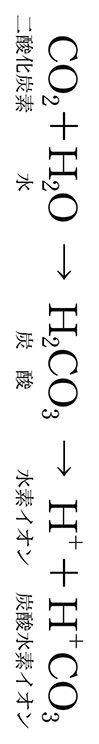

| 背すじは伸ばすな！～姿勢・健康・美容の常識を覆す～ | |
| 山下 久明 | |
| (2014) | |
はじめに
私は肩書きのない一介の歯科開業医です。おっと、この書き出しを読んで、書店の棚に戻そうとしたあなた、ちょっとだけ待ってください。
あなたはこの本を「姿勢の本」もしくは「新しい健康法の本」だと思って手にとったはずです。ところが、そうしたこととは、およそかけ離れた職業で、しかも肩書きもないとなれば、買うだけムダと思ったかもしれません。あるいは「歯医者は大嫌い！」という人もいるでしょう。
まず「姿勢」といえば、整体やカイロプラクティックです。実際姿勢に関する本は、そうした分野の先生方がたくさん書いておられます。ならば、姿勢と関連深い整形外科の先生も、姿勢の本をたくさん書いていても不思議はないのですが、意外にそうした本は見かけません。
それはなぜでしょうか？
医師は科学者でなければなりません。そのため医師が書く健康本は、たいてい医学的根拠が綴られています。ところが、従来の姿勢論にはそれがなく、「背すじを伸ばせ！」のほぼ一点張りであったために、医師という立場で姿勢本を出すには至らなかったのでしょう。
では、なぜ従来の姿勢論には、医学的根拠がなかったのでしょうか？
それは、姿勢論の根拠となるもの、言い換えれば〝姿勢のカギ〟が、歯科医でなければ見つけられない場所に隠されていたからです。いや、正確にいうと、メーテルリンクの「青い鳥」のように、身近にありながらも、それが〝姿勢のカギ〟であるとは、たとえ整形外科の世界的権威であったとしても、気づくことが困難だったからです。
ところで、本書のタイトルを見て、夏井睦氏の『傷はぜったい消毒するな』（光文社新書）を思い出した人もいるでしょう。これこそは、私が本書を執筆するにあたって大いに参考にさせてもらった本です。
「傷口は消毒してガーゼを当てて乾燥させる」。誰もが正しいと信じて疑わなかったこの治療法に対して、夏井氏はある本をきっかけに、「傷口は消毒しない、乾燥させない」新しい治療法〝湿潤治療〟を考案します。そして、それを実際に試してみたところ、それまでの治療法にはなかった効果を見出したのです。情報は広く共有してこそ価値があると考えた夏井氏は、『傷はぜったい～』を執筆されました。同書では、湿潤治療を生物史で説明するという手法がとられ、そこがとても斬新でした。
私の話に戻りますと、２００６年のこと、ある技工士さん（銀歯や入れ歯をつくる技術者）の紹介で、マウスピース型の矯正装置と出会います。その装置は、金具を介して歯にワイヤーを固定するという従来のやり方（マルチブラケット）では考えられない、姿勢や顔貌をも改善するという効果がありました。それをきっかけに、私は姿勢を研究し始めたのでした。
研究が進むにつれ、しだいにその成果を本にまとめたいという気持ちが高まってきました。そこで、本を書くにあたって、私は夏井氏の手法をまねさせてもらいました。本書が人類史から始まっているのも、そうした理由からです。
２０１０年から始まった自費出版の時代を合わせれば、２０１４年に出版された本書は、いわば第三改訂版にあたるのですが、ここへきてようやく姿勢の全容を解明することに成功しました。本書には、その過程で見えてきた、「背すじ伸ばしは、むしろ健康を損ねる習慣である」ということや、「私が提唱する立ち方を続ければ健康を維持できる」という話を盛りこんでいます。世の中にはさまざまな健康法がありますが、とりもなおさず良い姿勢にかなう健康法はありません。
ここで、本書のおおまかな構成について触れておきましょう。
前述の通り、本書はまず人類史を振り返り、人類だけの特徴である直立二足歩行を解読するための基礎知識をおさらいしていただきます（第１章）。
次に、本書のメインテーマである姿勢の問題を、「足」「胴体」「首」というぐあいに体の下から上へと理論を積み重ねながら分析していきます。人体に関する理論とはいえ、日常レベルの物理的知識で説明がつくことがおわかりいただけると思います（第２章～第４章）。
続いて、いよいよ〝姿勢のカギ〟の核心に迫ります。この部分を理解していただけたら、本来あるべきヒトの立ち方が見えてきます（第５章～第７章）。
ただしそれは、従来からいわれている「背すじを伸ばす」ことよりも、納得がいくものでなければなりません。そこで、両者の比較もしてみました（第８章）。
次に取り上げるのが、良い姿勢を下から支える脚です（第９章）。姿勢が悪ければ、正しく脚を使えませんし、正しく歩くこともできません。そこで、脚に隠された意外なしかけを説明しながら、正しい歩き方や脚の健康、美容まで話を広げていきます。
そして、前述の〝姿勢のカギ〟が直接影響する「呼吸」「飲みこみ」「歯」の話をします（10章～12章）。健康な生活を維持する上で必要不可欠であるこれらは、実は〝姿勢のカギ〟を介して、姿勢の話とつながっているのです。
続いて、背すじを伸ばすことなくどう姿勢を治すかということについて述べます（第13章）。熱心に取り組めば、健康や美容、あるいはアンチエイジングに必ずよい結果をもたらします。お金がかかるようなことはありませんし、すき間時間でもできるかんたんなものですから、ぜひ試してみてください。
最後に、姿勢を研究する過程で考案したダイエット方法について述べます（第14章）。無理なやり方ではなく、理論的に導き出されたものなので、実践すればきっと効果があらわれるでしょう。
私に本書を書くきっかけを与えてくれた技工士さんは、研究熱心ではあっても決していわゆる〝偉い人〟ではありません。むしろ歯科医からすれば、下請け的な立場の人です。夏井氏も、そのきっかけは勉強熱心な後輩でした。そして、できあがった本にはどちらも既成概念にとらわれない考え方が貫かれています。それはいわゆる「パラダイムシフト」のことなのですが、夏井氏は『傷はぜったい消毒するな』で「パラダイムシフト的なことは専門家からは起こらない」といったことを主張し、湿潤治療をめぐって学会と対立しました。私も、そういった展開をなかば期待していますが、その行く末は歴史が判断することです。歴史を動かすのは、パラダイムが崩れれば足元からすくわれかねない、〝偉い人〟では決してありません。既成概念にとらわれない皆さん一人ひとりなのです。
それでは、〝常識〟という鎧は脱ぎ捨てて、私と「青い鳥」を探す旅に出かけましょう。
目次
図版／デマンド
イラスト／高橋紀久惠
プロローグ
ジョン・フラッター博士（Dr. John Flutter）はイギリスのバーミンガムで生まれ、ロンドンで教育を受けて１９７１年に歯科医としての人生を歩み始めます。
翌72年にはロンドンで歯科医院を開設し、当時のイギリスで行なわれていた、国民健康サービスの一環としての歯科矯正にも関わりを持ち始めます。
ところが、５年ほどすると、何を思ったのか、自宅や診療所を含めた身の回りの一切合切を売り払い、四輪駆動車で世界旅行に出かけてしまいます。フランス、ドイツを皮切りに、オーストリア、イタリア、ギリシャ、トルコ、アフガニスタン、パキスタン、インド、ネパール、マレーシア、シンガポールを経由し、海を渡ってオーストラリアに到着。そこで１年あまりの旅を終えます。
ふつうならばロンドンに戻り、歯科医として再スタートを切るところですが、フラッター博士はそのままオーストラリアに定住してしまいます。博士がなぜそうしたのか、その理由はわかりません。よほどオーストラリアが気に入ったのか、あるいは初めからそのつもりだったのかもしれません。
彼の地でふたたび歯科医を開業したフラッター博士でしたが、日々の診療に飽きたらず、ときに歯科矯正の研修を受けに、遠くアメリカやヨーロッパまで足を運びました。また、父親が残したわずかながらの遺産で、ニコンの医療用カメラを買ってしまったエピソードからも、博士の研究熱心さを窺い知ることができます。
しかし、やがて自分の仕事ぶりに不満を抱くようになり、歯科矯正治療を一時やめてしまいました。決して臨床医としての資質がなかったからではありません。ひとえに仕事に対する人並み以上のこだわりが、彼をそうさせたのです。
博士のこだわりは、「顔立ち」という歯科医にとってはあまり関係のないと思われるところにまで及んでいました。なかでも大きな部分を占めたのが、「治療してきれいな歯並びになっても、また徐々に後戻りして悪くなってしまう」ということでした。これは、決して博士だけではなく、当時、世界中どの矯正歯科医にも起こる問題だったのですが、特に博士にとっては決して許されないことだったのです。
人は悩み苦しんだ末に、神がかり的なひらめきを得ることがあります。人類は、こうしたひらめきによって、その歩みを進めてきたといっても過言ではありません。アルキメデスもニュートンもそうでした。そして、博士もまたその一人だったのです。
ある日フラッター博士は、南太平洋の小島で、歯科治療のボランティア活動に加わります。その小島は、ほとんど開発がされておらず、船着場もないほどで、現代文明に侵されていない土地でした。
住居も風通しの良い簡素なものでしたが、島民はたくましく健康的でした。また昔ながらの、かみごたえのある料理を日々食べているために歯の磨耗はありましたが、虫歯も歯周病もほとんどなく、その上、歯並びも良好だったのです。
ある日博士はボランティア活動の合間に、現地の青年たちに美しい滝を案内されました。しかし、滝つぼに至る道の斜面のきつさに、博士の息はすぐに上がってしまいました。口で呼吸をして、ようやく息を継ぐほどでした。ところが、青年たちは息が乱れる様子もなく、平然と鼻で呼吸していたのです。
この瞬間、フラッター博士は啓示を受けました。歯並びと姿勢は関連する、と。
一見突拍子もない思いつきのようですが、その背景には、博士の問題意識がありました。
実は博士は治療後に歯並びが戻ってしまう原因を探るために、歯並びが良い人と悪い人の両方から聞き取り調査をしていたのです。その過程で、両者の姿勢の違いが、博士の無意識の中に蓄積されていたのでしょう。また、治療にやってくる子どもたちの立ち居振る舞いに、何かを感じていたのかもしれません。こうしたことがつながり、島の青年たちの心肺能力の高さに驚いたことが呼び水となって、彼らのたくましい肉体を観察した結果、その姿勢の良さにあらためて気づかされることになったのです。
最初はかすかな思いつきにすぎなかったかもしれません。しかし、それはやがて強い確信となって、姿勢治療への道筋を照らし出したのです――。
第１章 サルからヒトへ
世界でも日本人ほど「背すじを伸ばす」ことを心がけるように教えこまれている国民はいない。学校教育に始まり、社会に出てもマスコミや書籍などを通して、それは何度となく目に留まるし、〝背すじ伸ばしのエキスパート〟による姿勢教室や姿勢セラピーを利用して、個人レッスンを受けることさえできる。
だったら、日本は「良い姿勢の国」として世界から賞賛されるはずだが、現実はむしろ逆だ。
ひょっとしたら、われわれは何か重大な思い違いをしているのではないだろうか。
そもそも姿勢の良し悪しは、ヒトが二足歩行を始めたために起こった問題であるはずだ。ならば、それを原点から見直すのも決してムダではない。問題にぶつかったら、歴史に答えを問うてみるのが賢者の定石である。
直立二足歩行を選択
サルが地上を四本足で歩くときは、前足を丸め、こぶしを地面につけます。これをナックルウォークといいます。
とはいえ、サルがまったく二足歩行ができないわけではありません。ネットで検索すれば、二足歩行をするサルの動画がたくさん見つけられます。直立とはいい難いかもしれませんが、手を地面につけることなく、器用に二本の足で歩いています。このことを考えると、ヒトの先祖にあたるサルが地上を歩くにあたって、二足歩行とナックルウォークという両方の選択肢を持っていたとしても不思議ではないはずです。
しかし、なぜかヒトはナックルウォークを捨てて、地上を直立二足歩行する道を歩んでいきます。
その理由は、ナックルウォークより二足歩行の得意なほうのサルが、突然変異でヒトとして進化したからとも考えられますが、それよりも二足歩行によって空いた手で、石を道具として使ったり、食べ物を運んだりすることにメリットを見出したからではないかといわれています。
実際、京大霊長類研究所、英国ケンブリッジ大学、そしてアメリカ、ポルトガルの研究者からなる国際共同チームは、ふだん四足歩行しているチンパンジーも、貴重なナッツを見つけたときには、一度にたくさんのナッツを運ぼうとする結果、二足歩行になることが多くなり、どこにでもあるナッツを運ぶときに比べ、その頻度は４倍に増えるという研究結果を発表しています。
肉を求めて平地へ
サルがヒトへと進化する過程で、手を使うために二足歩行を始めたにせよ、なぜ平地を歩くようになったかという根本的な問題は、未だに謎とされています。
ヒヒは肉を食べますが、サルは基本的には草食動物です。アリを食べることもありますが、それは栄養補助食品と考えられています。ですから森の中でも食べ物には困らなかったでしょう。その上、樹上生活をしていれば外敵に襲われることも少なかったはずです。それにもかかわらず、なぜサルは地上に進出してヒトとして生きていくことにしたのでしょうか。
よくいわれるのが、気候変動で森林が激減して地上に追いやられたという説です。しかし最近は、森林が激減する前から平地に進出し始めたのではないかという説も出てきています。だとすれば、樹上生活を続けながら、ときどき平地へ食べ物を探しに行ったのかもしれません。
森林を追い出されたとしても、自らの意志で平地に出たとしても、平地でのお宝は肉だったに違いありません。草食主義のサルでも、肉をまったく食べないというわけではありません。チンパンジーが縄張り争いの末に敵のサルを食べてしまうというショッキングな映像が、英国ＢＢＣによってYouTubeにアップされています。
だからといって、突然肉食主義に宗旨替えするのもやや納得いかない面があるのですが、ともかく、ヒトが後に動物狩りを始めることからしても、サルにとって平地の肉は魅力的だったはずです。
死肉をあさる
肉を手に入れるための狩りを安全に行なうには、槍や弓矢などの武器があったほうがよいのですが、その武器も最初は、せいぜい木の棒か動物の骨だったはずです。そんな貧弱な武器でも、集団で動物に立ち向かえば、狩りは成功するでしょう。しかし、平地に降り立ったばかりのヒトに、そこまでの知恵があったとは思えません。
危険を冒さずとも、手っ取り早く見つけられる肉といえば、他の動物が食べ残した死肉でした。
われわれの祖先が死肉をあさったとは、あまり認めたくはない話ですが、肉食獣が立ち去った後の絶好のタイミングで肉を確保しなければ、同じ死肉を狙っている他の動物との競争に勝つことはできなかったでしょうし、何といっても自分自身が肉食獣の餌食になる危険すら生じます。ですから、これはこれで、知恵と勇気が必要な行為だったのです。
ともかく、樹上での草食生活が長かったわれわれの祖先は、慣れない狩りをしなくても入手できる死肉を食べ始めました。こうしてカロリーの高い食べ物を摂取できるようになったことが、脳を大きくすることにつながり、進化のスピードを速めたというのが定説になっています。
骨まで食べていた
死肉は他の動物の食べ残しですから、骨のまわりにわずかばかりの肉しか残っていなかったでしょう。ヘタをすれば、ほとんど骨だけだったかもしれません。しかし、たとえそうだったとしても、二足歩行で手が使えるようになったヒトは、骨を石で割って食べることができたのです。
「骨まで食べたのか」というと何だかあさましい気もしますが、今の日本でも豚骨ラーメンは、しょう油、みそ、塩と並んで人気ですし、イタリアにもオッソブーコというおいしい骨髄料理があります。また、昔ながらの骨を食べる文化が残っている地域も世界には存在します。それを考えると、当時の人類が骨を食べていたとしても、その子孫であるわれわれが恥ずかしいと思うことはありません。当時の食料事情を考えると、むしろ上等なほうだったのでしょう。
骨の中の骨髄は血液をつくる場所ですから、カルシウムをはじめ、体の基本となるエッセンスが多く含まれています。特にタンパクや必須脂肪酸が豊富なので、骨髄こそが理想の食べ物であるという説もあります。骨は人類が生き残るための貴重な食料だったのです。
サルは木から木へと飛び移りながら生活していたので、石を握るのはたやすいことかもしれませんが、そこから骨を割るなんてことはどうやって思いついたのでしょう。くるみを割るのと同じ感覚だったのでしょうか。それは謎ですが、いずれにせよ、ヒトは賢くなることで、食べ物のバリエーションを増やしながら生き延びてきたのです。
化石に残る二足歩行の痕跡
当時の人類の生活を記録した映像が残っていればいいのですが、もちろんそんなわけにはいきません。残っているのは化石だけです。しかし、ここにも、ヒトが二足歩行をした手がかりがあります。
そのひとつが、頭蓋骨の大後頭孔の位置です。
大後頭孔とは、頭蓋骨と首の骨がつながるために存在する頭蓋骨の孔のことです。サルはこの孔が頭蓋骨の後方にあります。するとサルの首の骨はそこから水平に伸びていることになるので、体を直立させておくには無理が生じます。だからサルは、いつも二足歩行というわけにはいかないのでしょう。
一方、ヒトの大後頭孔は頭蓋骨の底面にあります（図１）。この場合、首の骨は頭蓋骨から下に垂直に伸びていることになるので、体を立てて歩くことができます。
サルとヒトとの区別において歩行様式は最も重要な問題です。ですから、頭蓋骨の化石を調べて、大後頭孔が後方にあればサルの化石だし、それが底面にあればヒトの化石だと判断されるのです。
ただし、大後頭孔の位置が移動した直接的な原因については、まだよくわかっていません。けれど、それは二足歩行をしていた証拠であることに間違いはないのです。
また、頭蓋骨よりも化石として残りにくいのですが、骨盤も二足歩行の手がかりになります。
四足歩行の場合、骨盤は背骨から足へと力を伝えるだけの役割ですから、その幅は小さくてもかまいません。しかし、二足歩行を始めれば、内臓をいったん骨盤で受け止めねばなりませんから、骨盤の幅は広がって、上半身を盛りつける大皿のような形になる必要がありました。そのため、サルの骨盤は幅が狭く縦長であるのに対して、ヒトの骨盤は横に大きく広がっているのです（骨盤については、第７章でくわしくお話しします）。
完全な直立二足歩行はいつからか
このように、大後頭孔や骨盤などの化石から、初期人類の歩行の様式をある程度推察することは可能です。とはいえ、実際にどのような歩き方をしていたのかということまではわかりません。もしかしたら、初期人類の二足歩行は、サルのそれのように、不安定なものだったかもしれません。ましてスキップを踏んだり、華麗にダンスを踊ったりするといった、複雑な足使いはできなかったと思われます。
それでは、完璧な直立二足歩行はいつごろから始まったのでしょうか？
こうした疑問に完全に答えてくれるわけではないのですが、タンザニアのラエトリという場所で見つかった、およそ３６０万年前の人類の足跡の化石は、われわれに興味深い事実をもたらしてくれます。
まず、この化石に残るまっすぐで平行な足さばきは、体勢バランスの良さ、つまり姿勢の良さを意味します。
そして、二足歩行に欠かせない太く短い親指を持っていたことも見てとれます。地上を歩きはじめたばかりの初期人類は、木の枝をつかむために、足の親指は長かったのです。
さらに、この化石には土踏まずも観察されます。土踏まずは人類だけの特徴で、生まれたときにはありませんが、歩いているうちにできてくるものです。そこを筋肉で満たしてしまったアスリートは別としても、これがあることで、長い距離を歩くことができるようになったのです。
およそ３６０万年前というと、人類の歴史を７００万年とするならば、ちょうど半ばにあたります。そのころの人類は、まだ猿人という段階にあったのですが、すでに立派な直立二足歩行をしていたことがわかります。
ただし当時の人類の頭は、今ほど重くはなかったので、われわれ現生人類とまったく同じ姿格好で歩いていたとまではいいきれません。
小さくなった犬歯
直立二足歩行以外にヒトの特徴を挙げると、犬歯の矮小化、すなわち、サルに比べて犬歯が明らかに小さくなっていることがあります。
犬歯は俗に糸切り歯ともいわれています。野生動物の場合は、犬歯というよりも「牙」と表現したほうがいいかもしれません。犬歯は食べ物を引きちぎったり、かんたんな道具として利用したり、あるいは武器として利用されているともいわれています。
肉食動物は犬歯がなければ、獲物をしとめることも、それを食べることも困難ですが、サルは前述の通り基本的に草食なので、犬歯をそうした用途には使わず、ケンカのときにむき出しにして相手を威嚇するような使い方をします。そのためボスザルになるには、立派な犬歯がなくてはなりません。たとえ権力争いに興味がなくても、ライバルを牽制できるほどの犬歯がなければ、メスを他のサルに奪われて自分の子孫を残すことができないのです。
一方、ヒトは立ち上がったことで、ファイティングポーズをとったり、木の枝や動物の骨を武器にすることができるようになったため、犬歯で他のオスを威嚇する必要がなくなったのでしょう。その代わり、オスはメスの気を惹くため、せっせと肉や骨を集めてメスに貢がなければならなくなったはずです。はたしてこれが進化だったのか退化だったのかは別としても、大きな犬歯がないと子孫を残せない時代が終わってしまったことだけは確かです。
大後頭孔の位置の変化ともども、この犬歯の矮小化という出来事も、ヒトへの進化において重要な意味をもっています。
生肉や骨をよく味わうには
大きく長い犬歯を持つサルの場合、犬歯が毎回同じ場所へかみ合わせを誘導してしまいます。その上、サルはかみ合わせるたびに、犬歯を小臼歯で研ぐようなしかけ歯のつくりになっていますので、かみ合わせをずらすのはほぼ不可能です。
しかしヒトの場合、犬歯が矮小化してくれたおかげで、食べ物を奥歯ですりつぶすようにしてかむことができるようになりました。すりつぶすといっても、歯ぎしりをするように大きくあごを動かすわけではなく、少しずつ微妙にかみ合わせをずらしながらかむのです。これなら、平地で見つけてきた生肉や骨も、よくかんで味わうことができます。
そもそも骨は、よくかまないと飲みこむことさえ困難な代物です。島泰三博士は『人はなぜ立ったのか？―アイアイが教えてくれた人類の謎』（学習研究社）の中で、骨を口の中で粉々にかみくだいた上で、さらにすりつぶすようにかんでいるうちに、骨が〝のり状〟になってきたので、ようやく飲みこむことができたと述べています。火を使って調理するようになるのは、人類史上でもかなりの後のことですから、生肉や骨を味わうには、とりあえずよくかむしかなかったのです。
かむことで生き延びてきた人類
また、ヒトはサルよりよくかむようになったので、歯のエナメル質がサルの倍ほどの厚さになりました。エナメル質とは歯の頭の部分の表面を覆う白くて硬い部分です。すりつぶすようにしてよくかめば、歯もすり減りますので、ヒトはエナメル質を厚くして防御したのです。こうした理由で、エナメル質の厚さは、サルからヒトへの進化の度合いを示すものさしにもなっています。食べ物を確保する上では、とりあえずほぼ丸飲みしておいて、後でゆっくりと消化するのが野生の知恵ですので、食べ物をかみくだいて細かくしてから飲みこむヒトの食べ方は、かなりユニークかもしれません。
また、野生動物の多くは特定の食べ物を好んで食べ、消化器もそれに特化するのがふつうですが、食べ物の種類が限定されればされるほど、その出来高に振り回されることになります。その点、ヒトは、よくかむことで食べ物を細かくつぶすと同時に、そこに唾液に含まれる消化酵素を混ぜこむことによって、その後の消化プロセスを効率的に行なうことができるようになりました。その結果、多様な食べ物はムダなく消化され、それは生き延びるチャンスを増やすことにつながりました。しかも唾液には、抗菌作用や発ガン性物質を中和する毒消し作用もあることがわかっていますので、これも食べ物の多様性に貢献したはずです。
言葉と引き換えにしたもの
鼻の奥と口の奥は「咽頭」と呼ばれる空間でつながっています。いわゆる「のど」のことです。サルの場合、気道と食道の入り口は、口腔（口の中）のすぐ奥にありますので、咽頭は、単に鼻の奥と口の奥をつなぐだけのものになっています。
一方、ヒトの気道と食道の入り口は、のど仏付近に位置していますので、そこから口腔まではかなり距離があります。こうなったのは、直立二足歩行をしているうちに気道と食道の入り口がのど仏ごと下がったためといわれていますが、ともあれ、そのおかげでヒトは、気道の入り口にある声帯から続く長い咽頭を共鳴させることで、複雑な音が出せるようになりました。動物はかんたんな言葉を話すことができるといわれていますが、複雑な概念を音声でやりとりするには、口や鼻の共鳴だけではなく、長い咽頭が必要だったのです。
人類が文明を築く上で言葉がどれだけ役に立ったかは、今さらいうまでもないでしょうが、一方で長い咽頭によるデメリットもありました。
それは、飲みこんだ水や食べ物を、食道へ正確に送りこむのが難しくなったことです。もし、飲みこんだ水や食べ物が肺に入ってしまうと、肺の機能が損なわれるばかりか、肺炎を起こしかねません。それを防止するために、食べ物や水を飲みこむときは、一時的に気道にフタをしているのです。
水や食べ物だけならまだしも、自然にあふれ出てくる唾液は、１日に何百回も飲みこまなければならないので、問題はより深刻です。
この、「難しくなった飲みこみ」と「よくかむようになったこと」は、実は深い関連があります。これについては、第11章で取り上げましょう。
＊
姿勢の本だと思って読み始めたら、いきなり人類史についての話から始まったので、面食らった読者の方もいるかもしれません。しかし、こうした話には、直立二足歩行という、私たちの姿勢を解き明かすヒントが隠されているのです。なぜ、本書のタイトルである「背すじを伸ばすな」という主張に私が行き着いたのか、それを理解して納得していただくためにも、「なぜヒトが二足歩行を始めるに至ったか」というお話に、次章以降もお付き合いください。
１章のまとめ
■ ヒトとサルの化石を見分けるには、大後頭孔の位置と骨盤の形状に着目。
■ サルは二足歩行ができないわけではないが、大後頭孔と骨盤の形状が二足歩行には向いていないので、ふだんはナックルウォークをしている。
■ ヒトは猿人の時代から確かな直立二足歩行をしていた。
■ ヒトは二足歩行で見つけた平地の死肉や骨を集めて食べていた。
■ ヒトの犬歯の矮小化は死肉や骨をよくかむために都合がよかった。
■ ヒトはよくかむことで生存の可能性が高まった。
■ ヒトはのど仏が下がって飲みこみが難しくなった。
第２章 直立二足歩行
「ひざを伸ばして立ちましょう」と〝姿勢のエキスパート〟はこともなげにいうが、ひざがまっすぐになるかどうかは、ある物理法則に関わっているので、お題目を並べただけではダメである。
重力と四足歩行
約40億年前、海で誕生した生命の源は、やがて生物となり、海だけでなく川や湖といった淡水にも進出します。しかし生物の数が増えてくると、生物間での生存争いも増えてきて、多くの生物にとって、水中が安全な場所であるとはいえなくなりました。その点、地上にはまだ敵がいなかったので、水中生活を捨てて地上で暮らし始める生物も現れました。
生物が地上に進出するにあたっては、いろいろな問題に見舞われたはずです。まずは呼吸の問題があったでしょう。そして空気中での体の乾燥の問題や、降り注ぐ太陽光線の問題もあったはずです。そうした中の一つが、重力の問題でした。
浮力で重力を打ち消すことができた水中とは勝手が違い、地上では重力をそのまま受け止めなければなりません。それを解決する方法として地上の多くの動物がとったのが、四足歩行という形式です。
四足歩行動物は頭を前に突き出しています。突き出した頭は、筋肉で引っぱり上げなければなりません。つまり、頭を地面につけて休んでいるとき以外は、頭を持ち上げる筋肉を常に働かせる必要があるのです。
ところが筋力を使って頭を持ち上げるのは、いわばエネルギーのムダ遣いです。動物はできるだけ省エネで過ごしたほうが少ない食べ物ですむので、生き残るチャンスは、そのぶん高くなります。つまり、頭を前方に投げ出すことは、生き延びる確率を減らすことにつながるのです。
猫のように軽い頭と短い首という組み合わせならば、比較的小さい力で頭を引っぱり起こすことができるでしょう。しかし、頭が軽くても首が長ければ、そのモーメント力（〈作用する力×支点までの距離〉のこと。「回転力」ともいう）は大きくなりますので、頭を持ち上げるためには、より多くの力が必要になります。たとえばキリンの場合、高い場所にある葉を食べるために首が長くなったのはしかたがないとしても、馬の首はあれほどの長さが必要なのでしょうか。
このように一見したところ、四足歩行動物は頭を持ち上げるためにムダにエネルギーを消費しているように思えます。しかし、四足歩行動物が頭を持ち上げる力は、前足の後ろに伝えられて、胴体を持ち上げる力にもなっているのです。すなわち、前足を支点とするシーソーの原理で、頭を持ち上げるのと同時に胴体も持ち上げているのです。言い換えれば、頭を持ち上げると、自然に胴体も持ち上がるわけです。
シーソー原理で胴体を支えることができた四足歩行の形態は、重力に立ち向かうのに都合がよかったので、地上には四足歩行をする多種多様な動物が誕生することになったのです。
背骨は魚からの贈り物
四足歩行動物の背骨も、ヒトの背骨も、魚だった時代から引き継いできたものです。実は、この圧縮に強く、かつ柔軟性のある骨こそが、生命進化の上での大発明だったといえるのです。
そうした骨と筋肉とを組み合わせれば、筋肉の収縮力というタテの力をヨコの力に変換することができます。この原理で、魚は体を左右にくねらせて、尾ビレから強い推進力を発生させることに成功しました。その結果、水の中は、高い運動性能を誇る魚の形態の生物であふれることになったのです。そして、この運動性能は陸上に棲む動物にも引き継がれ、時速１００キロという途方もないスピードで走るチータのような動物が誕生することにつながりました。
チータは走る際、足の筋肉も使いますが、主に使うのは、背骨の上側にあるたくさんの筋肉です。これを一気に使って骨盤を跳ね上げ、その力を足に伝えます。すると、体は背すじを伸ばした姿で宙へと舞い上がります。着地は前足から行なうのですが、同時に、今度は背骨の下側にある筋肉を使い、前足をとっかかりに骨盤を引っぱりこみ、さらに胴体を前進させます。そして、極限まで体を丸め、後ろ足を前足の前へとクロスさせてから後ろ足を着地させたその瞬間、ふたたび背骨の上側の筋肉へと力を切り替え、大地を蹴飛ばすのです。
魚が骨の左右の筋肉を交互に動かすのに対して、チータは背骨の上下の筋肉を交互に使うという点が異なりますが、どちらも圧縮に強く、かつ柔軟性がある骨と筋肉との組み合わせによって、高い運動性能を得ることに成功したのです。
柔軟な首
魚には首がありませんが、水中では三次元的移動ができますので、体を立てさえすれば、水底のエサを食べることができます。
ところが地上ではそんなわけにはいきません。特に四足歩行動物は速く走るために足を長くしたので、柔軟な首がなければ水を飲むことすらできません。象には首らしい首がありませんが、長い鼻を器用に使ってエサを口へ運べるので、これは例外中の例外といえるでしょう。
また四足歩行動物の場合、あたりの気配を探るときに、いちいち体を動かしていたのでは、敵に気づかれてしまいますから、やはり首があったほうが命拾いもするでしょう。
柔軟な首があると、走るときにも便利です。私たちが自転車やオートバイでカーブを曲がるとき体を横に倒すように、四足歩行動物も曲がりたい方向へ首を向ければ、重心が移動し、スムーズに方向転換することができます。そう考えれば、馬の首もだてに長いわけではないようです。
そして、チータのように、胴体を激しく上下動させながら疾走しても、その揺れを柔軟な首が吸収することで、頭の位置を安定させることができます。もし頭の位置が安定していなければ、視界がブレてしまいますし、脳挫傷すら起こしかねません。つまり、チータの激走を支えるのは、首の骨の柔軟性なのです。
柔軟な首の先にある頭を支え続けるためには、エネルギーのムダ遣いは多少必要です。しかし、それに見合うだけの利便性が首にはあるのです。
カンガルーとヒトの二足歩行の違い
四足歩行動物は、シーソーの原理で胴体を持ち上げ、重力に対抗することに成功しました。そしてヒトは、サルという中間形態を経て、四足歩行から二足歩行へとたどり着きました。
とはいえ、二足歩行はヒトの専売特許ではありません。前章で述べたように、サルも二足歩行をすることがあります。たとえばテナガザルは、樹上や地上を器用に二本足で歩くことができます。
サル以外では、カンガルーが二本足で飛び跳ねています。歩くわけではありませんが、二本足で立つことができるのは事実です。
それに鳥も地上では二本足で立っています。腕が羽になってしまったので、二本足で立つ必要があるといえばそうなのでしょうが、スズメでも思いのほか地上をすばしっこく走りまわります（実は、走っているのではなく、カンガルーのように飛び跳ねています）。ダチョウに至っては、地上を走ることができても、もはや空を飛ぶことはできません。
二本足で歩いて愛嬌を振りまく犬もいます。また、かつて話題になったレッサーパンダの「風太くん」は器用に二本足で立ち、その上短時間なら歩くこともできるそうです（最近は立たなくなったと聞きますが......）。
このように二本足で歩く動物はいろいろいますが、犬やレッサーパンダはいつも二本足で歩いているわけではありません。その点ダチョウはいつも二本足で歩いていますが、ヒトが歩いている姿とはかなり異なります。
これらの生き物の二足歩行と、ヒトの二足歩行のどこが違うのか――それはヒトの場合、単なる「二足歩行」ではなく、「直立二足歩行」であるという点です。
空気椅子状態で立っているペンギン
犬の足の裏に見える部分は、ヒトの足の指の付け根から先の部分に過ぎないことを、すでにご存じの方も多いと思います。すねのようにも見える部分が足の裏にあたり、そして、ひざに見える部分がくるぶしなのです。つまり犬の足は、ヒトの足の裏にあたる部分がとても長く、地面には足の指の付け根から先だけがついているという構造になっているのです（図２）。
また犬の足は、胴体に近い部分にひざがあり、短い太ももに続く股関節を介して胴体とつながっています。だから、そこを観察すれば、ひざと股関節が曲がっていて、後ろ足はまっすぐには伸びていないことが見てとれます。一方、前足は、手首とひじに相当する部分が、比較的まっすぐに伸びていることにも気がつくでしょう。
カンガルーの足も、犬の後ろ足のように、ひざと股関節が曲がっているのは一目瞭然ですし、鳥のひざは曲がっていないようにも見えますが、鳥の足も犬の後ろ足と似たような構造で、鳥の足のように見えるのはヒトの足の裏にあたる部分でしかないのです。そして、毛に覆われたすねに続くひざと太ももは胴体に隠れて見えにくくなっています。そのため足は一見まっすぐ伸びているようでも、犬の後ろ足同様ひざと股関節は曲がっていますし、そもそも胴体が前傾していますので、とても直立とはいえません。
その点、ペンギンは直立二足歩行をしているように見えます。しかし、ペンギンの骨格標本を見ると、ひざと股関節がほぼ直角に曲がっているのです。犬の立ち姿を人間が真似するとすれば、単につま先立ちすればよいのですが、ペンギンの立ち姿は、人間に当てはめると、つま先立ちをした上で空気椅子に座っているようなものですから、とても真似することはできません（図２）。
クラウチングスタート
ヒトは長い間二足歩行をしてきたので足は長くなりましたが、逆に腕は短くなりました。そのため、よつんばいで過ごすには、いささかバランスが悪くなってしまいました。
そんなわれわれでも、陸上競技のクラウチングスタートではよつんばいになります。
こうすると、体の重心を低く前方に持っていくことができます。スタートの際には、曲げておいた足を一気に伸ばし、重心を引き起こしながら加速していくのです。いうなれば、前方に移した重心を推進力に変えてゆくのです（図３）。
クラウチングスタートの際の蹴り足は、指の付け根から下を地面に着けています。このとき、足の裏はスターティングブロックにのせているとはいえ地面からは浮いていますし、蹴り足の方はひざも股関節も曲がっています。
この蹴り足の形は、ちょうど犬の後ろ足と同じです。つまり犬は、陸上競技の「位置について」と同じ状態で立ち、「よーいドン」となりしだい全力で走り出すことができる足の形だったのです。犬は四足歩行ですから、後ろへひっくり返るのを心配せずに、曲げておいた両足のひざと股関節を一気に伸ばして加速できます。犬の股関節とひざが最初から曲がっているのは、足に力をためているからなのかもしれません。
では、ペンギンのひざと股関節が直角に曲がっているのはどういう理由なのでしょうか。カンガルーは飛び跳ねるように移動しますので、ひざと股関節を最初から曲げておくことが有利に作用するでしょうが、ペンギンは飛び跳ねることはおろか、走ることすらしません。だから、スタートダッシュを切るために力をためているわけではなさそうです。
しかし、それは重心の位置で説明がつくのです。
股関節とひざの曲がりは重心の位置で決まる
私たちが重くてかさばる荷物を運ぶとき、ひざと股関節がどうなっているか？
どちらも曲がっているはずです。もし重い荷物を抱えたまま、足を一直線に伸ばして直立姿勢をとったら前のめりに倒れてしまいますよね。つまり体の重心が前に偏ると、ひざと股関節は曲がらざるをえないのです。これはねこ背の人も同じです（図４）。
ここから導き出される結論は、上半身のバランスが前のめりになると、下半身はまっすぐに伸びないということです。
すると、ペンギンがひざを直角に曲げたまま立っていられるのは、重心が前方にあるからだと想像できます。つまり、ペンギンはいつも「何か」を抱きかかえているのです。そして、その「何か」とは、「厚い皮下脂肪」に他なりません。
さて、犬の後ろ足は、スタートダッシュに都合がいい形でしたね。とはいえ、そもそも後ろ足は、胴体を支えるべきものです。そして支えるべき胴体は、後ろ足よりも前方にあるので、前のめりの重心と同じことが犬の後ろ足にも発生します。ですから、犬の後ろ足のひざと股関節が曲がっているのは理にかなっているのです。
一方、前足は、その上で頭と胴体との重量バランスがとれているので、まっすぐに伸ばしていても大丈夫なのです。これで犬の前後の足の形が異なる理由を理解いただけたでしょう。
＊
本章で述べてきたことと、本書のテーマである「姿勢」を絡めていうと、「姿勢良く立つためには、前のめりにならない上半身が必要」ということになります。そうでなければ、足がまっすぐにならないので、良い姿勢にはならないからです。
さて、次章では胴体を取り上げます。魚から受けついだ柔軟な背骨についてと、ヒトをヒト足らしめる重い頭が体のてっぺんにのっかっているという厄介な問題について考えていきます。
２章のまとめ
■ 柔軟かつ圧縮に強い魚の骨は、生命進化における大発明。海に暮らしていた魚のうち、これを受けついで陸に上がるものも出てきた。
■ 四足歩行は、頭と胴体を同時に持ち上げられるので、重力に対抗するのに悪くはない姿勢である。
■ チータが猛スピードで走っても脳挫傷を起こさないのは、柔軟な首の骨があればこそ。
■ 二足で立ったり歩いたりする四足歩行動物はいるし、鳥類ではあるがペンギンは直立二足歩行をしているように見える。しかし足のひざは伸びていない。
■ ペンギンがひざを直角に曲げたまま立っていられるのは、厚い皮下脂肪を「抱えて」いて、重心が前方にあるから。
■ ひざが、まっすぐに伸びるかどうかは、足とそれが支えるべきものの重心の位置関係で決まる。
■ イヌの胴体は後ろ足より前方にあるので、重心は前方にある。だから後ろ足のひざと股関節が曲がっているのは理にかなっている。
■ 姿勢が良ければ、イヌの前足のように足はまっすぐに伸びるが、姿勢が悪いとイヌの後ろ足のように、ひざと股関節が曲がってしまう。
第３章 頭の重さと背骨
魚や四足歩行動物の時代、背骨はヨコにして使うものだったが、ヒトはそれをタテにしてしまった。これにより、筋肉の力の方向を変換するという機能のみならず、重力に抗し、常に効率よく頭を支えるという機能が、背骨に加えられたのである。
つまり、しなやかだが圧縮には強いという特性を、頭の持ち運びにも利用してしまったわけだ。これこそ、天動説に対する地動説に匹敵するほどの、生物界におけるパラダイムシフトである。
頭を大きくできなかった頑丈型猿人
ヒトはサルという中間形態を経て、直立二足歩行を完成させました。しかし、ヒトはサルが進化したものではなく、何らかの拍子にサルから分化したものだといわれています。
それが進化だったら、その道のりは比較的平坦なものだったでしょう。しかし分化の場合、現生人類（ホモ・サピエンス）に至るまでの道のりは険しく、さらなる分化と淘汰を繰り返してきました。たとえば初期人類にあたる猿人の時代には、頑丈型猿人と華奢型猿人に分かれたこともありました。
頑丈型猿人は、ものをかむための筋肉（側頭筋）が頭の上にまで伸びているのが特徴です。頭のてっぺんには、ちょんまげのような骨（矢状稜）が出ていて、その両側からほおかぶりのようなかっこうで大きな側頭筋が、あごの骨の上端まで伸びていたのです。そのため、頑丈型猿人のかむ力はたいへん強かったことが想像されます。
しかし、ものをかむたびに、頭全体を締めつけることとなったので、頭は大きくなりませんでした。
一方、華奢型猿人は、側頭筋が頭の上にまで伸びておらず、かむたびに頭を締めつけられることがないので、頭を大きくすることができました。結果は頑丈型猿人が滅び、華奢型猿人が生きのび、われわれにつながっています。
ヒトは背骨をタテに使った
前章で述べたように、魚は特別な骨のおかげで高い運動性能を得ることに成功しました。その骨は柔軟性がありながらも、圧縮に強いため、筋肉のタテの力をヨコの力に変換することができたのです。
四足歩行動物は、魚の骨から背骨をつくり、さらに首をつくりました。首があることで頭の使い勝手はよくなりますし、首と背骨の柔軟性があるからこそ、チータは時速１００キロで疾走できるようになったのです。地上の動物は、魚から受けついだ財産をムダにはしなかったのです。
しかし、首には柔軟性があるゆえ、頭は常に筋肉によって引き起こさなければなりません。でもそれを一種の耐重力姿勢であると考えれば、決してムダとはいえませんでした。つまり、頭の重さも姿勢維持に役立っていたのです。
では、四足歩行動物もヒトのように、頭を大きくしてもよかったのではないでしょうか。
四足歩行動物の中で、たとえば首のないワニやトカゲのような爬虫類は、足を体の外側へ張り出し、踏ん張るようにして歩きます。それが、首のある哺乳類になると、足の根元を回転させるようにして、足を胴体の下に引きこみました。このとき、前足と後ろ足では回転方向が違ったので、ひじとひざはあべこべに曲がるようになってしまいました。その結果、後ろ足はつま先を前に繰り出しやすくなり、前寄りの重心に対応しやすくなったのです。逆に前足は後ろ寄りの重心に対応しやすくなりました。つまり、その中間にある胴体を支えやすい足のつくりになったのです。
犬の前足がまっすぐなのは、頭と胴体によるシーソーの重心が、前足の上にあるからでしたね。しかし、その重心が前に移動したとすれば、それにともなって、つま先も前に繰り出す必要が生じます。ところが、前足は後ろ足と違い、つま先を常に前に繰り出しておくのが不得手です。そのため、頭を重くしたければ、胴体も重くし、シーソーのバランス点が前足を超えることがないようにしておかなければなりません。
首を短くすれば、そのモーメント力は小さくなりますので、胴体の重さを変えずに頭を重くすることは可能でしょうが、そうなると今度は首の自由が奪われてしまいます。首を立てるなどして頭を重くするという方法もなくはないのですが、行きつくところ、四足歩行である限り、頭だけを勝手に重くするというわけにはいかないのです。
一方ヒトは、背骨の〝圧縮に強い〟という特性で頭を重くすることに成功しました。背骨を立てて、その上にうまく頭をのせれば、理論上は筋力ゼロで頭を支えることが可能というわけです。同様に、足の骨もまっすぐ伸ばして、その上に上半身をバランスよくのせることができれば、やはり理論上は筋力ゼロで体を支えることも可能なのです。
ただ実際のところは、さすがに筋力ゼロで立つことはできませんでした。しかし、四足歩行動物が背骨をヨコに使っていたのに対し、ヒトは背骨をタテに使うことで、頭を重くしても、それを合理的に運ぶことができるようになったのは事実です。
四足歩行動物とは別の理由で頭を大きく重くできなかった頑丈型猿人は別としても、ヒトはこうして頭の重さという制約を取り払うことに成功したのです。
柔軟な背骨と頭の重さ
頑丈型猿人が滅んでしまったこともあわせて考えると、人類がとった、頭を大きく重くする作戦は、結論からすれば成功だったといえます。
しかし、頭は体のてっぺんにのっていますから、この部分を重くすると、体の安定性が損なわれてしまいます。ましてや、それを支えるのは背骨です。その柔軟性があだとなって、いつバランスがくずれてしまうか、わかったものではありません。いったんバランスがくずれれば、背骨は一気に倒れてしまいます。それでは、背骨をタテに使って、重い頭をできるだけ楽に持ち運ぼうというもくろみが、根底からくずれてしまいます。
もし、背骨から柔軟性を取り払うことができれば、背骨は常にまっすぐになり、姿勢は安定して良くなるはずです。けれど背骨から柔軟性を取り払ってしまえば、魚から受けついだ骨の運動性能を生かせなくなり、きびしい自然界では生き残れなかったはずです。
つまり直立二足歩行を科学的に理解するには、首を含めた背骨の柔軟性を損なわないという条件の中で、ヒトがどうやって頭を大きく重くできたかを解明しなければならないのです。
竿とボウリング球の人体構造模型
その謎を解明するにあたって、ここで背骨を竿にたとえて考えてみます。竿も背骨と同じく、柔軟性がありながら圧縮には強いという特性があります。
また成人の頭をボウリングの球にたとえてみましょう。成人の頭の重さは５～６キロですから、だいたい11～15ポンドのボウリングの球に相当します。けっこう重いですね。
つまりヒトの上半身は、柔軟性のある竿の上に、重いボウリングの球をのせたようなイメージなのです。
この人体構造模型をうまく立たせておくには、球をのせる前に、まずは竿をまっすぐに立てておく必要があります。そうしておかなければ、球をのせたとたんに竿は曲がってしまうからです。
竿をまっすぐに立てた上で、頭となる球をのせます。もしもこのとき球の重心が竿からはずれてしまえば、やはり竿は曲がってしまいますので、球は慎重にのせる必要があります。それさえうまくできれば、この人体構造模型をバランスよく立たせておくことは可能です。
竿を棒に変えると......
けれども、風のない平坦な場所にそっと立たせておくだけならいざ知らず、風でも吹こうものなら、すぐに竿はバランスをくずし、球の重さでしなってしまいます。そこで、手っ取り早く、竿が曲がらないようにするには、テープやセメントのようなもので竿を補強する必要があります。つまり、竿を棒にしてしまうのです。
こうして竿が棒になれば、風などの外乱に対して強くはなるでしょうが、棒を支える地面は、風にゆさぶられるたびに少しずつ緩くなっていき、最終的に棒が倒れてしまうかもしれません。
「ならば！」と地面を補強したらしたで、棒に加わった力は地面と棒の付け根に集中してしまいます。風で何度も揺さぶられているうちに、棒は根元から折れてしまうかもしれません。どうせ揺さぶられるなら、硬いものよりしなやかなもののほうが丈夫なのです。ほら、ビルだって、地震とともに揺れる耐震構造というものがあるじゃないですか。それなら、ヘタに補強することを考えずに、竿は竿のままにしておくのが得策です。
そもそも、竿を硬くするつもりなら、最初から竿ではなく棒と球のモデルを引っぱり出しておけばすんだはずです。なぜ、竿を持ち出したかといえば、それが背骨の特性に近いからです。棒に球では、人体の構造模型にはならないのです。
骨盤と背骨はタイトにくっついている
実際の人間の場合、背骨を棒のように硬くしたければ、背骨まわりの筋肉を利用すればすみます。しかし、そうすると、その根元にある骨盤を揺さぶることになります。
骨盤と背骨は関節でつながっているのではありません。骨盤の角度を変えると、それにつられて背骨の腰の部分のカーブも変化してしまうほど、骨盤と背骨はタイトにくっついています。ですから、背骨を棒にしてしまうと、その力が骨盤を歪ませたり、背骨そのものにダメージを与えてしまいかねないのです。
それに、柔軟な背骨は魚からの贈り物でした。わざわざ筋肉を使って背骨を硬くしてしまうことは、せっかくのプレゼントにのしを付けて魚に突っ返すのにひとしいのです。何のためにそんなことをするのでしょう。そこまで魚の骨がきらいなのでしょうか。
冗談はともかく、きっと人類は進化の過程で、背骨を硬くせずともバランスよく立つ方法を見つけたに違いありません。
竿は２人で引っぱるのがいい
ふたたび竿と球のモデルに戻りましょう。ただし、竿は人の背の倍ほどの長さがあるものとします。こういう竿をまっすぐ立てておくには、棒倒し競技のように、多人数で二段三段とスクラムを組み、竿が倒れないように下から支えるのも一案です。
しかし、もしもそこに十分に長いロープがあったとすれば、もっと楽に竿を立てておくことができます。
２本のロープを、竿の上のほうに結びつけ、反対側へ少し倒しておいてから、それを２人で引っぱってやるのです。２人いれば、前後ばかりではなく、左右もコントロールできます（図５）。

３本のロープを使って３方向から３人で引っぱれば、竿はより安定しそうですが、３人がかりで微妙なバランスをとり続けるのは疲れそうですよね。かといって、力まかせに３方向に引っぱり続けると、互いの力が打ち消されてしまうので、力のムダ以外の何でもありません。そうならないためにも、竿の向こう側へバランスをわざとくずしておいてから２人で引っぱるほうが、３人がかりで取り組むより、よほどかんたんでムダがないのです。ちなみに、竿を向こう側へ倒しておくようなことを、「バイアス（偏り）をかけておく」ともいいます。
こうして、バイアスを利用すれば、３人がかりで取り組むより、２人だけで気軽にムダなく、その上、竿の柔軟性を損ねることもなく、状況に応じた竿のコントロールができるのです。
あばら骨がロープの役割
さて、ロープさえあれば、２人だけで重い球がのった竿を支えられることがわかりました。ならば実際の人体も、そこにロープのようなものがあれば、そしてロープの引き手が存在すれば、重い頭をのせても背骨が柔軟性を損なうことなく、安定して立っていられるはずです。
まず、引き手についてですが、候補として、腹筋と背筋（以下、背筋は「はいきん」、背すじは「せすじ」と読む）の２つが考えられます。というのも、「姿勢を良くするには、背筋と腹筋のどちらが大切か」という議論がよくなされるからです。
ところが背筋は、まさに背骨にくっついているので、背骨の引き手にはなりえません。
そこで、腹筋にロープの引き手になってもらう方法を検討してみましょう。
とりあえずそのロープは何になるでしょうか。
幸いにも腹筋は、あばら骨（肋骨）を介して、背骨につながっています。それも、背骨の上のほう（胸椎）でつながっているのです。つまり、このあばら骨こそが、竿の上のほうに結わえたロープに当たるのです。これに気がつけば、無事、球と竿のモデルを人体に当てはめることができるかもしれません。
ところがこのモデルでは、ロープの引き手は２人であることが前提でした。２人いないと、前後はともかく左右の揺れに対応できません。しかしその点についても、腹筋は人体の中でも、比較的幅のある筋肉ですから、その両端を使い分けることで、２人でロープを引くのと同じ効果を生むことができます。
残る問題は「向こう側（人体の場合、後ろ）へのバイアス」です。これを発生させない限り、腹筋を使って立つことは不可能です。
「後ろへのバイアス」の正体
背骨は、平たい骨が積み木のように積み重なってできています。ただし、これらの骨と骨が直接くっついてしまうと、骨がすり減ってしまいますし、それが元で痛みが出たりします。それに、骨が単純に積み重なるような構造では、柔軟な背骨にはなりません。そこで、骨と骨との間には、椎間板というゴムのような軟組織が挟まっています。背骨の柔軟性は、この椎間板のおかげなのです。
そして、背骨と背骨（椎骨と椎骨）を結んでいるのは、椎間板だけではありません。椎間関節という関節も両者を結んでいます。この関節は、椎間板の後ろ側にあります。
この構造を、たとえていえば、椎間関節という蝶番でつながった板と板の間に、椎間板というクッションが挟まっているようなものなのです。
さて、腰椎（腰の骨。背骨の下のほう）には前方へふくらむカーブがついています。このように前にふくらんでいるカーブを「前彎」といいます。ちなみに胸椎は後ろへふくらんでいますので、こちらは「後彎」といいます。
では、どういったしかけで、腰椎の前彎は発生しているのでしょうか？
答えは、「腰椎には、クッションとなる椎間板がたっぷりと挟みこまれている」です。
激しく腰を振る中東のベリーダンスを見れば、腰椎にある椎間板の量が、半端でないことは理解できるでしょう。この量の多さをもって、椎間板は背骨と背骨との間を広げようとするのです。けれども、背骨の後ろのほうは椎間関節によって引っぱられています。その結果、前のほうだけが広がることになり、腰椎に前彎がつくのです。
さて、こうした成り立ちの腰椎に加重をかけるとどうなるでしょう。
腰椎に加わった力は椎間板全体を押しつぶしますが、このときあらかじめ大きく広がっていた前のほうの椎間板は、より大きく変形してつぶれます。すると、前彎が緩み、腰椎はまっすぐになります。けれども、つぶされた椎間板はまたふくらんで、体を反り返らせようとしますから、腰椎がバネとなって、体を後ろへ傾けようとするのです（図６）。
つまり、これこそが、「後ろへのバイアス」なのです。
こうして、竿をロープで引っぱるのと同じことが、人体でも起こりうることがおわかりいただけたでしょうか。
＊
本章のポイントは、重い頭ののった背骨をまっすぐに立たせておく上で必要なのは、腹筋とあばら骨、そして「後ろへのバイアス」ということでした。また、腰椎にしっかりと加重をかけさえすれば、その前彎が緩み、後ろへのバイアスが発生するということです。そして、腰椎にかかる加重が何かといえば、頭の重量です。ただ頭の重さを腰椎にかける場合、単に頭を背骨にのせるだけでなく、その重心を背骨に通さなければ、腰椎は後ろへのバイアスを発生させてくれません。
次章では、首から上の問題を取り上げます。単に頭を背骨の上にのせるのではなく、「頭の重心を背骨に通す」ということがポイントです。
３章のまとめ
■ 初期人類である猿人は、頑丈型猿人と華奢型猿人に分けられる。
■ 頑丈型猿人は、側頭筋が頭の上まで伸びていたため、かむたびに頭全体を締めつけられることになり、頭を大きくすることができなかった。側頭筋が頭の上まで伸びておらず、頭を大きくできた華奢型猿人が生きのび、人類につながった。
■ ヒトは立つと、頭の重さと背骨の柔軟性がアダとなって姿勢は不安定になるが、背骨まわりの筋肉で背骨を硬くすれば、運動機能や骨盤に影響しかねない。ヒトは、この問題を、あばら骨を「ロープ」に、腹筋の両端を「ロープの引き手」に、後ろへのバイアスは「腰椎の前彎」を利用することで解消した。
■ 腰の骨（腰椎）の、前にふくらむカーブのことを「前彎」という。そして前彎をつくるのは、腰椎の椎間板と椎間板節。
第４章 首
かあさんチル そうそう、娘さんいかがですか？
隣のおばあさん まあまあというところですよ。まだ起きられませんでねえ。医者は神経のやまいだっていうんですが、......
チルチル ......なんだ、これがぼくたちがさんざんさがし回ってた青い鳥なんだ。ぼくたち随分遠くまでいったけど、青い鳥ここにいたんだな。......さあ、早くこれを娘さんに持って行ってあげてください。
.....................
かあさんチル まあ、驚いた。娘さん歩けるんですか？
隣のおばあさん 歩けるかって？ 走ることだってできるんですよ。踊ることだって、......
メーテルリンク 堀口大學訳 『青い鳥』
（「......」は筆者が割愛した部分）
前頭葉が大きくなったヒト
さて、第１章「化石に残る二足歩行の痕跡」で触れたように、ヒトの頭蓋骨はその底面で大後頭孔という穴を通して首の骨とつながっています。つまり、大後頭孔の位置で頭が支えられているわけです。
もし、頭の重心が大後頭孔の真上にあれば、頭はそのまま胴体にのせるだけで、その重心を背骨に通すことができます。すると、前章で説明したように、後ろへのバイアスが腰椎から発生し、背骨を硬くすることなく、腹筋を使って立つことが可能になります。
ところが、われわれ現生人類（ホモ・サピエンス）は、脳の前頭葉の部分を大きくしてしまいました。前頭葉は額のすぐ後ろのところにあり、記憶、学習、そして長期計画といった〝人間らしさ〟を司る中枢です。
前頭葉が大きくなった結果、われわれの頭の重心は、大後頭孔より大きく前方へと移動してしまいました。それゆえ、単純に頭をのせるだけでは、頭の重心を背骨に通せなくなってしまったのです。
頭の重心を背骨に通すには？
前方へずれてしまった頭の重心を背骨に通すには、どうすればよいのでしょうか。
実は答えはかんたんです。首を少し後ろへ曲げればいいのです。
そうすれば頭の重心は後ろへ移動するので、無事に頭の重心を背骨の中に通すことができるのです。すると、腰椎の椎間板は圧縮され、後ろへのバイアスが発生して腹筋が働きだします。つまり、背骨を硬くすることなく立つことができるのです。
さて、この方法を逆に考えてみれば、首の骨を後ろへ曲げるだけで、上半身は〝ふいご〟のように伸び上がり、十分に伸びきったところで、腹筋がリミットをかけるというしくみが見えてきます。
つまり、それだけで姿勢は良くなるのです。このことを考えると、首には、頭の重心が背骨の中を通るように頭の位置を調整し、腰椎に後ろへのバイアスを発生させる役割があることがわかります。
首の中を通らない４種８筋肉
このように、首を少し後ろへ曲げさえすれば姿勢は良くなるのですが、そのためには筋肉の助けがやはり必要です。しかし背骨を筋肉で硬くしてしまうと、その根元にある骨盤を揺さぶったり、背骨自身にダメージを与えかねません。同様に首についても、首の骨の柔軟性を損なわずに、頭を後ろへ反らせることが可能な筋肉でなければ、首の機能まで損なわれてしまいます。
その点、幸いにしておあつらえむきの筋肉があります。それが大後頭直筋、小後頭直筋、上頭斜筋、下頭斜筋の、４種の筋肉です。
この４種の筋肉は、頭蓋骨から連なる７つの首の骨（頸椎）のうちの上から２つ、つまり環椎（第一頸椎）および軸椎（第二頸椎）と、頭蓋骨の一部で大後頭孔の後ろにある、後頭骨（の下項線）との間に存在します。そして、それぞれ左右のペアが存在するので、合計８つの筋肉となります。
環椎と軸椎は、他の首の骨（第三頸椎から第七頸椎）とは異なり、頭蓋骨を上下左右へと自在に動かすための、いわば関節のような働きをする特別な骨です。そして、この特別な骨と頭蓋骨の間で、この４種８筋肉が複雑なフォーメーションを組み、頭蓋骨を自在に動かしているのです（図７）。
この４種８筋肉は、環椎と軸椎を拘束しますが、首の他の骨の柔軟性を損なうことはありません。そして、首を思いっきり後ろへ曲げた際にできる一番上のシワと、頭蓋骨との間の狭い領域に、これらがまとまっていることも重要なポイントです。いわばここは「首のデッドスペース」で、他の器官の邪魔にはならないのです。何しろ首には骨以外にも、気道・食道・血管・リンパ管・神経、そしていくつかの筋肉も存在しています。これらが体で一番細いくびれの中を所狭しと並んでいるため、これらを圧迫してしまっては困るわけです。
この４種８筋肉は、頭を付け根から動かす筋肉、言い換えれば、顔の向きを調整してくれる筋肉ですので、姿勢を良くするには、首を反らすというより顔を少し上向きにするだけでよいことになります。しかし、姿勢を良くする方法が、こんなに単純なものであるなら、すでに誰もが実践しているでしょうから、世の中に姿勢の悪い人はいないはずです。しかし実際には、そうなっていません。そこには何か理由があるはずです。
肩こりや首の痛みに悩む人は......
その理由を探るためにも、実際に試してみましょう。顔を上げて、首を後ろへ少し曲げてみてください。
人によっては、背骨の上に頭がバランスよくのるような感覚、あるいは頭が浮遊するような感覚があるはずです。けれども多くの人は、首の傾きをいくら工夫してみても、そんな感覚はなかなか得られないでしょう。
特に、肩こりや首の痛みに悩まされ続けている人は、頭を背骨の上にうまくのせることができません。その理由は、首まわりの筋肉が凝って硬くなってしまっているからです。自分では首を自由に動かせているつもりでも、実際には硬くなった筋肉が邪魔をして、自由に動かせていないのです。もし、無理にそうしようとすれば、首に痛みをおぼえる人がほとんどです。
また、幸いにして頭の浮遊感を感じることができたとしても、多くの人はたいてい背骨まわりの筋肉を酷使してしまっているために、錆びたふいごのごとく、素直に体が伸び上がってくれません。
小学生までならともかく、それよりも上の年代の人の姿勢治療をする場合、首や背中の筋肉が凝り固まってしまっているという問題が常に立ちはだかります。そのため、ちょっと首を後ろへ曲げるだけでは、姿勢が良くなるということは起こらないのです。
顔の３つの角度
私は以前、とあるスーパーマーケットで〝首なしおじさん〟を目撃しました。「いったいどうなっているのだろう？」と一瞬考えましたが、ジロジロ見るのは失礼かと思い、そのまま買い物を続けました。
そして買い物を終えてレジに行くと、近くにそのおじさんがいたのです。
その瞬間、謎は氷解しました。そのおじさんは、極端に顔を前に突き出していたのです。そのため、首は肩からほぼ水平に伸び、遠目には首なし人間に見えたのでした。
以来私は、人の頭や首を注意して見るようになりました。公園のベンチとか、あるいは通りに面したカフェに陣取って、人々の歩く姿を詳細に観察しているうちに、あることに気づいたのです。それは、「顔を正面に向けている人は、たいてい顔自体を前方に突き出している」ということです。ただし突き出し方はさまざまで、よく観察しないと見過ごしてしまう程度の突き出し方もありますし、〝首なしおじさん〟のように誰の目にもわかるほどの突き出し方もあります。
そして、さらなる観察の結果、人の顔の角度は３つに分けられることがわかりました。
「やや下向き」「真正面」「やや上向き」の３つです（図８）。
本書でこれまで議論してきたように、頭の重心が背骨の中を通りさえすれば、姿勢は自ずと良くなります。そのためには、首の骨をやや後ろへ曲げる必要があります。すると顔は「やや上向き」になります。
しかし、残りの「やや下向き」「真正面」タイプの人は、ただでさえ頭の重心は首の骨よりも前にあるというのに、それに追い打ちをかけるように、うつむいて顔を「やや下向き」にしてしまったり、顔を「真正面」に突き出したりしています。そんなことをすれば、頭の重さを背骨にのせられないので頭の重心がずれ、その結果、柔軟な背骨が曲がることになります。つまり、いわゆる「ねこ背」になってしまうのです。
「なーんだ、そんなことだったのか！」と思ったかもしれませんね。姿勢が悪くなる理由なんて、頭は重いけどそれを支える背骨は柔軟であるという当たり前のことを知っていれば、かんたんにわかってしまう程度のものだったのです。
しかし、そのことに気がついたとしても、なぜうつむいたり、顔を前に突き出したりしてしまう人がいるのでしょう。彼らは、「姿勢なんて悪くてもいい」と考えて、わざとそうしているのでしょうか。
なかでも一番不可解なのが、顔を前に突き出している人です。そもそも、首なんて素直に上に伸ばせばいいものを、どうして前に伸ばす必要があるのでしょうか。
その理由を知るには、まず首と頭との関係を再考してみる必要がありそうです。
首の骨を安定させるための方法
前述のように、４種８筋肉は頭の重心の位置を調整してくれる筋肉でしたが、それらは首の自由を奪わないので、私たちは、目や耳、あるいは口を自在に動かすことができます。
ところが頭の立場からすれば、そうした柔軟な首というものは、グラグラとふらつく足場に等しいものです。それに加えて、頭は揺れに弱いので、揺さぶられると乗り物酔いのような状態になります。東日本大震災の直後は、度重なる余震のため「地震酔い」をする人が続出しましたね。それほど頭は揺さぶられることを嫌うのです。
首に要求される第１のポイントは、頭の重心が背骨の中を通るように頭の位置を調整し、腰椎に後ろへのバイアスを発生させることです。そして第２のポイントは、この「頭の揺れを防ぐ」ことなのです。
ここで、前章の胴体の議論のときに考えた、球と竿のモデルを思い出してください。球（頭）をのせた竿（背骨）に、向こう側へのバイアスをかけておいて、それを２人（腹筋の両端）が２方向からロープで引っぱれば、竿は重い球を安定してのせていられることがわかりました。
頭が「やや下向き」の人の場合、このバイアスを、前方へ下げるという形でかけて、それを引っぱり起こすことで、頭の安定を図っています。うなだれ気味なのは、悩みを抱えているからではありません。わざとバランスをくずしてから、それを引っぱり上げることで頭を安定させ、揺れを防いでいるのです。
さて、「やや下向き」状態から顔だけを持ち上げてみましょう。すると、多少なりとも頭の重心を後ろへ引き戻すことができ、前が見やすくなりますよね。そうです、これが「真正面」に顔を突き出すタイプの人になります。
しかし、このタイプの人は、首の骨を強く曲げているうちに、首の筋肉が凝って硬くなります。言い換えれば、頭を安定させるために、首の骨そのものを固めてしまっているのです。私がスーパーマーケットで目撃した〝首なしおじさん〟は、「真正面」タイプで、このとき彼の脳は、「顔を前に突き出して首を固めろ、オレを揺らすな！」と体に命令していたに違いありません。
頭を下向きにしてから引っぱり起こそうが、顔を真正面に向けて突き出すことで首の骨そのものを固めてしまおうが、いずれの方法でも頭を安定させることはできます。しかし、どちらにしても、頭の重さを背骨の中に通すことはできていないのです。
バランスに優れるものほど不安定
頭の揺れについてもう少し考えてみましょう。
小学校の掃除当番のとき、逆さにしたほうきを指先にのせて倒れないように立たせる遊びをしたことのある人は多いでしょう。ほうきが指の上でバランスよく立ったと思った瞬間、ほうきはあらぬ方向へ倒れようとし、いつまでも安定しません。
ほうきが安定しないのは、「バランスがとれたものは不安定を招く」という法則があるからです。ほうきも指の上でバランスがとれたその瞬間に、倒れようとしてしまうのです。
バランスがとれているオモチャといえば「やじろべえ」や「モビール」があります。それらは完全にバランスがとれていますが、いったん揺れ始めるといつまでも揺れ続けようとします。これもバランスの良さが不安定を招くからです。
そのため、首と頭をバランス良く胴体の上にのせても、頭は不安定になってしまうのです。ちょうど、頭と胴体がスプリングでつながった不二家のペコちゃん人形のように、いったん揺れ始めると、頭はいつまでも揺れ続けようとするのです。
ダンパーで揺れを止める
電車よりバス、バスより船のほうが乗り物酔いしやすいのは、みなさんも実感されていると思います。ということは、脳には、「かなり苦手な揺れ」と「それほどでもない揺れ」があるということです。逆にいえば、何も頑丈な足場を組んで、脳をまったく揺れなくする必要はないということです。脳が最も嫌うのは、いつまでも続くような揺れです。ということは、揺れはしても、揺れ続けない足場を与えてやりさえすればよい、ということがわかります。
ところで、自動車の車輪と車体の間にはスプリングが取りつけられています。これによって車体は路面から浮くので、乗り心地がよくなります。しかし、スプリングの上に乗った車体は、路面の凹凸を受けて揺さぶられると、いつまでも揺れ続けようとします。その理由は、スプリングにかかる重量とスプリングの反発力とのバランスがとれているからです。バランスがとれたものは不安定を招いてしまうわけです。
しかし、これでは、車に乗っている人は酔って気持ちが悪くなってしまうでしょう。そこで実際の車には、スプリングの動きを制御し、ムダな揺り返しを止めるためのダンパー（ショックアブソーバー）が、スプリングと並列に取りつけられています。これによって、揺り返しを減衰させることができるのです。
このことを人間の体に当てはめることはできないでしょうか？ すなわち、首にもダンパーのようなものが組みこまれていれば、いつまでも揺れ続けるようなことはなくなるわけです。
＊
残念なことに、神様は人間が直立二足歩行を始めたごほうびに、わざわざダンパーを与えるようなことはしませんでした。生物の進化は、「ありあわせのもの」をできる限り利用して行なわれてきたのです。例を挙げると、あなたの手は魚の胸びれが、長い時間をかけて変化してきたものです。
ダンパーについても同様で、すでに人体に存在しているものに、その役割を代行させたのです。
その「すでに人体に存在しているもの」とは何か？
実は「舌」だったのです。
４章のまとめ
■ ヒトの脳には、記憶・学習・長期計画を司る前頭葉という中枢があるため、頭の重心は大後頭孔よりも前寄りになり、よって頭の重さは首を反らせてから胴体にのせる必要がある。
■ 頭の重心の位置を調整する首の４種８筋肉は、首の柔軟性をさまたげないし、他の器管を圧迫してそれらの機能を邪魔するようなこともない。
■ ４種８筋肉を使って顔をあげるだけで姿勢は良くなるはずだが、姿勢が悪い人は、背中や首が凝り固まっているので、なかなかそうはならない。
■ ヒトの顔の角度には、「やや下向き」「真正面」「やや上向き」の３つがある。「やや下向き」の人と「真正面」の人はその姿勢をとることで、頭の安定を図っているが、ずれた頭の重心が柔軟な背骨を曲げてしまうため姿勢が悪くなる。
■ やじろべえやモビールのように、バランスがとれているものは不安定になる。
■ 車には「揺れ」を制御するダンパー（衝撃や振動を弱める装置）がついている。
■ 脳に〝揺れ続けない足場〟を提供するには、人体にダンパーに相当するものが必要。
【コラム――頸性神経筋症候群】
極端に首の筋肉が硬くなると、頸性神経筋症候群（CNMS）になるともいわれています。松井孝嘉博士はいくつかの著書で、頸性神経筋症候群が、交感神経失調症や原因不明の頭痛、めまいといった数々の不定愁訴を引き起こすと警告しています。また松井博士は、理化学的療法で首の凝りをほぐし、長期にわたるむち打ち症をはじめ、頸性神経筋症候群が引き起こす数々の病気の治療に成功しているということです。
「やや下向き」あるいは「真正面」タイプの人は、首の筋肉を酷使しています。特に「真正面」タイプの人は、すでに首が硬くなっているでしょうから、頸性神経筋症候群の予備軍かもしれません。
第５章 舌ダンパー
「舌」を含めた歯に隣接する筋肉が「歯並び」に影響することは、すでに知られていたが、ジョン・フラッター博士のひらめきで、突然「歯並び」と「姿勢」が結びついてしまった。だから後は、「舌」と「姿勢」とをどう結びつけるかだけであった。
ところが、いざフタを開けてみると「舌」そのものが、姿勢のカギそのものだったのである。
「くっついている」タイプへと生まれ変わった私
人は、舌が上あごに常に「くっついている」タイプと、「くっついていない」タイプに分けられます。あなたはどちらのタイプでしょうか？
私の治療室で患者さんにこうした質問をしてみると、「よくわからない」という答えが多く返ってきます。実際、舌の位置なんて、特に意識していなかったという人がほとんどでしょう。
中には、「そういえば、いつも上あごにくっついている」と思った人もいるかもしれません。舌が上あごを押す力は意外と強いものなので、そう思った人は、明瞭にそれを意識しているはずです。
また、そういう人ならば、「舌が頭の揺れを止めている」という話をある程度受け止められるでしょう。しかし、そうではない人にとっては、信じられない話かもしれません。
実は私は「くっついていない」タイプから「くっついている」タイプへと生まれ変わったという経験をしています。そして、それとともに、顔も「やや下向き」タイプだったのが、「やや上向き」タイプに変わりました。
「〝生まれ変わった〟とは大げさな」と思うかもしれませんが、そこで私が経験したことは、まさにそうとしかいえないものでした。ですから、誰にどういわれようが、世の中には２つのタイプの人が存在しているといいきれるのです。そうした体験を元に、「くっついている」ことの意味を探って行きついたのが「舌ダンパー説」です。
この話に入る前に、そもそもダンパーとはどのようなものなのかについて、お話ししておきましょう。
ダンパーの基礎知識
ダンパー（Damper）とは、衝撃や振動を弱める装置のことで、これによく使われるのが、油を満たしたシリンダーの中を、穴の開いたピストンが動く形式のものです。ピストンが動くと、ピストンの穴を通って油が移動します。そのときの油の抵抗によって揺れを止めようとするしくみで、これをオイルダンパーといいます。他にも気体を利用したガスダンパーもあり、こうしたしくみのダンパーを流体ダンパーといいます（図９）。
乗用車にもトラックにもオイルダンパーが揺れ止めとして使われています。なかでもトラックは重い荷物を積みますから、車体の揺れを止めるのに大きな力が必要になるので、日常生活でよく見かけるらせん状のコイルバネではなく、板バネを何枚か重ねたものが使われています。
この重なり合った板バネがたわむと、バネどうしがこすれあってしまいますので、そこで発生した摩擦抵抗によって、バネが動きにくくなってしまいます。しかし、その摩擦抵抗には、振動を吸収してくれる効果があり、これがオイルダンパーの補助をしてくれるのです。つまりトラックの重なり合った板バネも、一種のダンパーともいえるわけです。
こうした固体どうしの摩擦抵抗を利用したダンパーを、固体ダンパーとかフリクションダンパーなどと呼んでいます。こうしたものは、ほぼメンテナンスフリーですので、地震の際の住宅の揺れ止めにも使われています。
よく弾むゴムボールと弾まないゴムボールとの差は、ゴムが地面に当たったときに受け止めたエネルギーを内部で吸収するかどうかの違いです。つまり、エネルギーをよく吸収するのが弾まないボール、あまり吸収しないのが弾むボールです。別な言い方をすれば、地面とぶつかって変形しても、すぐに戻るのが弾むボール。ゆっくり戻るのが弾まないボールであるともいえます。
そして、弾まないゴムボールを応用したのがゴムダンパーです。ゴムダンパーが揺れや衝撃などによって変形しても、ゴムがゆっくり戻りながらエネルギーを吸収してくれるので、揺り返しは減るというわけです。これも建築分野で免震ゴムとして利用されています。ビルと地面の間に免震ゴムを入れておけば、地震の揺れのエネルギーをゴムが消費しますので、ビルの揺れも、揺り返しも少なくなるわけです（図10）。
舌ダンパーは、このゴムダンパーの仲間になります。
舌は筋肉の塊
舌ダンパーの構造は正直単純なものではありません。何しろ、人体に存在する〝ありあわせのもの〟を、できる限り利用した結果だからです。教科書のようなことを書きたくないのはやまやまですが、舌ダンパーの構造を理解していただくには、どうしても多少の解剖学の知識が必要になります。そのため少々難しくなってしまいますが、しばらくの間ガマンしてお付き合いください。
まず、舌は筋肉の塊です。
ただし、通常、筋肉は、関節を介してつながっている骨と骨の間に存在し、関節を曲げたり伸ばしたりする役割がありますが、舌は馬蹄形の小さな骨の上にのっているだけで、関節を動かしているわけではありません。単に舌自身が動くだけです。
舌をのせている馬蹄形の小さな骨は、舌骨と呼ばれています。これは首と下あごとの境目あたりに位置し、頭蓋骨や下あご、あるいは肩の骨、そしてのど仏とも、筋肉や結合組織でつながっていて、さしずめ空中に浮かぶオブジェのような様相になっています。そのおかげで舌は、より自在に動くことができるのです。
今「舌は舌骨の上にのっている」と書きましたが、正確に書くと、「舌は舌骨舌筋という筋肉を介して舌骨につながっている」となります。この舌骨舌筋には、舌骨を引っぱり上げる作用があり、舌ダンパーの主となる動力源となりますので、覚えておいてください。
舌骨とつながっているものの中で、やはり覚えておいて欲しいのが、オトガイ舌骨筋という筋肉です。
オトガイとは、下あごの一番前のあたりの、ちょっと尖っているところです。ここと舌骨の前端とを結ぶのがオトガイ舌骨筋であって、これには舌骨をオトガイの方向へと引っぱる作用があります。
舌骨は甲状舌骨膜を介して、のど仏（甲状軟骨）ともつながっています。この甲状舌骨膜は、硬くはありませんが、そこそこ厚みがあって、丈夫にできています。
のど仏はさらに輪状甲状靭帯という軟組織を介して、気道の入り口となる輪状軟骨につながっています。輪状軟骨の奥は気道ですが、気道はつぶれて呼吸ができなくなるのも困るけど、かといって首とともに曲がらないのも困るので、リング状の軟骨が、結合組織でつながった構造になっています。構造は異なりますが、イメージとしては蛇腹ホースのような感じですね。
舌ダンパー
舌ダンパーがゴムダンパーの仲間であるならば、そこには何かゴムのようなものがなければなりませんが、もちろん体の中にゴムが埋まっているわけではありません。
ならば、どうしているかというと、舌骨から下へと連なる一連の軟組織や軟骨をゴム代わりにしているのです。舌がそれらを引っぱると、ゴムのように伸び縮みします。このとき、生じる弾性を利用しているのです。
ただ、ここで疑問が生じてきます。
ふつう筋肉というのは、固定された一方を拠り所に、他方を引っぱるということをします。たとえばオトガイ舌骨筋ならば、オトガイを拠り所として、舌骨をオトガイへとたぐりよせるのです。
しかし、舌には拠り所というものがありません。舌が舌骨を持ち上げるには、舌の表（上面）が上あごに固定されていなければならないのですが、そんなことにはなっていないのです。
舌ダンパーがややこしいのは、この点なのです。
舌を上あごにくっつけると、のど仏が持ち上がる
舌ダンパーの存在を実感していただくためにも、次のようなことをやってみてください。ただし、舌の状況次第では、うまく体感できない人もいることを、あらかじめお断りしておきます。
のど仏に触れながら、舌を上あごに押しつけてみると、のど仏が引っぱり上げられるのが感じられると思います。これこそが舌ダンパーのカラクリです。舌が上あごを押す力が、舌骨から下へと連なる一連の軟組織や軟骨を引き上げる力を発生させているのです。
さらに、舌の中央部も含めた舌全体を、上あごに押しつけると、より大きくのど仏が動きますが、この状態にまでなると息ができなくなってしまいます。なぜかというと、喉頭蓋という器官が、舌の後ろから倒れてきて、気道の入り口にフタをしてしまうからです。喉頭蓋のこの動きのおかげで、われわれは、食べ物や飲み物が肺に入ってしまうことなく済んでいるのです。つまり、ものを飲みこみたいとき以外は、舌の中央部分の力を抜いておく必要があるのです。
喉頭蓋などについてのさらにくわしい話は第11章でしますが、ここでは、舌を上あごに押しつける場合、中央部分の力を抜いて行なうのが、舌の正しい押しつけ方であるということを覚えておいてください。
次に舌骨の筋肉も、触って確認しておきましょう。
舌骨はのど仏の上、首と下あごとの境目あたりにあります。両手で左右からその付近を探っていくと、硬くなっているところがあるでしょう。これが舌骨舌筋で、のど仏を引き上げる原動力となります。ただし、顔を上に向けすぎれば、別なところ（顎舌骨筋）も硬くなることがあります。ここでは、おおよその感じをつかんでいただければいいので、この際、細かい話はやめましょう。
舌骨の前方からオトガイに伸びる筋肉がオトガイ舌骨筋です。この筋肉も硬くなっていることが、触ってみるとわかるでしょう。
いろいろ話してきましたが、ここでは、舌を上あごにくっつけたとき、のど仏が持ち上がる感覚だけはつかんでおいてください。
舌ダンパーの構造
それでは、舌ダンパーの構造を探ってみましょう。
舌の表側の筋肉を使えば舌は上に持ち上がり、裏側の筋肉を使えば下に丸まろうとします。ですから、舌が上あごを押しているときは、当然、舌の表側の筋肉が収縮します。すると舌骨は前方へひっくり返ろうとします。そこへは舌骨舌筋も加担します。
ひっくり返ろうとする舌骨を引き止めようとするのが、オトガイ舌骨筋です。オトガイ舌骨筋によって引き止められた舌骨は、上に上がる力が強く残こり、のど仏を持ち上げることになります。そしてオトガイ舌骨筋が、舌骨を引いたときの反動は、下あごを回転させる力となって、頭蓋に戻されて打ち消されます（図11）。
こうして、舌骨から連なる一連の軟組織とのど仏、そして気道などを引っぱるときの弾性を利用したダンパーができあがるのです。このダンパーは、首にある他の器官を圧迫することもなければ、首の柔軟性を損なうこともありません。
舌ダンパーを強化したヒト
脳の重量を単純に比較した場合、約20万年前から２万年前にかけて生息したネアンデルタール人（ホモ・ネアンデルターレンシス）のほうが、われわれ現生人類よりも重いといわれています。しかし、ネアンデルタール人はわれわれと入れ替わるかのように消えてしまいました。なぜでしょうか？
それは、われわれホモ・サピエンスが、脳の中でもとりわけ前頭葉を大きくできたからです。前述のように前頭葉は、記憶、学習、長期計画などを司る領域です。ここが発達したおかげで、人類は文明を築くことができたのです。
前頭葉の発達は、身体的特徴としても表れました。それ以前には後傾していた額が、前方へとそそり立って広くなったのです。ただ、前頭葉は首から最も離れたところにあるため、その部分の重量の増加は、モーメント力（回転力）の大きさにかなりの影響を与えてしまいました。モーメント力が大きくなれば、その揺れを止めるのに、より大きな力が必要になります。その解決策としてホモ・サピエンスがとった策が、舌ダンパーの強化だったのです。
舌ダンパーを強く働かせれば、舌骨の転覆力も強くなります。舌骨の転覆を防止するのはオトガイ舌骨筋なので、この筋肉も強くしなければなりませんでした。こうして、舌骨の転覆力を逃がす先であるオトガイの骨も厚く丈夫になり、前方へ飛び出してきたのです。
額がそそり立ったことと、オトガイが突出したことの２つは、ホモ・サピエンスの特徴として知られています（図12）。なぜそうなったかという理由については諸説ありますが、舌ダンパー説から説明するのが、一番腑に落ちるのではないでしょうか。
舌打ち言語
もちろんホモ・サピエンス以前の人類も、頭の揺れを止めるのに舌ダンパーを利用してきたはずです。しかし、ホモ・サピエンスほど強力な舌ダンパーは必要なかったのでしょう。あるいは、何かの拍子に舌ダンパーが強くなり、そこからホモ・サピエンスの誕生につながったということも考えられます。
２００８年、英国人医師であり、美人人類史学者としても知られるアリス・ロバーツ博士（Dr. Alice Roberts）はアフリカのカラハリ砂漠にいました。「古代の人類の足跡をたどる旅に出かけませんか」というＢＢＣのドキュメンタリー番組に出演するためで、この番組は日本でも放映されました。その体験を博士が書きつづった本は、『人類20万年 遥かなる旅路』（文藝春秋）というタイトルで日本語にも翻訳されましたので、ご存じの方も多いでしょう。
同書に、吸着音言語に触れているくだりがあります。
吸着音というのはいわゆる舌打ち音のことです。現代人にとって舌打ちは、下品で相手を傷つけるものとして嫌われているためか、それを織りこむ言語は、今では、ごく限られた民族しか使っていません。同書から引用すれば、吸着音言語は「アフリカのコイサン語族――ナイロビとボツワナのブッシュマン（サン族）と南アフリカのコイコイ族（クエ族）――とタンザニアの人々に固有のもの」です。そして、これらのどの民族も、人類共通の祖先の直系民族であるということが遺伝子から証明されている点は興味深い事実です。
博士も、そんな吸着音言語に興味を示し、ブッシュマンのガイドから発音のレッスンを受けたのですが、思ったより苦戦したようです。というのも、ブッシュマンは、舌尖の位置で３種類、そして舌の横っ腹を使う方法を含めて４種類もの吸着音を使い分けているからです。それを話し言葉の中に混ぜこむのですから、よほど舌が器用でなければ無理な話なのです。
この吸着音についての考察から、次のようなストーリーが浮かび上がってきます。
アフリカのカラハリ砂漠にいた人類は、狩猟の合図として吸着音を使い始めました。それは、声帯を使う有声音よりも獲物に気づかれにくいという理由だったはずです。舌打ちのような音でも、その種類や回数、それにリズムを加えれば、狩りの合図としては十分に用をなしていたに違いありません。
そうこうしているうちに、舌が発達することで、舌ダンパーとしての能力もいやおうなしにアップしました。その結果、前頭葉を大きくしても、舌が頭の揺れを受け止められるようになったのです。そして、単なる狩りの合図が吸着音言語へと少しずつ発達するとともに、前頭葉も本格的に大きくなっていきました。それが、われわれホモ・サピエンスの誕生につながったのです。
＊
舌がダンパーの役割を果たして、頭の揺れを止めていることがおわかりいただけたかと思います。舌の話はいったんここで終わりますが、本章の最初に述べた、舌が上あごに「くっついている」タイプ、「くっついていない」タイプの話はたいへん重要なので、後でまたくわしくお話しすることにします。
次章では、「くっついている」タイプ、「くっついていない」タイプの議論の前提となる、顔が「やや下向き」「真正面」「やや上向き」の３タイプの中で、なぜ私が「やや上向き」を推奨するか、これまでとは別の側面から論じることにしましょう。
５章のまとめ
■ ダンパーには流体ダンパー、フリクションダンパー、ゴムダンパーがある。
■ 舌から気道への一連の連なりは、脳のダンパーとして利用できる。この「舌ダンパー」はゴムダンパーの仲間。
■ 筋肉の塊である舌は、舌骨舌筋という筋肉を介して舌骨につながっている。この舌骨舌筋は、のど仏を引き上げる原動力である。
■ オトガイ舌骨筋は舌骨がひっくり返るのを防止している。
■ ヒトは舌ダンパーを強化することで、前頭葉の発達で大きくなったモーメント力による揺れの問題を解決した。
■ ヒトは前頭葉を大きくしたために、舌ダンパーを強化する必要があったが、それがオトガイを突出させた。
■ 舌ダンパーが強化されたきっかけは、舌打ちによる狩りの合図で、それが舌打ち言語に発展し、前頭葉を大きくしたと考えれられる。
第６章 「上向き」の誤解を解く
作詞：永六輔、作曲：中村八大の「上を向いて歩こう」はいわずと知れた大ヒット曲である。そのほろ苦い歌詞の裏側には、学生闘争の嵐が吹き荒れたにもかかわらず、60年安保が自然成立してしまったという重苦しい時代背景がある。
この曲を坂本九が歌い、日本のみならず、海外にも「SUKIYAKI」として紹介され、米国ビルボード誌週間第１位になるという快挙を成し遂げたが、永は当初、時代へのレクイエムであるこの曲を、坂本が歌うのはふさわしくないと思ったらしい。なぜなら、坂本は、それまで誰も聞いたことのない独特な歌い方をしていたからだ。
海外でのヒットは、曲の良さもさることながら、坂本のボーカルの力によるところが大きい。もし坂本が歌っていなければ、単に〝心地よい曲〟ですまされていただろう。にもかかわらず、日本のある評論家は〝奇妙〟のひと言で坂本を切り捨てたのである。
手の位置は頭の位置に影響する
私は姿勢の矯正治療をするとき、顔を「やや上向き」にすることを何度もお願いしています。けれど女性の中からは、「そんなことをしていては、ご近所を歩けないわ」と返ってくることがあります。
何しろ「女性は男性より三歩下がって歩く」ことが美徳とされてきた日本です。当然、女性が顔を「やや上向き」にして歩くのも良しとはされませんでした。着物を着ているときに内股で歩くのは、大股で歩いて裾が開かないようにするためでもありますが、内股にすれば顔が自ずと「やや下向き」になるという理由もあります。
私は神社仏閣に出向く機会があれば、比較的長く手を合わせています。そのとき、努めて何も考えないようにしています。なぜなら、手を顔の前で合わせ、じっとしていると、精神がトランス状態に入っていき、それが心地よいからです。ちょっとした瞑想タイムですね。
手を合わせるという行為には、そんな効果もありますが、このとき顔は自ずと「やや下向き」になります。
手を合わせる以外にも、顔を「やや下向き」にさせる動作があります。店員さんがよくやる、手を前にしてつなぐというポーズです。ゴマをするときの「もみ手」もそうですね。
着物の内股はともかく、こうしてみると、手の位置というのは頭の位置にも影響することがよくわかります。
それでは、顔を「やや上向き」にした場合、手の位置はどうなっているかといえば、中指がきちんとズボンやスカートの縫い目に来るようになります。逆にいうと、顔を「やや上向き」にしなければ、腕はまっすぐ下に降りないのです。この点でも、顔を「やや上向き」にすることは、理にかなっているのです。
美人＝首が長い
十人並みの女性の顔の写真を、コンピュータを使って、絶世の美女に変える様子を撮影した動画を見たことがあります。すると、顔の変貌ぶりもさることながら、修正を始める際、いきなり首をビューンと伸ばしたのにはびっくりしました。タイやミャンマーに住む首長族では、首が長い女性ほど美しいとされ、女性は首を伸ばすため、首に真鍮の輪っかをはめられます。美人＝首が長い、というのは、ほぼ万国共通の認識なのでしょう。
なぜ人はそうした共通認識をもっているのでしょう？ それは姿勢の良さ、ひいては健康に価値を見出すからです。「やや上向き」の人、つまり姿勢が良い人だけが、首の長さを存分に見せることができるので、そうした認識になってきたのです。
「見下ろし視線」のほうがよく見える
顔を「やや上向き」にしたら、何だかエラそうにしていると思われるのではないかと危惧する人がいるかもしれません。そういう人は、仕事のときもプライベートのときも、知り合いに会ったら、すかさず会釈するようにしてください。「やや下向き」「真正面」の人より、「やや上向き」の人に会釈されたほうが、相手は良い印象を抱きます。あなたの好感度も、必ずやアップすることでしょう。
また中には、「やや上向き」にすると、前が見にくくなってしまうのではないかと心配する人がいるかもしれません。ところが顔を「やや上向き」にした状態で、やや見下ろし視線で前を見たほうが、視界が広くなって都合が良いのです。
「目上の人」というのは、上目遣いで見る対象の人のことです。見上げると視界が狭くなるので、まさに「あなたしか見えません」ということになるわけです。逆に目上の人は、目下の人を広い視線で見ていなければならないのです。
有史以前、ヒトは気が遠くなるほどの長い間、手を使って骨を砕いたり、道具をつくってきたりしてきた歴史があります。だから手元がよく見えるように、見下ろし視線のほうが発達してきたのです。あなただって今、本書を見下ろし視線で読んでいるはずです。
そうした、より広く、かつ、よりよく見える見下ろし視線を使いながら、遠くから敵がやってくるのを警戒し、食べ物をいち早く見つけることで、ヒトは生き延びてきたのです。
モアイ像はなぜ「やや上向き」か？
１９８０年代、日本がバブル経済にわいていたころ、トレンディな女性は背中まで黒髪を垂らしたワンレンというヘアスタイルで、ボディコンと呼ばれるドレスを着こなしていました。ワンレンとはワンレングス・カットの略で、ストレートで長めの髪を一定の長さに切り揃えた髪型のこと、ボディコンとはボディ・コンシャスの略で、体のラインを強調するドレスのことです。
このワンレン・ボディコンも、バブル経済の崩壊とともに消えてなくなりました。そして、当時もてはやされた女性の太い眉も影を潜め、今や眉を剃っている女性がふつうになりました。
その理由はわかりませんが、当時に比べて「真正面」タイプの女性が増えたのも関係しているのかもしれません。たしかに濃い顔の人が、顔を真正面に突き出すと、相手に押しつけがましい印象を与えがちです。
私の患者さんで、やや濃いめの顔立ちの少女がいました。鏡を見せて「顔を突き出さずに、少し上げたほうがきれいに見えるよ」と教えてあげたところ、さっそく翌月には顔を上げてきました。女性らしい、やさしい顔立ちになっていました。
みなさんも、試しに鏡の前で顔の角度を変えてみてはいかがでしょうか。
イースター島に立ち並ぶモアイ像。私はてっきり、この像は空を眺めているものだと思いこんでいました。ところが、姿勢の研究を始めてみると、モアイ像は水平線を見つめているということに気がついたのです。
＊
さて、顔を「やや上向き」にすることへの誤解が解けたところで、次章からは、第３章と４章で述べた、「後ろへのバイアス」を制御するものについて考えていきます。
６章のまとめ
■ 理論的には顔を「やや上向き」にするのが正しいが、日本人女性はそのことに抵抗がある。
■ 和装の際の内股は、顔を「やや下向き」にさせる。
■ お祈り、接客、ごますりのポーズも、顔は「やや下向き」。顔が「やや上向き」になれば、腕はまっすぐ下に伸びる。
■ 「首は長く見えるほうが美しい」は世界の共通認識。首を長く見せるには、顔を「やや上向き」にする必要がある。
■ 見下ろし視線のほうが、周囲が広くよく見える。
■ 「やや上向き」のほうが、顔がやさしく見える。
■ モアイ像も「やや上向き」。
第７章 腹筋
「褌論」
というのが、真之の持論であった。かれは褌の文字が衣ヘンに軍と書くのは臍下丹田をひきしめて胆力を発揮するためのもので、戦さはそれで臨まねばならぬ、とかねがねいっていたが、剣帯のベルトを褌がわりにして出て来ようとは、たれの目にも意外だった。
司馬遼太郎『坂の上の雲』
とりあえずのまとめ
第３章と第４章で、頭の重心を背骨の中に通すことについて、縷々述べてきましたが、これが、良い姿勢を保つ上での基本となります。逆にいうと、頭の重心が背骨を通っていなければ、姿勢は悪くなるわけです。
頭の重心を背骨の中に通すには、顔を「やや上向き」にします。その結果、腰の前彎が緩むことで、体を後ろへ倒そうとする力（後ろへのバイアス）が発生し、それを受けて腹筋が働き始めます。腹筋は後ろへのバイアスを制御するので、腹筋が働いている限り、胴体から上の重心バランスは、不必要に前寄りになってしまうこともありません。このため、足をまっすぐに伸ばすことができ、良い姿勢へとつながるのです。
本章では、後ろへのバイアスを制御する腹筋を中心に、述べていきます。
直立が招いた出産のリスク
第３章の竿とボウリング球のモデルには出てきませんが、ヒトの直立を可能にしたものの中で、骨盤のことを忘れてはなりません。実は、この骨盤は腹筋と密接な関係があります。
第１章でお話ししましたが、ヒトが二足歩行を始めるにあたり、内臓をいったん骨盤で受け止める必要があるため、骨盤の幅が広がりました。しかしその一方で、産道の大きさが制限されてしまうことにもなったのです。赤ちゃんが通るのに十分な大きさの穴を骨盤に確保してしまうと、内臓を受け止められなくなってしまうからです。
ヒトは進化にともない、胎児のころから頭がかなりの大きさに成長するようになってしまいました。その大きくなった頭ゆえに、本来ならば、より大きな産道が必要になったにもかかわらず、逆に制限されてしまったのです。出産のときには、母体の骨盤の前方にある靭帯（恥骨結合）を緩め、骨盤を左右に広げることで産道を大きくするのですが、それでもなお、大きな頭が通過するには狭すぎるのです。
そのため、ヒトは次のような作戦に出ました。
まず、あらかじめ胎児の頭の骨を小さなパーツに分け、それらを縫合線という軟組織でつないでおきます。そして、いざ出生というときには、縫合線で胎児の頭を折り畳み、小さくすることで産道を通過させるようにしたのです。そのとき、頭は雑巾を絞るかのようにつぶれて出てくるのですから、これこそ人智を超えた大技としかいいようがありません。
しかし、ここまでしても、出産の際は、母子ともども命の危険にさらされるというリスクを避けるわけにはいきませんでした。このことは種の保存という点において、見逃せない問題です。ヘタをすれば絶滅しかねません。そこでヒトは家族をつくり、子育ての効率を高めるようにしたのです。
いずれにせよ、出産のリスクは、直立が招いた最大の問題となりました。逆にこうした危険を冒してでも、ヒトは骨盤に内臓を受け止めさせる必要があったということがいえるのです。
腹筋と骨盤で〝おんぶに抱っこ〟の腸
さて、腹筋の上端はあばら骨につながっていて、両者でもって、頭の重量ができるだけ背骨にかかるように、背骨の角度をコントロールしています。では、腹筋の下端はどこにつながっているかというと、骨盤の前端、すなわち恥骨の部分です。
これら、腹筋（腹直筋）・あばら骨・骨盤の連携はたいへんうまくとれています。腹筋が縮んであばら骨を引き下げるときの反動で、骨盤の前端が引き上げられます。このとき内臓は、骨盤によってすくい上げられる形で受け止められます（図13）。
その際、腹筋が働かなければ、骨盤がいくら大きくても内臓を受け止めることはできません。へたすれば、内臓は下腹部から滑り落ちてしまいます。あくまで、骨盤と腹筋のコンビでなければならないのです。
このように内臓、とりわけ下腹部に位置する腸は、腹筋と骨盤で、まさに〝おんぶに抱っこ〟と大事にされているのです。
胴体のトライアングル構造と丹田立ち
頭の重量をできるだけ背骨に負担させるために、腹筋は肋骨を介して背骨の角度を調整しています。そして前述の通り、背骨と腹筋は骨盤を介してつながっています。このことを踏まえ、腹筋を使って立っているときの上体を横から見ると、底面が骨盤、後方が背骨、前方が腹筋と肋骨という、トライアングル構造になっていることがわかります。このトライアングル構造によって、姿勢が安定するのです。重い球をのせた竿でも、これを二方向からロープで引っぱれば、楽に立たせておくことができましたね。これも、そこに安定したトライアングル構造が出現しているからです。
トライアングル構造は胴体の安定に欠かせない秘密ですが、胴体の安定にはもう一つの秘密があります。それは丹田に力をこめて立つことです。
丹田とはへそ下の部分のことであり、東洋医学で臍下丹田、あるいは下丹田といい、精気の集まるところとされています。そして日本の武術や芸事では単に丹田と呼ばれています。
丹田に力をこめるには、腹筋（お腹を縦に走る腹直筋）ばかりではなく、内腹斜筋と外腹斜筋という筋肉を働かせなければなりません。この内外の腹斜筋は腰まわりを取り囲むように走行しています。要するに腰まわりを締める筋肉なのです（あるいはウエストのくびれをつくる筋肉ともいわれています）。腹直筋に加えて内・外腹斜筋を使えば、腰帯を結んだときのように、内臓が圧迫されて、へそ下が安定し、ひいては胴体の安定につながります。職人の世界でも、丹田に力をこめることが重視されるのは、そうすることで姿勢が安定し、緻密な仕事ができるからです。
結局のところ、正しい姿勢とは「腰を据えて丹田に力をこめることである」といえば、日本人なら理解していただけると思います。
四足歩行動物も丹田を使っている
四足歩行動物が、前足を支点とするシーソーの原理を利用して、胴体を持ち上げていることは第２章でお話ししました。ただ、これは胸椎のあたりまでの話です。腰椎には内臓がぶら下がっていることもあり、そのままでは、内臓の重みで腰椎は垂れ下がり、曲がってしまいます。そこで腹筋を使って内臓を支え、腰椎が必要以上に曲がらないようにしているのです。
結局のところ、私たちが丹田に力をこめることは、四足歩行の時代から綿々と受けつがれてきたことだったのです。
腹筋のおかげでお腹ぽかぽか
四足歩行動物の多くは、体じゅう毛に覆われていますが、腹部の毛はたいてい薄くなっています。腹筋を常時使っていると熱が発生するので、これを逃がすためにそうなっているのです。
同様にヒトも丹田に力が入っていれば、熱が発生して冬でもお腹は暖かく、夏には冷たいものを飲み食いしてお腹をこわすこともなくなります。立ち上がる際に、腹筋によって後ろへのバイアスを打ち消すことは、ムダな動きのようにも思えるのですが、そのおかげでいつもお腹を温めていられるのです。
四足歩行動物の腹部の毛が薄いのは、おへそを出す女性ファッションに通じるものがあります。ただ、その場合、丹田に力が入っていないと、お腹の調子をくずすだけのことになってしまいます。松生恒夫医師は『「腸を温める」と体の不調が消える』（青春出版社）の中で、年中薄着ですませている女性が便秘に悩まされていることを指摘しています。
ひょっとすると、日本人の腸を守る能力は、動物以前の状態に退化してしまったのかもしれません。
腸は第二の脳
最近、腸は第二の脳と呼ばれるようになり、注目を浴びています。というのも、腸がセロトニンやドーパミンという脳内物質をつくり出していることがわかったからです。
セロトニンは別名「幸せホルモン」、ドーパミンは「やる気ホルモン」とも呼ばれていて、これらが不足すれば、うつ病や不眠症の原因になるといわれています。他にも、疲れやすい、やる気が起きない、イライラするといったことにもつながるといいます。こうした、いわゆる「ストレス病」の原因を、社会構造に求める意見は多いのですが、実は姿勢の悪化とともに腸をいつくしむことができなくなってしまったことにも原因があるのではないでしょうか。
腸が精神に影響するような物質をつくっていることを、不思議に思うかもしれませんが、最初の生物が消化器しか持っていなかったことを考えれば、さほど不思議なことではありません。消化器が活動するということは、いわば〝食べる喜び〟を味わうことなのです。腸は「幸せホルモン」や「やる気ホルモン」をつくり出すことで、食べ物を味わうことの幸せを体全体で分かち合い、もっと食べ物を見つけてくるよう、体にやる気を起こさせてきたのでしょう。
こうした腸の要求に応えるため、生物は移動能力を高めたり、食べ物を察知する感覚器や神経を研ぎ澄ませていったのでしょう。そして、それがやがて、大脳を創造したのです。
ヒトの進化の原動力は、腸の「幸せホルモン」や「やる気ホルモン」だったのかもしれません。そう考えれば、腸をいたわる立ち方こそが、正しい立ち方のはずです。そして、それこそが、腹筋を使った（丹田に力をこめた）立ち方なのです。
＊
いかがでしょうか？ 腹筋、すなわち丹田に力をこめて立つことが、姿勢の良さにつながったり、人間にとって大変重要な臓器である腸にとってもよいことがご理解いただけたかと思います。すなわち、本書のテーマである「背すじは伸ばすな」は、言い換えれば、「立つときは、背筋ではなく腹筋を使え」ということを意味しているのです。
続く次章では、「背すじ伸ばし」が体にどんな悪影響を及ぼすか、それでもなぜ「背すじ伸ばしが良い姿勢のスタンダードになっているのか」、このことについて筆を進めていきます。
７章のまとめ
■ 骨盤に内臓を受け止めさせようとすると、産道の大きさが制限され、出産のリスクが高まる。しかしそのリスクを冒してまでも、ヒトは直立二足歩行を始めた。
■ 腹筋を使うと、骨盤に内臓を受け止めさせられると同時に、前からも保護することができる。
■ 骨盤、背骨、肋骨、腹筋は、胴体にトライアングル構造をつくり出す。
■ 安定した上半身は、底面の骨盤・後方の背骨・前方の腹筋と肋骨の「トライアングル構造」によって生まれる。
■ トライアングル構造の安定とともに重要なのが、丹田（へそ下の部分）である。
■ 丹田に力をこめて立てば、姿勢は安定する。このとき、背すじは伸ばさない。
■ 動物も丹田に力をこめて内臓を保護している。
■ 丹田に力が入るとお腹が冷えない。
■ 丹田は24時間働いて腸を守っている。腸は生物の源であり、腸を大切にしないと、幸福感もやる気もなくなる恐れがある。
第８章 背すじは伸ばすな
つま先が持ち上がる傾斜板にしばらく立っているだけで、姿勢が良くなるというトリックがある。平地に戻ったとたん、ダマされたヒラメ筋が足の親指の付け根を、強く地面に押しつけ始めるからだ。もちろん、トリックなので長くは続かない。
そういえば、「背すじを伸ばす」ことも、実はこうしたトリックの一つに過ぎなかったのではないだろうか。
腹筋と背筋の両方を使えば
せっかく腹筋を使うことで良い姿勢が維持できるようになってきたのに、いつの間にか後戻りしてしまった患者さんがいました。聞けば、アスレチッククラブのインストラクターに「腹筋と背筋の両方を使えばもっと姿勢が良くなりますよ、だから背筋も鍛えましょうね」といわれ、実際にそうしたといいます。
体操のフィニッシュでは、腹筋と背筋の両方を同時に思いっきり使います。両手を上げれば、腹筋にさらに力が入って見た目にも美しいし、上体もより安定します。体操競技において、フィニッシュ姿勢の「美」と「安定」は大切な要素のはずですよね。これは良い姿勢にもつながります。つまり、インストラクターの言い分はまったくもって正しいのです。
では、なぜ悪い姿勢に戻ってしまったのでしょうか？ それは、人は常に腹筋と背筋の両方を同時に使って、姿勢良く立ってはいられないからです。
拮抗筋
腹筋は体を前に、背筋は体を後ろに曲げようとします。つまり逆の働きをするわけです。こうした逆の働きをする筋肉を「拮抗筋」といいます。たとえば、背筋に対する拮抗筋は腹筋、腹筋に対する拮抗筋は背筋というようないい方をします（専門的には間違っていますが、ここではあくまでも説明の都合です）。こうした関係にある筋肉は、体の各所にあります。曲げたら伸ばすのが動作の基本ですから、それも当たり前ですね。
ある関節を曲げようとするとき、それと同時に拮抗筋を働かせるのは力のムダですから、そんなことにならないように、神経は関節を曲げるよう指示を出すのと同時に、関節を伸ばそうとする拮抗筋を抑制します。これが基本ですが、互いの拮抗筋を同時に働かせることもあります。それは、関節を一定の角度で止めておきたいときです。
単純に「関節を曲げる」という指令では、最後まで関節は曲がりきってしまいます。ある角度で関節を止めておきたいのであれば、拮抗関係にある筋肉も同時に使う必要があります。たとえば、精密な作業をするときなどに、そうした筋肉の使い方をするわけです。
けれども、拮抗筋どうしを同時に使うのは、意識して行なう動作の場合だけです。ふだんは、そんな面倒でムダなことはしません。魚は骨の左右の筋肉を、チータは背骨の上下の筋肉を移動の際、交互に使っていますが、それら拮抗筋どうしを同時に使うようなことはしないのです。
つまり、〝立つ〟という、半ば〝無意識〟のようになされている日常的な動作を、腹筋と背筋の両方を同時に使いながら行なうということは、基本的にありえないのです。
背すじ伸ばしは美しい
それでも、「腹筋だけで立つことは考えにくい。やはり、ピッと背すじを伸ばして立たなきゃ」と考える人は多いでしょう。
背すじ伸ばしが正しいとされてきた一番の理由は、やはりその見た目の良さです。
たしかに、背すじを伸ばして立っている人を見れば、誰でもその姿勢こそが正しいと思い、自分もそうありたいと思うでしょう。
インストラクターの方などがデモンストレーション的に背すじを伸ばすときには、体操のフィニッシュ姿勢のように、背筋に加えて腹筋も使っているのかもしれません。彼ら「背すじ伸ばしのエキスパート」は、役者が常に自分の役を意識しているように、レッスンスタジオにいる間はもちろん、四六時中意識してフィニッシュ姿勢をとり続けられるのかもしれません。その意識をどうやって長続きさせるかについてのノウハウが書かれている本もあります。
実際、背すじを伸ばす立ち方は、腹筋を使っているいないにかかわらず、やはり見た目はいいものです。それに比べて、腹筋だけで背筋を使わない立ち方は、バランスがとれているといっても、いわゆる〝棒立ち〟になってしまうのは確かです。
けれど、背すじを伸ばしても〝様〟になるのは、やせている人だけという落とし穴があります。もし太った人が、背すじ伸ばしをして立ったら、お腹を突き出すことになり、たちまち腹まわりのぜい肉を強調することになってしまいますよね。だから、背すじ伸ばしをすれば誰もが美しく見えるというものではないのです。引き締まった肉体を持つ者のみに許されるのが、背すじ伸ばしなのです。
それが〝様〟になる女性に魅力を感じる男性が多いのは、そうした理由からなのでしょう。しかし、若いころには背すじを伸ばして男性を魅了できた女性も、気がついたらメタボの中高年になっていたということもあります。いや、背すじを伸ばし続けること自体が、メタボの原因になりかねないのです。
そこで、いよいよここから一つずつ、背すじ伸ばしの化けの皮を剥がしていきましょう。
そもそも、背すじを伸ばせば姿勢が良くなるということそのものが、単なるトリックなのです。トリックやマジックに対抗できるのは科学の力だけです。というわけで、ちょっと医学的な話になってしまうことはお許しください。
筋肉痛と凝りの原因
筋肉を使い続けていると、筋肉疲労や筋肉痛を起こすことはみなさんも経験ずみでしょう。
まず、筋肉疲労の原因は、乳酸という物質が筋肉にたまるためとされています。
筋肉が手っ取り早く糖類（主にブドウ糖）からエネルギーを得ようとするときに出てくる副産物が乳酸です。本来なら乳酸は、細胞内のミトコンドリアというところで、さらにエネルギーに変わるべきものですが、ミトコンドリアはすぐに乳酸を取りこんではくれません。そこで、余った乳酸は血流にのって肝臓へ運びこまれ、ふたたび糖類に生まれ変わります。しかし、血流が乳酸を運び出すスピードに追いつかないと、乳酸が筋肉にたまり、これが筋肉疲労の原因となります。
筋肉痛は、運動によって損傷した筋肉を修復するために起きる炎症が原因です。体は何か不具合があれば、いつも炎症を起こして治そうとします。そのときに痛みを生じさせる物質も発生するのです。
しかし、修復が十分にすまないうちにふたたび筋肉が使われると、筋肉には〝凝る〟という現象が起こります。このメカニズムには諸説あるため、ここでは触れませんが、重要なのは、筋肉が縮んで硬くなり、血行が悪くなることが、「凝る」という現象の本質であるということです。
そして、筋肉の凝りは、これ以上筋肉が使われたあげく、壊れてしまうことのないようにするための、いわば体の防御作用なのです。
なぜ医師は手術の後、放屁にこだわるのか
筋肉の凝りや痛みは、筋肉を休めれば回復しますが、休んでもらっては困る筋肉もあります。それが内臓筋です。たとえば、心臓や肺を動かす筋肉がそれにあたります。腸の蠕動運動を引き起こす筋肉も、その一つです。
生物の臓器の中で、消化器は真っ先につくられたものであるためか、自立性が高く、ある意味、体とは別物です。医師が外科手術の後に、腸の動きに耳を澄ませたり、放屁にこだわったりするのは、体が回復しても、腸が回復しないという事態が起こりうるからです。ましてや、「腹の虫がグーグーとうるさい」という理由で、あなたが勝手に腸の動きを止めてしまっては大いに困るのです。
そのため腸は、あなたの意志が直接及ばない自律神経（交感神経と副交感神経）によってコントロールされています。心臓の筋肉も止まってもらっては困るので、やはり自律神経によってコントロールされています。
一方、手足を動かす筋肉は、運動神経の支配を受けていますので、あなたの意志で動かすことができます。これを骨格筋といいます。
肺を動かす筋肉も、自律神経がコントロールしている内臓筋ですが、こちらは意志によって動かすことができます。たとえば「深呼吸をしよう」と思えば、いつでもできますよね。肺は内臓筋でありながら骨格筋としての性格も併せ持っているので、運動神経からもコントロールが効くのです。まぶたや肛門の筋肉も同じですね。
このように、内臓筋と骨格筋の両方の性格を持つ筋肉が体には存在していて、姿勢を支える筋肉もそうしたたぐいの筋肉なのです。
疲れない筋肉
内臓筋が凝って硬くなるようでは困ります。まさに生死に関わりますから、凝りが戻るまで休ませるわけにもいきません。ですから、何としても疲れにくい筋肉にする必要があります。
では、どうすればよいのでしょう。
一つには血流を良くしておいて、乳酸をどんどん洗い流すという手が考えられます。たとえば心臓の筋肉なら、常に血液が出入りしているので、それが可能かもしれません。でも、最初から乳酸の生成を抑えられるなら、それに越したことはありません。
乳酸は、糖質から手っ取り早くエネルギーを取り出すときに出てくる副産物ですが、脂肪酸からエネルギーを取り出せば、乳酸はできません。
脂肪酸とは要するに脂肪のことで、体は余ったエネルギーを細胞の中に脂肪酸として蓄えています。この脂肪酸を利用している筋肉は、乳酸が発生して凝って硬くなってしまうことがありません。ただし、脂肪酸からエネルギーを取り出すには時間がかかりますので、早い動きに対応できないのです。こうした筋肉を遅筋と呼んでいます。一方、糖類をエネルギー源として素早い動きができる筋肉を速筋と呼んでいます。
遅筋と速筋は、それぞれ独立して存在しているわけではありません。特別な筋肉を除けば、一つの筋肉の中に遅筋と速筋が混ざりあっているのです。
内臓筋には遅筋が多いほうが有利ですが、手足を動かす筋肉には、速筋が多いほうが速い動きに対応できますので有利です。この遅筋と速筋の配合比率は、筋肉によって最初から異なり、一説によると、トレーニングをしても、さほどその比率は変わらないともいわれています。もし、生まれながらにして遅筋と速筋の配合比率が筋肉ごとに決まっているのであれば、それぞれの使用目的もあらかじめ想定されていることになります。そのため、間違った筋肉を姿勢維持のために使うようなことをすれば、筋肉痛や凝りが起きても不思議はないのです。
腹筋は凝って硬くならない
みなさんがマッサージを受けているとき、「凝ってますね」といわれたことはあるでしょうか？ そういわれた経験がある人は、どこが凝っていたでしょうか？
スポーツの後なら手足かもしれませんが、たいてい肩とか腰とか、あるいは背中全体だったはずです。しかし腹筋の場合、痛くなることはあっても、「凝っている」といわれた人はほとんどいないでしょう。
背すじを伸ばしていると、背中全体が凝って硬くなってしまいます。私の母親は、年の割に一見姿勢は良いのですが、背中全体が異常に硬くなっています。母に限らず、私のところに姿勢矯正のため訪れる人は、多かれ少なかれ、第４章で取り上げた「錆びたふいご」のような状態になっているものです。
前述のように、筋肉が凝って硬くなっているということは、筋肉の血流が悪くなっているということです。そして、血流が悪くなっていると、当然エネルギー代謝も下がっています。つまり、背すじを伸ばし続けていると、基礎代謝が下がって太りやすい体質になるのです。これが、メタボを引き起こす原因の一つです。
一方、腹筋は凝って硬くなったりしないので、これを使って立っていれば、基礎代謝が下がることはありません。これをヒントに考えていくと、体の脂肪はデタラメにつくわけではないことに気づかされるでしょう。
太鼓腹と二重あご
背すじを伸ばさずに立つために必要な筋肉で、最も重要なのは腹筋です。中でも丹田とも呼ばれるへその下に力をこめて立つことが重要だということは、前章でお話ししましたね。そして、太り気味の人が最も気になるポイントも、まさにその部分のはずです。
丹田は、24時間腸を温めているので、体の中でもエネルギーの消費が激しい場所です。そのため、体はそれを見越して下腹部に脂肪をためようとします。これが太鼓腹の原因です。
そうならないためには、丹田に力をこめて立つことです。〝丹田立ち〟すれば、腹筋が下腹部の脂肪を消費してくれるのです。
ちなみに舌も腹筋同様、寝ている間も働く内臓筋の仲間です。寝ているときも上あごにくっついていてくれなければ、舌が力を失ってのどに落ちこみ、息ができなくなってしまうかもしれないからです。もちろん起きている間も、舌ダンパーとしての役割を果たさなければなりません。ですから、舌もエネルギーの消費が多く、それゆえに体はあごの下に脂肪をためこもうとするのです。これが二重あごの原因です。
二重あごの予防策は、「舌を上あごにしっかりくっつける」ことです。そうすると、舌とその関連筋肉が、あごの下の脂肪を消費してくれます。
なかには背中の脂肪が気になる人もいるでしょう。「背すじを伸ばしていれば、背中の脂肪はなくなるはずだ」と思う人もいるかもしれません。しかし、背中の筋肉を使い続けていれば、凝り固まって血行が悪くなり、代謝が下がります。そうなれば結局、脂肪の蓄積を許してしまうのです。いずれにせよ、背中の筋肉は姿勢を維持する役割がありませんので、お腹のように大量の脂肪をためこもうとはしません。
他にも太ももやお尻の脂肪、あるいは二の腕や首筋のたるみも気になるところですが、そうしたことは、おいおい取り上げていきます。
腰痛
背すじを伸ばす目的は、前方にズレてしまった頭の重心を引き起こし、頭の重量をできるだけ背骨に預けて、体への負担を減らすことです。
背すじを伸ばして頭の重心を引き起こそうとする場合、胸椎付近の筋肉を使おうにも、ここはあばら骨でつながっていますので動きが制限されます。そこで、大多数の人が腰付近にある筋肉を集中的に使い、腰椎の前彎をより強くすることで頭の重心を引き起こそうとします。
こうして背すじ伸ばしは、つい腰の筋肉に頼りがちなのですが、あいにく腰の筋肉は、常時使っても痛みが出たり凝ったりすることが許されない内臓筋とは違うので、腰痛や腰の凝りとなってしまうのです。
人類は立ち上がったので、腰痛を起こすのはしかたがないという意見がありますが、それは腹筋を使った立ち方を知らない人の意見に過ぎません。そもそも、背すじを伸ばして立つことを意識すればするほど、国民病ともいわれる腰痛や腰の凝りを招きやすくなるのです。
椎間板ヘルニア
椎間板ヘルニアは、背骨の間にある椎間板が後ろへ飛び出してしまう病気です。もし、飛び出した椎間板が神経を刺激してしまうようなことにでもなれば、激痛が走ります。
椎間板ヘルニアといえば、重いものを持ち上げるような仕事をしている人や、太った人を思い浮かべますが、華奢な女性にもそれは起こりえます。
私の知っているある細身の女性は、子どものころから親に「背すじを伸ばしなさい！」といわれ続けていたためか、30代になって椎間板ヘルニアを発症、手術をしたそうです。当時は内視鏡手術ではなかったので、たいへんだったといいます。
トレーニング・インストラクターであった植森美緒さんは、『腹だけ痩せる技術』（メディアファクトリー）という著書の中で、椎間板ヘルニアを患ったことを述べています。職業柄「背すじを伸ばさなければ......」という意識を持っていたので、ヘルニアは悪化するばかりでした。
このままではどうにもならないと思ったとき、病院で腰痛体操を教えてもらいました。腰痛体操にもいろいろな流儀はありますが、その基本は、仰向けに寝て、ひざを立てて、腹筋に力を入れるというものです。まず、仰向けに寝てひざを立てると、腰椎の前彎は床に沿ってまっすぐになります。その状態で腹筋に力を入れるのですから、これは寝ているとはいえ、腹筋を使って立つ方法そのものです（図14）。
腰痛体操を実践した植森さんは、立っているときも腰痛体操のように腹筋に力を入れていれば、腰痛が出ないことに気がついたそうです。その後、植森さんが背すじを伸ばすのをやめたかどうかについては記述がありませんでしたが、彼女はこれをきっかけに、メタボ解消などを手がける健康アドバイザーに転身し、活躍されています。
椎間板ヘルニアは、腰ばかりでなく、首の骨（頸椎）にも起こります。第４章で述べた、顔を真正面に向ける人は、常に顔を持ち上げているので、頭蓋骨近くの首の骨の前彎を強くしてしまいます。すると、この部分の椎間板が、後ろへ飛び出てしまうのです。腰の椎間板ヘルニアは俗に「ぎっくり腰」ともいわれていますが、首の場合は「ぎっくり首」ともいわれています。
他にも、背すじを伸ばそうとしたがために腰に強い前彎が生じ、腰椎の後ろの突起の部分どうしがぶつかって骨折することもあります。これが腰椎分離です。
頭の重心を背骨に通して腰の前彎を緩めれば、背骨（椎骨）が積み木を重ねたように平行に並びます。このとき椎間板が背骨にかかる圧力を受け止め、それが続いていくことで背骨は丈夫になります。しかし、逆に背すじを伸ばして、腰の前彎を強めていると、椎間関節に負担が集中します。その結果、椎間関節が損傷すれば、腰椎がズレやすくなり、腰椎がまっすぐ積み重ならなくなります。これが、腰椎すべり症の原因です（図15）。
こうした病気は、中高年向け健康雑誌のいわば〝鉄板ネタ〟です。そして、これらの病気のすべてが、弱くするべき腰椎（あるいは頸椎）の前彎を、背すじを伸ばすことで逆に強くしてしまったために起きているのです。
冷え性
職場の椅子をバランスボールに替えた会社があるというのを聞いたことがあります。その結果、冷え性が改善されたり、生理痛で休む女性社員がいなくなったそうです。
バランスボールに座った状態で背すじを伸ばそうとしても、バランスをとりにくいため、「背すじ伸ばし」を金科玉条としている人も、そうしようとは思わなくなります。その結果、腰椎の前彎が緩み、それが、神経・血管・リンパの通りが良くなることにつながったのかもしれません。その説が正しいかどうかは何ともいえませんが、冷え性や生理痛に悩む女性社員がいなくなったことは確かなので、やはり何らかの効果があったと考えざるをえません。
私の治療室には年中ひざ掛けを用意しています。治療室に入ってくる姿勢から、腰の前彎の程度を推し量れば、「この人は夏でもひざ掛けを使うタイプだな」ということがわかってしまうのです。歯科医が女性に生理不順について質問するのは明らかに不自然ですし、答えにくい問題でもあるので確認はしていませんが、生理痛にも冷え性と同様、腰の前彎との関連があると思われます。あるいは、不妊症との関連もあるかもしれません。
もちろん、丹田で立つことができるようになれば、冷え性は根本的になくなるでしょう。
背すじ伸ばしと高揚感
もしも、あなたがさほど見通しがよくないところを歩いているとき、何か不審な物音が聞こえてきたらどうしますか？ おそらく、背すじを伸ばして視線を上げ、あたりを見回すでしょう。背すじを伸ばすという行動の原点は、こういうところにあります。
背すじを伸ばしてあたりを警戒することで、ご先祖様は何度も危険から逃れて生き延びてきたにちがいありません。それゆえ、背すじを伸ばすことは、ヒトの本能として受けつがれてきました。おそらく、人間になる以前の動物の時代から、体にはそうしたしくみができあがっていたはずです。事実レッサーパンダが二本足で立つのは、上のほうの葉っぱを食べるときか、あたりを警戒するときだといいます。
結局のところ、背すじを伸ばしたときのあの高揚感は、そこにあるかもしれない危機に備えるために、交感神経のスイッチが入ろうとするときのものだったのです。
交感神経と副交感神経
先ほど「腹の虫がうるさい」という理由で、あなたが勝手に腸の動きを止めないように、腸は自律神経でコントロールされているという話をしましたね。その自律神経のアクセルにあたるのが「交感神経」です。そして、ブレーキにあたるのが「副交感神経」です。とはいえ、常にどちらか一方を使うというわけではなく、両者は同時に使われ、そのバランスで成り立っています。
起きて身じたくを整え、朝日を浴びながら会社へ向かうときには、交感神経の興奮が優位になります。夕日を浴びながら帰宅してくると、副交感神経の興奮が優位になってきます。そして、副交感神経が最も優位になったところで眠りにつくのです。このように、交感神経と副交感神経のバランスは、１日の生活リズムと密接な関係があります。
交感神経は、別名「エマージェンシー神経」とも呼ばれ、緊急事態が起きると、活動が活発になります。瞬時に興奮し、次の動作に備えて血圧を上げたり、まわりの状況を把握するために眼を見開かせたりするのです。その反面、必要のない消化器は抑制します。狩猟生活をしていた時代、肉食獣と鉢合わせするなどといった絶体絶命の危機を、交感神経の働きを借りて、ヒトは生き延びてきたのです。
また、交感神経は、ストレスを感じたときも優位になります。ただこの神経は、興奮は一瞬でも、それを静めるのには時間がかかるので、夜になっても眠れないということも起こりやすくなります。それが交感神経のやっかいなところです。
成長ホルモンは、睡眠中にしか分泌されません。このホルモンは子どもの成長に影響するのでそう呼ばれていますが、最近では、大人でも美容やアンチエイジングに影響することがわかってきました。また睡眠障害が、不登校や引きこもりの原因になるのではないかという説も出ています。
１日のうちには、交感神経が優位になることも必要です。けれど「さあ、今日もがんばるぞ！」という気持ちが湧く程度で十分なのです。何も眠れなくなるほど、交感神経を興奮させる必要はありません。交感神経ばかりでなく、別名「リラックス神経」と呼ばれる副交感神経も、24時間、バランスよく働かせる必要があるのです。
背すじを伸ばし続けていると、交感神経が副交感神経よりも常に優位になってしまうので、１日の生活リズムを狂わせたり、血圧を上げたりということにつながりやすいのです。
腹式呼吸と胸式呼吸
気が動転したときも交感神経が興奮しますが、そこでよくいわれるのが「深呼吸をして落ち着け」というセリフですね。実は、この交感神経と副交感神経とのバランスは、呼吸と深い関わりがあるのです。
永田晟博士は、自転車漕ぎ運動の際の自律神経の状態について、ゆっくり呼吸しながらやってもらった人たちと、そうではない人たちとの違いを心電図から読みとったところ、ゆっくり呼吸しながら運動したほうが、副交感神経の働きが促進される、つまり交感神経の興奮が抑制されるということを実験で示しています。
丹田で立つと、腹筋があばら骨を通して、背骨をコントロールしながら骨盤を持ち上げます。その結果、あばら骨を呼吸のために動かそうとしても、動きにくくなります。このため呼吸は、横隔膜という内臓と肺の間にある仕切りを動かす方法に頼ることになります。これを腹式呼吸といいます。
横隔膜を動かすには、内臓を押し下げなければなりませんので、早い呼吸ができなくなります。すると副交感神経の働きが促進され、交感神経の興奮が抑えられることになります。つまり、丹田で立っていれば、自ずと腹式呼吸となるので、交感神経という〝猛獣〟をなだめながら生きることができるのです。
一方、背すじを伸ばして立つと、その行為自体が交感神経を刺激してしまうばかりではなく、背筋に力が入るため背筋と拮抗関係にある腹筋を抑制し、あばら骨を動かして行なう胸式呼吸を促進してしまいます。胸式呼吸は、内臓を押し下げる必要がないので、早くて強い呼吸ができます。しかしこれでは、副交感神経の働きを促進するどころか、交感神経の働きをさらに促進することになってしまうのです。
腹式呼吸はヨガなどの健康法とか、歌を歌うときなどに用いられる特別な呼吸法だと思っている人がいますが、腹式呼吸こそが、ヒト本来の〝いつもの呼吸法〟なのです。逆に胸式呼吸こそが、危機一髪をかわすための特別な呼吸法なのです。
「腹式呼吸をしながら、私は背すじを伸ばせます」という人ならば別かもしれませんが、背すじを伸ばして困難に立ち向かうことこそ、人間の生きる道だと思っているガンコな人は、残念ながら志半ばで病に倒れてしまうかもしれません（呼吸については、第10章でさらにくわしく取り上げます）。
ナチュラルキラー細胞
「免疫」とは、体の中に入ってくる細菌やウイルス、あるいは異物を認識して排除する体のシステムです。免疫がなければ、健康な生活成り立ちません。
交感神経が優位なときと、副交感神経が優位なときとでは、この免疫の質が異なり、ここでも自律神経のバランスが重要になります。
ケガをしたときなどの緊急事態では、交感神経が優位になります。その際「顆粒球」が多くつくられます。顆粒球とは、白血球の種類の一つで、病原菌ばかりではなく、傷口から入りこもうとする〝大きな異物〟を処理してくれる役割があります。
一方、ウイルスなどの〝小さな異物〟を処理してくれるのが、リンパ球です。こちらは副交感神経優位のときに多くつくられます。リンパ球にはＢ細胞、Ｔ細胞、そして近年話題になっているナチュラルキラー細胞（ＮＫ細胞）があります。
ナチュラルキラー細胞は、体内の細胞の状態を見回り、ウイルスの侵入を受けた細胞を見つけて、細胞ごと破壊します。これは一見手荒な方法のようですが、ウイルスそのものへの攻撃態勢が整うまでの間の応急処置なのです。このように異常細胞を見つけるのが得意なナチュラルキラー細胞に注目が集まっているのは、ガン化した細胞も見つけて破壊してくれることがわかってきたからです。
一説によれば、健康な人でもガン細胞は毎日３０００から５０００個ほど生まれてくるといわれています。それでもガンにならずにすんでいるのは、まさにナチュラルキラー細胞のおかげなのです。
ナチュラルキラー細胞の活性は、副交感神経が優位なときに高まることの他、加齢やストレス、そして日内変動（体内時計によってつくられる睡眠や血圧などのリズム）にも影響されるといわれています。加齢はある程度やむをえないとしても、ストレスを避け、夜は早めにぐっすり眠れば、ナチュラルキラー細胞の活性がガンを予防してくれますし、前述の成長ホルモンもよく分泌され、美容やアンチエイジングにも良いのです。このため、夜は10時までに寝るべきだともいわれています。
一方、交感神経と関わりがある顆粒球は、異物と戦わなくても、つくられてから２、３日で自滅します。そのとき「活性酸素」というものをつくり出します。体にはそれを処理してくれる機能もありますが、交感神経優位の状態が長く続けば、処理が追いつかないほど顆粒球が増えてしまい、活性酸素が体内にたまってしまうことになります。これが、ガンや老化、あるいはその他のさまざまな病気の原因になるのではないかという説があります。これは目下のところ研究段階にあり、まだはっきりしたことはいえませんが、いずれにせよ活性酸素は反応性が強い物質なので、細胞を傷つけてしまうことだけは確かです。
ベンツのシートは疲れがとれる
ところで、正しい座り方をネットで検索してみると、「椅子に浅めにすわり、背すじを伸ばしましょう」などと書かれているものが、多数見つかります。そして、たいていそこには、写真がお手本として添えられています。
その写真を海外の人に見せたら、どのような反応が返ってくるでしょうか。おそらく「笑いとばす」「言葉を失う」、あるいは「日本人は椅子の上でも座禅をするのか」と真顔で聞いてくるでしょう。ここまでくると、もう体に良いとか悪いとかという問題を通り越して、滑稽以外の何ものでもありません。
せっかく椅子に背もたれがあるにもかかわらず、それを使うことなく、浅めに座って背すじを伸ばす。こうした座り方が正しいと信じている人は、一度、腰痛持ちに絶大な人気を誇る、ハーマンミラー社のアーロンチェアのような、優れた椅子に座ってみてください。きっと、考え方が変わると思います。
自動車を２時間も運転すれば腰が痛くなって当然と考えている日本人は多いものですが、ヨーロッパの人たちは、１日６００キロぐらいは当たり前に自動車で移動するといいます。ですから、２時間ぐらいで腰が痛くなるようなシートの自動車は売れません。
「リンボウ先生」の愛称で知られる林望先生は、かなりの遠距離でも、たいてい愛車の中古ベンツで出かけるそうです。なぜならべンツのシートの場合、長時間運転しても、疲れるどころか、むしろ疲れがとれるからだということです。このように良い椅子とは、背もたれに身を委ねたほうが、整体やカイロプラクティックでの治療のように背骨を整えてくれて、むしろ体の調子が良くなるものなのです。
椅子に座る歴史が長い海外の人たちは、そうしたことをよく知っていて、良い椅子をつくりますし、座り方も心得たものです。
腰は丸めて座る
椅子に背すじを伸ばすようにして座れば、腸を押し出してしまいます。ですから、腰（腰椎）を丸めるように座るべきです。
なぜ、腰を丸めて座ったほうがよいのか？
これまで、魚から受けついだ柔軟な背骨を生かすために、いかにして背中まわりの筋肉を使わずに立つことができるのかという議論をしてきました。それを可能にしたのが〝丹田立ち〟すなわち「腰を据えて丹田に力をこめて立つ」ことです。「腰を据えて」とは「腰の重心を低くする」とか「ある場所に落ち着く」ということですので、腰の力を抜いて、腰を骨盤の上に〝どん！〟とのせて立ってほしいのです。このとき力をこめてしまえば、腰が立ち上がり、重心が高くなるので、落ち着かなくなります。
この「腰を据えて丹田に力をこめる」という大原則は、立っているときに限らず、座っているときも守ってもらいたいものです。そのためには、何をおいても腰の筋肉は完全にオフにしなければなりません。手っ取り早くそうするには、腰を丸めるのが一番です。背すじを伸ばすのとは逆に、腰を丸めきってしまえば、腰に力がこもらなくなるからです。
一方、胸の部分の背骨、つまり胸椎はまっすぐに立たせて頭の重心を通すようにしておきましょう。そのためにも、顔は「やや上向き」にしておきます。これで頭の重さを背骨以外の部分が負担しなくてすみます（図16）。
背もたれがある椅子も背もたれがない椅子も、腰を丸めて座ります。背もたれがない椅子に座る場合、背もたれがある椅子に座るときより胸椎はやや前に傾けますので、ねこ背気味になりますが、そのぶん顔を上に向けてバランスをとります。私は背もたれのない椅子で診療しますが、精密作業をするために、ねこ背ぎみになりながらも、丹田に力をこめて座ります。こういう場面で背すじを伸ばしてしまうと、かえって腰が安定しません。このことは、ピアノを演奏するときなどにもいえることでしょう。
リンボウ先生にあやかって中古ベンツを買ってみても、こうしたことを知らないと宝の持ち腐れになるかもしれませんね。
腰痛を防ぐ椅子に変えるには
本当に良い椅子の条件は、座ると腰が自然に丸まること、垂直に立てた胸椎と肩甲骨を自然に支えてくれること、「やや上向き」からちょっと上を向いた位置にヘッドレストがあること、そして、背骨の後ろにある突起（上関節突起、乳頭突起、棘突起、下関節突起）に優しいことなどが挙げられます。こうした条件を備えた椅子はそれなりの値段がしますが、お抱え整体師のような効果があり、疲れた体を癒してくれます。
ところが日本の椅子は、背すじを伸ばす方向に仕向けるようなものが目立ちます。そこで既存の椅子を、クッションやタオルなどを利用して正しく座れるように工夫するのもいいでしょう。
まずは腰の押し出しをなくすために、座面と背もたれの間を、丸めたタオルやクッションで埋めてしまいます。これだけでも、かなりの腰痛防止効果があります。胸椎の部分もタオルなどで調整し、特に肩甲骨がサポートされるようにすればさらに快適でしょう。
パソコン作業時の姿勢
パソコンを使うときの座り方も、これまでに述べてきたことと基本的に同じですが、パソコンを使う作業は、人類史上最も顔を突き出しやすい作業といえますので、座り方の基本原則をことさら守ってください。
字を書く場合とキーボードに打ちこむ場合の机の高さは、違ったものにするべきです。字を書くときは45度の角度で腕が机におかれるのに対して、キーボードでは、それがほぼ90度になるからです。こうした理由で、書くことを前提としてつくられている事務机は高すぎて、キーボードタイピングには向いていません（図17）。
かといって、机の高さを変えるのは難しいので、タイピングのときには、椅子の高さを上げて調整します。ひざは直角に曲がっていたほうがいいので、電話帳などを使って足載せ台をつくっておきます。ブラインドタイプができる人の場合、いちいち椅子を調整するのが面倒ならば、エルゴノミクス・キーボード（斜めに手を入れてもタイピングができるように設計されているキーボード）を試してみるか、いっそのこと腕をまっすぐに伸ばしたままキーボードを操作できるように、椅子の高さを下げて椅子を机から離し、腕を前に出すようにするのもいいかもしれません。
次はディスプレーの位置です。ヒトは見下ろし視線が優れているので、すべての作業がその視線でできるようディスプレーの上端を眼の高さに揃えるのがいいとされていますが、そうすると、つい顔が下がってしまい、肩こりの原因となってしまいます。そこでディスプレーは、むしろ少し見上げるような位置に設定したほうが無難です。ディスプレーに台をかませて持ち上げるなどの対策をしてください。
ラップトップコンピュータを社員に支給する会社もありますが、こうした会社は社員の姿勢を悪くして、不健康にしようとしているか、作業の質を落として業績を悪化させようとしているに違いありません。なぜなら、ディスプレーとキーボードが一体になっているので、それぞれの位置をベストの状態に変更できないからです。
ですから、もし変更したい場合は、キーボードとマウスを別々に用意することです。ブラウジングが主でタイピングはほとんどしない場合でも、外部マウスを付け足して、ラップトップ本体はのぞきこむような姿勢にならないような位置に設定しましょう。
会社でそうした環境を整えることは、周囲の目が憚られますが、自分の体を壊すことなく、質の高い仕事をするには、他人は他人、自分は自分という割りきりも必要です。
肩こり
ヒトは顔の角度で、「やや上向き」「真正面」「やや下向き」の３つに分類できました（第４章「顔の３つの角度」参照）。その違いは、頭の安定のさせ方によるものでした。
顔を真正面に突き出している人は、首の骨を硬めて頭を安定させています。そして、このタイプの人は、さらに頭を強く安定させようとして、肩をすぼめる傾向もあります。
実際に顔を突き出しながら肩をすぼめてみると、首の根元の骨が、肩をすぼめる筋肉（主に僧帽筋）によって押し出され、首の付け根が安定することが実感できるはずです。しかし、この肩をすぼめることが、他ならぬ肩こりの原因になるのです。
椅子に背すじを伸ばして座った状態で顔を真正面に突き出すのと、椅子に腰をだらりと丸めて座った状態で顔を真正面に突き出すのとでは、どちらが、より前に突き出せるでしょうか。実際にやってみると、背すじを伸ばした状態のほうであることがわかります。
さらに、椅子に座ったまま、顔を前に突き出した状態で肩をすぼめてみてください。だらりと腰を丸めて座った状態では、ほとんどままならないのに対して、背すじを伸ばして座った状態では、しっかりと肩をすぼめることができます。つまり背すじを伸ばして座ると、肩こりになりやすいことがわかります。
ところで、「肩が凝る」という表現を初めて使ったのは、夏目漱石だといいます。明治期の終わりに書いた小説『門』に出てくるのですが、「肩が張る」という表現ならば、その前からあったそうです。
ともあれ海外生活では、あまり肩こりにならなかった漱石も、日本に帰ると、当たり前のように背すじを伸ばして正座して読書や執筆を続けたので、肩こりになってしまったのでしょう。西洋人も肩こりになるそうですが、日本人ほどではないのは、彼らは背すじを伸ばそうとする意識が薄いからです。
なぜ日本人は正座を尊ぶのか
背すじを伸ばすと、たしかに見栄えはよくなり、何となく気持ちまで〝シャキッ！〟とする気がしますが、それ以外のメリットは何もありません。
それでも、背すじを伸ばすことを否定する意見に対して、懐疑的な人が多くいるように思います。特に多くの日本人は、本書のタイトルのように「背すじを伸ばすな」といわれたら、なんとなく抵抗を覚えるでしょう。私の患者さんの中にも、そういう人がときどきいます。
これを見ると、「背すじ伸ばし」は肉体的・外面的なことだけでなく、もっと日本人の精神的・内面的な部分に深く根をおろしていることが考えられます。
前項で、漱石が日本に帰り、背すじを伸ばして正座をするようになったことが肩こりの原因ではないかということを述べました。そこで、まずは正座について考えてみましょう。
丁宗鐵医師の『正座と日本人』（講談社）という本は、正座のことを知るにはうってつけの名著です。それをひもとくと、意外な事実が浮かび上がってきます。
土下座とか、懲罰としての正座を別にすれば、座り方としての正座が始まったのは、江戸中期だといわれています。それまでは上流階級の女性でもあぐらをかいたり、立てひざをして座っていたそうです。また、正座といえば茶道が思い起こされますが、千利休は戦国時代の人ですから、正座してお茶をたてていたわけではないといいます。
正座が江戸中期に始まったのは、徳川政権が安定し、世の中が平和になったことと深い関係があります。天下泰平では武士の存在意義はありません。生きる目的を見失う武士もいたことでしょう。だからといって、血の気の多い武士が謀反を企てることなど、決してあってはならないことです。そこで、武士に向けて、平和な時代にふさわしい生き方を提案する必要がありました。こうして白羽の矢がたったのが儒学でした。
儒学は孔子の教えを体系化した学問で、「論語」に代表されるように、道徳的、倫理的な規範を重んじます。そんなところが、経済的に恵まれていなかった当時の武士の心情にも合致したのです。しかも、儒学は宗教を背景にした学問ではないので、禁教令を出していた幕府にとって都合がよいということもありました。
この儒教を武士の間に広めていくにあたって、何かデモンストレーション的なものが必要でした。そのために採り入れられたのが正座だったのです。
座布団の上の正座ならともかく、板の間に直接座る正座は、正直つらいものがあります。しかし、高い精神世界に生きる武士は、そんなことはものともせず座ることができなければなりません。それも、ただ正座をすればよいというわけではなく、デモンストレーションですから、見た目の美しさも求められます。そこで登場するのが「背すじ伸ばし」です。ここに儒学の崇高な精神世界と、背すじを伸ばす行為との接点が生まれるのです。
こうして武士の間に急速に広がった正座ですが、武家屋敷に出入りする商人の間にも、その凛とした佇まいから、それを真似ようとする動きも出てきます。
また、江戸の街は人口密度が高かったため、庶民が法事や芝居見物などの際に、場所をとらない座り方として、正座をするようになります。儒学を元に教育が行なわれる寺子屋でも、やはり正座が基本だったのでしょう。
けれども、正座が全国的に庶民の間にも広がってきたのは、武士への気兼ねがいらなくなる明治から大正にかけてのことでした。
明治の庶民の家屋は、茅葺き屋根でした。茅葺き屋根は雨漏りがしますので、畳を敷くわけにいきません。これが、大正時代になると、瓦屋根の家が一般的になったので畳が普及しました。そのころには座布団も安く出まわり、正座をする条件が整ったのです。こうして正座はまさに、「国民的座り方」になるのです。
富国強兵策がもたらした弊害
正座や座禅で背すじを伸ばすのは、決して悪いことではありません。なぜなら、立っているときと違い、足を折り畳むので、必要以上に腰椎の前彎が強くなることはないからです。正座も座禅も丹田に力をこめるのが正しいやり方ですから、それさえ守れば何も問題はありません。もちろんやりすぎれば、ひざを痛めたり、エコノミー症候群の原因にもなりえますが、エクササイズとして正座や座禅を生活に採り入れることは、むしろ推奨すべきことなのです。
問題は「なぜ日本人は、立っているときまで背すじを伸ばすのが正しいと思いこむようになってしまったのか？」ということです。
実はその始まりは、幕末にありました。
この時期、アメリカの黒船来航をきっかけに、欧米列強が日本に押し寄せてきました。そんな中で日本が独立を守ることができたのは、まさに奇跡的なことでした。しかし、それがいつまでも続く保証はありません。そこで明治維新後の新政府は、経済力と軍事力を軸に、しっかりと国力をつけて欧米列強に伍していこうと考えます。そのためにとられたのが、富国強兵策でした。
富国強兵策の思想的背景になったのは、江戸中期に興った国学（日本の古典を通して、日本独自の文化や思想を研究する学問）ですが、これも儒学同様、正座との親和性が高い学問でした。日本でしか行なわれない正座は、愛国心をあおるのに都合がよかったのでしょう。また軍隊では、見栄えもさることながら、兵士の気を引き締めるためにも、背すじを伸ばすことは重要な作法でした。
こうした愛国心と軍隊における作法とをまとめて国民に押しつけることができる「背すじ伸ばし」に、国が着目したのは当然のなりゆきでした。特に学校教育の場では、教科書までも利用した政府の強いプロパガンダもあって、あたかも「背すじ伸ばし」が古くから日本で行なわれてきたかのような錯覚を国民に植えつけてしまったのです。こうして学校では、「胸を張って行進！」などということが当たり前に強制されてきました。校庭に生徒を整列させ、訓示を垂れる軍隊式の「朝礼」という儀式も未だに行なわれていると聞きます。今も昔もこんな露骨なことをやっている国が、日本以外にあるでしょうか。
そういう教育を、終戦に至るまでの70～80年間も（あるいは未だに）続けてしまったために、座る作法としての「正座」が「軍隊式の背すじを伸ばした立ち方」に、「儒学」が「修身」にすり替えられてしまいました。にもかかわらず、日本人は誰もそのことに疑問をはさんできませんでした。それどころか、むしろそれこそが「正しい立ち方」あるいは「正しい生き方」であると思いこんでしまったのです。
＊
「背すじ伸ばしこそが正しい姿勢」という考えが、体にとって合理的だから普及したわけではなく、富国強兵策を遂行する上での精神教育の産物であることがご理解いただけたかと思います。つまり、「背すじ伸ばし」は思想に基づくフィクションなのです。
ここまでで、胴体部分の話は終わりです。次章では、「脚における良い姿勢とはどういうものか」というお話をして、ひとまず姿勢についてのお話は終わりにさせたいと考えます。
８章のまとめ
■ 背すじを伸ばすと見栄えが良い。腹筋に力を込めながら背すじを伸ばせば、さらに見栄えが良くなるが、拮抗する筋肉（腹筋と背筋）を同時に無意識に使うことはできない。
■ 太った人が背すじを伸ばすとメタボが強調されてしまう。
■ 筋肉の凝りは体の防御作用。
■ 意志で動かせる筋肉は骨格筋、意志で動かせない筋肉は内臓筋という。
■ 糖類をエネルギー源として素早い動きができる筋肉を速筋、脂肪酸をエネルギーとして素早い動きができない筋肉を遅筋という。
■ 腹筋は凝ったり、硬くなったりしない。
■ 丹田に力をこめていれば、お腹に脂肪がつかない。
■ 背すじを伸ばすことは、腰痛や冷え性、椎間板ヘルニアの原因になる。
■ 丹田に力をこめると副交感神経が優位になり、リラックスモードになる。しかし背すじを伸ばすと交感神経が優位になり、緊急時モードになる。
■ 腹筋で立てば腹式呼吸になるが、背すじを伸ばして立てば胸式呼吸を誘発しやすい。
■ 副交感神経が優位のときには、ガン細胞を破壊するナチュラルキラー細胞が多くつくられ、交感神経が優位の状態が続くと、活性酸素が多くつくられる。
■ 背もたれを使わずに背すじを伸ばす座り方は奇妙。
■ 椅子は腰を丸めて座る。
■ 机上でパソコンを使うときは、ディスプレーを少し見上げるような位置に設定する。
■ 背すじを伸ばして座ると肩こりになりやすい。
■ 背すじ伸ばしを前提とする「正座」は、江戸期に儒学を広めるためのデモンストレーション。
■ 背すじ伸ばしが普及した背景には、明治期の富国強兵策がある。
第９章 脚
ヤノマミの村には肩凝りの人がいないのを偶然知って驚いた。なにげなく触った老人の肩が赤ん坊のように柔らかいのだ。「エッ」と思い、他の大人たちの肩もさわってみたが、みんな柔らかい。人から何かを強制されるストレスがないからだろうか。
長倉洋海『鳥のように、川のように―森の哲人アユトンとの旅』
ヒトがヒトたるゆえん
本書はここまで、人類、あるいは生命の進化を踏まえながら、ヒトの姿勢について科学的な考察をしてきました。その過程で、プロローグで述べたフラッター博士のひらめきを元に、第５章で「舌ダンパー」なる説を提唱するに至りました。
この舌ダンパー説は、丹田に力をこめる立ち方こそが正しい立ち方であるということにつながります。丹田に力をこめて立てば、背すじを伸ばすことで生じるデメリット、とりわけ腰痛が生じにくいばかりか、自律神経のバランスを整え、心身の健康に良い影響をもたらしてくれるわけです。
ここからは、これまでの話を受けて、姿勢の良さを下方から支える脚部について話を進めていきます。というのも、ヒトがヒトたるゆえんは直立二足歩行だからです。
「直立」というからにはひざが曲がっていてはいけません。もし立っているときひざが曲がっていれば、ヒトと二本足で立てる動物との境界がなくなってしまいます。
そして、ヒトがヒトたるゆえんのもう一つは、直立二足歩行の「歩行」の部分です。「歩くなんてできて当たり前」と多くの人が考えているようですが、私が見る限り、街は間違った歩き方をしている人であふれています。
というわけで、本章のテーマは「直立」、すなわちひざが伸びていることと、「歩行」のしくみに設定します。まずはひざを伸ばす筋肉からです。
うまく重心を調整するだけで、勝手にひざが伸びてくれれば助かるのですが、私たちの足は、四足歩行動物のひざが折れ曲がった後ろ足をルーツにしているせいか、常に筋肉でテンションをかけておかなければならないことに注意して読み進めてください。
大腿四頭筋とハムストリング
姿勢について書いてある本を読んでいたら、良い姿勢を維持するためには「大腿四頭筋が重要である」という記述が出てきました。しかし私は「ハムストリングが重要な役割を担っている」という説をとっています。いったいどっちが本当なのでしょうか？
大腿四頭筋（大腿直筋・外側広筋・中間広筋・内側広筋の総称）は、太ももの骨（大腿骨）の前方から外側に広がる筋肉で、解剖学の本には、「ひざを伸ばす作用がある」と書かれています（図18）。
一方、ハムストリング（大腿二頭筋・半腱様筋・半膜様筋の総称）は、太ももの後方にあり、解剖学の本には「ひざを曲げる作用がある」と書かれています。
大腿四頭筋はひざを伸ばし、ハムストリングはひざを曲げるのですから、姿勢を良くするには「大腿四頭筋が重要である」のほうが正しいように思います。しかし、そこへヒラメ筋が加わると、話がガラリと変わってくるのです。
ひざを曲げて立つと、大腿四頭筋が作動して硬くなります。しかし、ひざを伸ばしていくと、伸びきったところで、表側の大腿四頭筋から裏側のハムストリングに力が移ります。太ももに手を当ててひざを伸ばしていけば、その様子を感じることもできます。つまり、ひざが伸びきってしまえば、大腿四頭筋は不要になる替わりに、ハムストリングが必要になるのです。
このとき、太ももの横で硬くなっているのは筋肉ではなく、腸脛靭帯という靭帯です。腸脛靭帯は、すねの骨（腓骨）を外側へ引っぱり、すねをまっすぐに立てておくためのものですが、それを後ろ側へ引っぱる大臀筋を使えば、ハムストリングと同様の働きをさせることができます。腸脛靭帯を指先で探りながらひざを伸ばしきってみると、やはり腸脛靭帯の張りが前から後ろへ移っていく様子を確認することができます。
そして、大腿四頭筋からハムストリングや大臀筋に力が移ると、足の親指の付け根が、地面にしっかりと押しつけられているのが感じられると思います。このとき働いているのがヒラメ筋という、すねの骨（脛骨、腓骨）のすぐ裏にある筋肉です。実は、これが働いていれば、ハムストリングはひざを伸ばす筋肉になり、働いていなければ、ハムストリングはひざを曲げる筋肉になるのです。
このヒラメ筋によってハムストリングがひざを曲げる筋肉から伸ばす筋肉に役割が移るスウィッチング現象は、効率的に歩くときにも生かされます（第９章「ひざは伸ばしたまま歩く」で再度お話しします）。
正しい歩き方
歩く際の足の運び方については諸説あるでしょうが、限られた食料を有効に活かして生き延びてきた人類が目指したのは、効率的な歩き方だったに違いありません。そもそも、「効率的に歩くためにヒトは立ち上がった」という説さえあるほどです。
そこで、ここでは効率的な歩き方について考えてみましょう。ここでいう「足」はくるぶしから下の部分、「脚」は胴体より下の部分くらいに考えて読み進めてください。
歩く距離は「歩幅×歩数」で計算されます。一歩に要するエネルギーが同じだとすれば、歩幅は大きい方が、同じ距離を歩くにしても歩数が少なくなるぶん、エネルギーが節約できます。そのため、歩行効率を高めるには歩幅が重要です。
歩幅は「足を前方へ出した距離」と「足を後方へ引いた距離」との合計です。しかし、歩幅を大きくしたいからといって、足を大きく前方に踏み出すのは問題です。脚がつんのめって体にブレーキがかかるからです。実際ジョギングをするとき、蹴り足を大きく前に出したりはしませんよね。特に早く走ろうとすれば、蹴り足が腰より前に出ることはないでしょう。しかし、突然道路脇から車が飛び出したりすれば、足を大きく踏み出して、つんのめるように止まろうとします。これと同じなのです。
歩幅が大きければ大きいほど歩行効率は高まるのですが、かといって前方に歩幅を大きくとれば、スピードを損ねてしまいますので、これはＮＧ。逆に、歩幅はできる限り後方で稼ぐ必要があります。まず、このことを心得ておいてください。
さて、ここで基本的な質問です。
そもそも「歩く」ってどうすることでしょう？
意外にすんなり答えられる人は少ないのではないでしょうか。
なかには、
「〝後方で地面を蹴って前に移動させた足を前方の地面に着地させる。その足が地面を蹴ったところで後方に引き、引き切ったところで足を持ち上げ、ふたたび後方の地面を蹴り出して足を前方に出す〟ということを、左右交互に行なって進むこと」
と詳細に答える人がいると思います。たしかにそれで間違いはありません。
ただ、この中の「後方で地面を蹴って前方に移動させた足を前方の地面に着地させる」という部分が気になります。
このとき、あなたは足をどのように着地させていますか？
「曲げたひざを伸ばしながら着地させる」
と答えたのではないでしょうか。実はここに問題があるのです。
ひざを伸ばしながら足を前方の地面に着地させると、地面をかかとで蹴ってしまうことになります。このとき、ブレーキがかかってしまうのです（図19）。ジョギング中に急停止したいときは、かかとで地面を蹴るようにして止まりますよね。これと同じです。
視点を変えれば、ひざを伸ばしながら着地するよりも、ひざをあらかじめ伸ばした状態で着地する方が、エネルギーロスは少ないということになります。そもそも、ひざを伸ばしたまま歩けば、脚そのものが高く上がりません。そうなると、低い地点からそっと足を地面に着地させることになるので、地面といたずらにケンカしなくてすむのです。
ここで「ひざを伸ばしたままだと、地面にモロに足がぶつかって蹴り足を前方に出せないじゃないか！」という人もいるでしょう。実は、この点に関わってくるのが「姿勢」なのです。
姿勢の良い人は骨盤が自在に動きますので、歩くときは、骨盤で脚ごと引っぱり上げ、蹴り足を前方に出すことができます。つまり「腰をくねらせながら」、下品な言葉でいえば「ケツを振りながら」歩くということになるのです。
「そんな歩き方をするのは、まっぴらゴメンだ！」
という人も多いでしょうが、実はこれこそが「正しい歩き方」なのです。
もし、姿勢が良くなれば、自ずとそうした歩き方、すなわち「骨盤を使った歩き方」ができるようになります。そして、それはとても楽な歩き方でもあるのです。
「地面を元気よく蹴飛ばしながら歩いてやる！」と意地を張ったところで、やはり人は年をとるものです。そういう歩き方を続けていると、足に負担がかかり、ついには歩くのが困難になってしまうのです。
骨盤を使って歩くには、まずは柔軟な背骨が必要です。つまり、姿勢の良さが求められます。
姿勢の良い人はひざが伸びています。そういう人が歩くときは、太ももの上にある骨盤が、大腰筋によって背骨に引き寄せられるように立ち上がってくるので、骨盤を使った歩き方ができます。しかし姿勢が悪くてひざが曲がってしまう人は、背骨を曲げて骨盤を持ち上げるような力を発揮することはできませんし、そもそも、背骨が硬くて骨盤が動こうとはしません。
また、姿勢が良い人が歩くと、蹴り足側の骨盤が持ち上がる結果、引き足側の骨盤が後ろ下方に下がり、その先の脚をぐっと後ろに押し出すことができます。この動きが、脚の長さに骨盤の長さを加えたのと同じような効果を生み、後ろへの歩幅をこれ以上できないというところまで伸ばしてくれるのです。このとき、蹴り足は少ししか前方に出ませんし、脚は骨盤の傾きだけで持ち上がるので、けっして高くは上がりません。脚を高く上げなければ、ムダにエネルギーを消費しませんし、何かあってもすぐに足を地面に着くことができますから、転びにくくもなるのです。
少々ややこしくなってしまったので、ここまでの話を箇条書きにまとめておきましょう。
■歩行効率を下げる要因として〝ブレーキ効果〟がある。
・足を大きく踏み出すと、つんのめってブレーキがかかる。
・ひざを伸ばしながら足を着地させれば、やはりブレーキがかかる。
■骨盤を使って歩くと効率が良い
・姿勢の良い人は「ひざが伸びた足」を持ち上げようとすることで骨盤が引っぱりこまれ、その反動によって、反対側の足を限界まで後方へ引くことができる。その結果、後方へ大きく歩幅がとれる。
・蹴り足を、すり足のように低くできるので、ムダにエネルギーを消費しない。
でも、これでほんとう楽に歩けるのか、疑問に思う人もいるでしょう。その疑問を解くカギは大腿四頭筋にあります。それについては後ほど説明しましょう。
大腰筋と腸腰筋
私はくちびるのトレーニングで、突然姿勢が良くなったという体験をしています。
このとき驚いたことは、歩くのが妙に楽になったことでした。「何を大げさな！」といわれるかもしれませんが、あたかも自動歩行マシーンにのっかったように、足が勝手に進んでいってしまうのです。それは、大腰筋と腸腰筋というインナーマッスル（外から触れることができない筋肉、深層筋）のおかげだったのです。
骨盤を上げるときの主役が、背骨と骨盤をつないでいる、この２つのインナーマッスルです。
チータは全力疾走する際に、背すじを伸ばして地面を蹴って空中へと舞い上がったら、次は前足を着地させます。そして今度は、大地をとらえた前足で踏ん張り、体を丸めるようにして前進するのですが、このときにチータが骨盤を引っぱりこんでくるのも、あるいはサルが盛んに腰を振りながら木に登るのも、ヒトが骨盤を上げ下げして歩くのも、骨盤を引っぱりこむという点で同じなのです。何もヒトだけが特別にそういうことをしているわけではありません。
魚は体をくねらせることで、尾ビレから推進力を得ていましたが、ヒトも骨盤をくねらせることで足が動き、これが歩くことにつながるのです。つまり、魚の尾ビレが船のスクリューに過ぎないように、ヒトの足も車のタイヤでしかないという点で、両者が奇妙にも符合しているのは、驚くべき事実です。
能楽師の安田登氏が、能の世界に飛びこんで驚いたことは、80歳、90歳にもなった諸先輩方が、はつらつと能を舞っている姿だったそうです。きっと能の所作に若さの秘密があるに違いないとして、行きついたのがインナーマッスルでした。
繰り返しになりますが、ひざを伸ばしたまま歩くには、骨盤を使って歩かなければなりません。そのときに必要なのが、大腰筋と腸腰筋というインナーマッスルです。そして、骨盤を使った歩き方をすれば、足を高く上げる必要はありません。何を隠そう、これは能の基本所作である「摺り足」に通じるのです。ということは、われわれも骨盤を使った正しい歩き方をしていれば、歳をとっても元気に過ごせるかもしれません。
ひざは伸ばしたまま歩く
骨盤を使えば、ひざは伸ばしたまま足をクロスさせて歩くことができます。とはいえ、引き足が地面から離れようとする直前には、ひざを曲げて親指に力をこめているものです。だったら、そんなややこしいことは最初から止めて、ひざを曲げたまま足をクロスさせればいいじゃないかと思うかもしれませんが、引き足のひざがふたたび伸びるしくみは、意外と単純なものです。
ひざを伸ばしていたのは、ハムストリング（および大臀筋）とヒラメ筋による共同作業でした。このヒラメ筋は、足の親指の付け根を地面に押しつける際に働く筋肉なのですが、引き足を後ろへと引くにつれて、足の裏が地面から浮いていきます。そして、足の親指の付け根が完全に浮いてしまえば、ひざを伸ばすための筋肉であるハムストリングと、ヒラメ筋の協調関係が失われてしまいます。するとハムストリングは、ひざを曲げようとする本来の役割を発揮し始めます。その力は足の親指に伝わり、引き足が地面から完全に浮いてしまう前の〝最後の一押し〟をする力になるのです。
そして、引き足が蹴り足へと転じると、今度はひざの骨のすぐ外側にある前脛骨筋という筋肉が働き、つま先をもち上げます。このおかげで、蹴り足はかかとから着地することになり、着地のショックをやわらげることができます。ともあれ、足を蹴り出すと、前脛骨筋がヒラメ筋になり代わり、ハムストリングを、弱いながらもひざを伸ばす筋肉へと変化させるのです（スウィッチング現象）。そして、蹴り足がかかとから着地した直後に、足の親指の付け根も着地し、ふたたびヒラメ筋がハムストリングと強固な連携をつくり、ひざをしっかりと伸ばすことになります。
少々ややこしい説明になってしまいましたが、歩いている人の立場からすれば、ハムストリングと大臀筋は常に作動させているので、感覚的にはひざを伸ばしたまま歩いているのに等しいということです。
こうした歩き方をしていれば、わざわざひざを曲げ伸ばしする場面は、階段や斜面の上り下りに限られます。そして、そのときになって初めて、太ももの前面から側面へと広がる大腿四頭筋が威力を発揮するのです。
背中が硬くなってしまった人は、インナーマッスルを使い、骨盤をくねらせて歩くことができません。そのため、ひざを曲げ伸ばしして歩くことになります。そういう人は、姿勢が良い人にとっては平地に過ぎない場所を、大腿四頭筋を使わなければならない階段や斜面に変えてしまって歩いているのです。これでは疲れて当たり前です。
美脚をつくるハムストリング
ところで、太ももを太くする要因は、脂肪、むくみ、筋肉です。
脂肪は太ももの内側から後ろへかけて付くのですが、そこには大内転筋とハムストリングがあります。ハムストリングは、立っているときにも歩いているときにも、ひざを伸ばしておくためには欠かせない筋肉です。また歩くときは大内転筋が積極的に使われます。そうすることで、体の重心が足の裏を通るように太ももの角度が調整されるのです。つまり、立っているだけでも太ももの脂肪はハムストリングで消費されますが、歩けば大内転筋も加わることになるので、脂肪はさらに消費されるわけです。
またハムストリングとともに使われる大臀筋は、お尻に溜まろうとする脂肪を消費してくれるだけではなく、ヒップアップ効果もあります。
太もものむくみをとるにも、歩くことが効果的です。「足は第二の心臓」といわれるぐらい重要な部分です。その足を使って歩くことには、重力によって下半身に滞りがちな血液やリンパ液を上半身に引き戻す役割があるのです。
骨盤をくねらせるような歩き方をすると、骨盤と大腿骨の角度が前後左右とダイナミックに変化するため、単にひざの曲げ伸ばしで歩くのとは異なり、鼠蹊部がもまれるような動きをします。そうすると、鼠蹊部の筋肉が盛んに動きますから、足のむくみを効果的にとってくれるのです。
太ももの筋肉は、前述の大腿四頭筋が問題になります。ひざがしっかり伸びていれば、大腿四頭筋は活動しません。ところが、姿勢が悪く、ひざがしっかり伸びていないと、大腿四頭筋は必ず使われることになります。その上、ひざが曲がっているほど、また体重が重いほど、伸びきっていないひざを伸ばそうとする大腿四頭筋への負担が大きくなります。つまり、大腿四頭筋が鍛えられて太くなるのです。この大腿四頭筋は前面から側方にかけて広がる筋肉ですから、いくら働かせても、太ももの内側から後方にたまる脂肪を消費してはくれません。こうした理由で、太ももは全体に太くなります。
その点、ハムストリングや大臀筋は、使ってもひざを伸ばし続けるだけで、そこに体重がかかるわけではありません。ですから、体重に応じて太ももが太くなるということがないのです。
ハイヒール
「ハイヒールを履くと足が痛くなる」といわれる原因は、つま先側に体重が集中しやすいからです。そのため、ハイヒールを履きこなすコツは、「かかと側に体重をかける」ことだといわれています。
ひざがまっすぐに伸びて姿勢が良い女性の場合、ハイヒールを履きこなすことはさほど難しいことではありません。そういう女性は、丹田に力をこめていますので、上半身が、ひいては全身が安定しています。このため、後ろにひっくりかえる不安なく体重をかかとにかけることができるのです。
ひざがまっすぐに伸びていない女性は、姿勢がふらついているので、かかとに体重をのせきることができません。体重がかかとの後ろへ移動するようなことになれば、そのままひっくりかえってしまいます。
だから、姿勢の悪い女性がハイヒールを履くときは、上半身を前のめりにしています。それによって、姿勢がふらつく範囲を狭め、そのぶん体重をかかと側に移動させることができるからです。これは、第４章でお話しした、「やや下向き」の人が、うつむくことで頭を安定させていたのと同じ理屈です。ただし、丹田に力をこめて、ひざを伸ばしきっている（ひざは伸ばしきったところで止まりますから安定します）女性のようには、体重をかかとにのせきることができません。
体重をかかとにのせきれなければ、つま先立ちに近くなります。すると足が痛くなるばかりではなく、歩行が不安定になります。そのため、引き足を十分に引ききる前に、早めに蹴り足を着地させるような歩き方になってしまいます。
引き足を引ききれなければ、親指による地面への〝最後の一押し〟ができません。そのため、親指が人差し指をはねのけて地面を押すことはないので、結果、つま先の細いハイヒールの形そのままに、親指が小指のほうへ曲がる外反母趾になりやすくなります。また、ひざをよけいに曲げてしまいますから、大腿四頭筋が必要以上に鍛えられて、太ももが太くなってくるのです。
一方、姿勢が良い女性は、かかとが高いぶん、足をより大きく引いて歩くことができます。すると、それに合わせて親指による〝最後の一押し〟も強くなりますから、親指を地面に押しつけるための腓腹筋（ふくらはぎの一番後ろにある筋肉）をより強く使うことになります。この腓腹筋は、足首を細くする筋肉としても知られている筋肉です。
ひざを曲げる歩き方は、ひざを伸ばしながら足を着地させるがゆえに、かかとで地面を蹴ることになります。そのため、足音が大きくなります。兵士の行進で「ザッ！ ザッ！」と足音が響くのは、ひざを高く上げて歩くからです。ハイヒールは、ヒールが細いのでまだしも目立たないのですが、姿勢の悪い女性が、ミュールというヒールの高いサンダルを履いてコンビニに入ろうものなら、店中に足音が響き渡ることになります。そもそも、始終ひざを曲げて歩く姿は、何だか滑稽ですね。
Ｏ脚
姿勢の悪い人は、頭の重心が前に偏っていますから、それを受けてひざと股関節が曲がっています。ですから逆に、ひざの曲がりぐあいを観察すれば、姿勢の良し悪しの程度を判断できるはずです。
ただし、その場合、横から観察する必要がありますし、その程度は自分でも気がつかないほどわずかなので、よほどの観察眼がなければ、それをもって姿勢の良し悪しを判断することは難しいでしょう。
その点、ひざとひざとの間の距離、つまりＯ脚（まっすぐ立ち、くるぶしを合わせても、ひざとひざがくっつかない足のこと）の程度は、傍目からもわかりやすいでしょう。これも姿勢の良し悪しを判断する上で、一つの指標となります。
太ももの大腿骨は、骨盤の両側からひざまで下すぼまりに伸びてきて、ひざから下のすねの部分はまっすぐに降りているという構造になっています。もしも大腿骨が骨盤から、そのまままっすぐ下に伸びていたとしたら、片足を上げたとたんに、体の重心が足の裏から遠く離れてしまい、転倒することになるでしょう。こうした理由で、大腿骨は下すぼまりになって、体の重心を足の裏へとすぐに移動できるようになっているのです（図20）。
ヒトはこの大腿骨に傾きをつけるために、大内転筋を使いながら立っています。そうすれば、大腿骨の傾きをダイナミックに調整できますので、スムーズに歩くことができるのです。
けれど、もし大内転筋がうまく働いていなければ、ひざを揃えることができず、Ｏ脚になってしまいます。ですからＯ脚を治したければ、大内転筋がポイントになります。
大内転筋は大腿骨を内側に引っぱる役目があるので、一方は大腿骨の内側に付着し、もう一方（起始点）は骨盤の底面にくっついています（図21）。つまり大内転筋は、骨盤を足場にしているのです。
ここで問題となるのは、大内転筋の足場（起始点）の位置です。股関節は自由度の大きな関節ですから、大腿骨と骨盤の位置関係も比較的自在です。このため、骨盤を足場に大腿骨を動かす大内転筋にとって、骨盤が大腿骨に働きかけやすい位置にくることもあれば、逆に働きかけにくい位置にくることもありえます。結論からいえば、骨盤を腹筋で引っぱり上げてやれば、大内転筋が働きやすい位置にきます。
ものは試しで、Ｏ脚の人は以下のことを試してみてください。
左右の足のくるぶしをつけて立ったら、軽く背中を丸めて、おじぎをしましょう。次に上半身を引き起こしながら、ひざを前に曲げていきます。そして、左右のひざをぴったりとくっつけてから、腹筋に思いっきり力をこめ、後はひざを伸ばします。人によってはこれだけで、ひざどうしがくっつき、完全にＯ脚は解消してしまいます（図22）。
背すじを伸ばさずに、腹筋に力をこめて立てなければ、Ｏ脚は解消しません。逆にいえば、Ｏ脚か否かで、丹田で立てているかどうかの判断ができるわけです。
ところで、日本人は背すじを伸ばすことが好きなので、Ｏ脚に対して寛容かもしれません。手の平の厚みほどのすき間がひざにあっても、自分はＯ脚だという自覚を持つ人はほとんどいません。プロのモデルさんでも、その傾向があります。
Ｘ脚
ヒトは頭の重さを背骨にのせることで、頭を重くすることができました。しかし、背骨が頭の重量をうまく支えられなければ、体は少しでも頭の重さを背骨に負担させないため、自然に、腰をエビ反らせる、胸を張る、お腹を突き出すなどの反応で、筋肉に楽をさせようとします。背すじを伸ばすこともその一つです。
Ｏ脚とは逆に、ひざどうしはくっついていてもくるぶしが離れているというＸ脚も、体が自然に反応して起こる現象ですが、その反応のしかたが他とは少々異なります。
両足をＸ脚にすると、お尻を後ろへ突き出すことができます。このとき、上半身の前寄りのバランスが、お尻の重さで打ち消されます。すると、前に倒れようとする体に対して、足の踏ん張りが利きます。これと似た原理を応用しているのが、スキーのボーゲンという滑り方です。
ボーゲンは、スキー板をハの字に開いたまま滑り降りる方法です。スキー板の開きぐあいでスピードを調整することができますし、内股にすることで、谷側に傾こうとする重心を山側に引き起こすこともでき、姿勢が安定します。
どちらも、前方へ傾いているバランスを、後ろへ引き戻せるという点で同じですね。とはいえ、ボーゲンの上級者と初心者とでは、バランスのとり方に雲泥の差があります。同様に、姿勢が良い和装の女性の内股と、姿勢が悪い女性のＸ脚とを見比べてみると、やはり見た目の違いからして、そのバランス感に雲泥の差があります。
ティーンエイジャーのＸ脚はかわいらしくもあるので、大した問題ではないように思っている人がいるかもしれませんが、中高年のＸ脚はどうしても、姿勢の悪さをごまかすために踏ん張っている感が出てしまうものです。この本を活用して、姿勢そのものから治していただければと願っています。
変形性膝関節症
ひざの痛みのほとんどは、変形性膝関節症によるものです。変形性膝関節症とは、ひざに炎症が起こり、水（関節液）がたまったり、痛みが生じたりする病気です。
変形性膝関節症には、ケガ（外傷性）や関節リウマチ（炎症性）、そして痛風（内分泌性）など、原因がはっきりしている二次性のものと、それ以外の一次性のものがありますが、一次性のものの原因のほとんどは、ひざへの過大な負担によるものです。
体はどこかに不具合が生じると、炎症を引き起こして修復しようとします。筋肉痛もそうでしたね。ですから、過大な負担によってひざ関節に異常が起これば、やはり炎症が起きるのです。
また、一次性変形性膝関節症には、ひざの内側に異常が見られる内側型、外側に見られる外側型、ひざのお皿（膝蓋骨）に異常が起こる膝蓋型、そしてこれらの混合型があります。そして、病院に通う９割以上の人は、内側型だといわれています。
さらに内側型は、Ｏ脚との関連が指摘されています。Ｏ脚になると、ひざの内側に強く体重がかかりますから、当然といえば当然です。
一方、欧米では、変形性膝関節症で病院に通う人のうち、内側型は６～７割ですが、逆にＸ脚との関連性が高い外側型の比率が高くなります。
その原因は、「畳文化と椅子文化との差である」とか、「日本人は生まれつきＯ脚の人が多いから」など諸説あります。しかし、背すじを伸ばして立っている限り、足は必ずＯ脚になりますので、何かと背すじを伸ばそうとする日本人の場合、患者の９割以上が内側型であっても何ら不思議はありません。一方、海外の人は背すじを伸ばすことにはこだわらないので、内側型の割合が減っても当然ですね（ただし、変形性膝関節症は必ずしも痛みが出るとは限らない上に、内側性と外側性では痛みの出方も違うといわれていますので、先ほどのデータの違いが、そのまま国民性の違いを反映しているのではないことをお断りしておきます）。
東京大学医学部附属病院22世紀医療センターの吉村典子先生によれば、レントゲン写真を使って調査してみると、40歳以上の日本人の２人に１人が、変形性膝関節症を発症していて、そのうちの７割の人がそれに気がついていないといいます。それを考えると、多くの人がなるものの、なっても知らない間に進行する病気であると思って間違いなさそうです。このように、変形性膝関節症は痛みもなく進行してしまう病気なので、気がついたときには手遅れかもしれないというわけです。
吉村先生が行なった東京都と和歌山県における調査でも、ひざ関節の異常や痛みが見られる割合は、年代が上になるにつれて増えていくという結果が出ています。けれどそれは女性に限った話。男性は異常や痛みが見られる割合が純増せず、驚くべきことに85歳以上になると全員正常という結果が出ています。
ただし、これは、男性の場合、年をとるとひざが治ってしまうからではありません。ひざが痛くて外出がおっくうになり、フィールド調査の対象からはずれてしまうからです。年老いて腰の曲がった女性が、手押し車を使って歩いている姿はよく見かけますが、男性はそこまでして外に出ようとはしないのかもしれません。
変形性膝関節症の人は、大腿四頭筋が衰えてしまうことが指摘されています。なぜなら、大腿四頭筋はひざに無理をかけてしまうので、体がその痛みを避けるために、自ずと大腿四頭筋を使わないようにしむけるからです。ならば、大腿四頭筋が衰えたときに、ひざをしっかり伸ばした歩き方を身につければ、変形性膝関節症の痛みも楽になるはずです。ところが、言うは易く行なうは難しで、長年背すじを伸ばし続けた結果、背中が硬くなってしまった高齢者に、丹田を使った立ち方や、ひざを伸ばした歩き方に変えてもらうのは、現在のところかなりの難問ですし、それは今後の課題だといえます。
＊
姿勢についての話はいったんここで終えます。ここまでの話で、「背すじを伸ばす」ことが体のあちこちにとって害になることをご理解いただけたかと思います。
ここで、みなさんの心の中には「背すじではなく腹筋を使えば良い姿勢になることはわかったけど、長年体に染みついた習慣だから変えるのは難しい」「もっと楽に実践できる方法はないの？」という疑問が芽生えてきたでしょう。
もちろん、その方法はあります。それは〝姿勢のカギ〟を利用した方法です。まだ、はっきりとは述べていませんが、ここまでの話の中でときどき触れてきたものです。
しかし、もったいぶるわけではないですが、いますぐそれについては提示しません。その前にもう少し理解していただきたいことがあるからです。
それは呼吸についてです。なぜ、姿勢と呼吸が関係あるのか？ それは読んでのお楽しみとしましょう。
９章のまとめ
■ ハムストリングはヒラメ筋によって、その働きを変える。
■ 歩くときには骨盤ごと足を持ち上げて足をクロスさせる。
■ 姿勢がよくなると、歩くのが楽になる。
■ 正しい歩き方をすれば、平地では大腿四頭筋を使わなくてもすむ。
■ 骨盤をくねらせるように歩くと、足のむくみが効果的にとれる。
■ ひざがまっすぐに伸びていないと、ハイヒールをうまく履きこなせない。
■ 背すじを伸ばさず、丹田に力をこめて立たないと、Ｏ脚は治らない。
■ Ｘ脚は、姿勢の悪さを解消するための自然な体の反応。
■ 背すじを伸ばそうとする意識が高い日本人の場合、変形性股関節症の９割が内側型。
■ 大腿四頭筋を使うとひざに負担をかける。変形性股関節症の人の大腿四頭筋が衰えているのは、ひざの負担を避けるための体の自然な反応である。
【コラム――姿勢に関する筋肉のまとめ】
本章で姿勢を維持するために必要な筋肉がひと通り出揃いました。そこで、これらについていったんまとめておきましょう。
まず何よりも重要なのが舌でした。これが「くっついている」タイプかどうかで、姿勢の明暗が分かれてしまいます。舌と舌骨舌筋およびオトガイ舌骨筋が同時に働いて舌骨を持ち上げていましたね。
第４章で述べた、頭を後ろへ反らすための４種８筋肉も忘れてはなりません。４種とは、大後頭直筋、小後頭直筋、上頭斜筋、下頭斜筋でした。
胴体の要は、第７章で中心に述べた腹筋です。タテに走る腹直筋、そしてへその下を締めて上体を安定させる、内腹斜筋と外腹斜筋です。これらを使いこなせれば、丹田に力をこめて立つことが可能になります。
脚部については、本章で述べた、太ももの最も後ろにあるハムストリング（大腿二頭筋、半腱様筋、半膜様筋の総称）と、すねの骨（脛骨、腓骨）のすぐ後ろにあるヒラメ筋です。そして、左右のひざをくっつける作用がある大内転筋、脇役として大臀筋が挙げられます。
太ももの大腿骨は骨盤の両側から斜めにすぼまるように下へ伸びていきますが、大内転筋は大腿骨の内向きの角度をキープする働きがあります。
第10章 呼吸と鼻
「台風一過」を「台風一家」、「慰謝料」を「医者料」といった思い違いを本気で信じていて、何かの拍子にその間違いに気がつき、驚いた、あるいは恥をかいたという体験はないだろうか。
思いこみは、疑われることもなく長い間心の中に住みついて〝常識化〟してしまうのである。
呼吸の始まり
地球での生命の誕生は40億年ほど前にさかのぼりますが、そのころの地球には、ほとんど酸素がなく、二酸化炭素が大気の大部分を占めていました。ところが、30億年から20億年ほど前に、海中の藻が光合成を始めると、地球には酸素が次第に蓄積され始めます。
私たちにとってなくてはならない酸素ですが、当時の生命にとって、化学反応性が強い酸素は、むしろ猛毒でした。そのため、酸素がない地中へ逃げこむ生命もいましたが、逆に酸素を利用できる生命も誕生しました。それがミトコンドリアでした。
すると面白いことに、生物は自らの細胞の中へ、ミトコンドリアを取りこみ始めました。細胞の一等地という住処と酸素と栄養をミトコンドリアに与える代わりに、ミトコンドリアからエネルギーをもらうことにしたのです。こうしてミトコンドリアを利用するようになった生物は、酸素を使わないでいたころとは比べものにならないほど多くのエネルギーを取り出すことに成功しました。すると生命は、余ったエネルギーを利用して多細胞化を模索し始め、およそ10億年前には多細胞生物が誕生したといわれています。
多細胞生物は体を大きくすることができますので、生存競争に有利です。しかし一方で、直接酸素に触れられない細胞にも、酸素を供給するためのしかけが必要になりました。そこで、水からは鰓で、空気からは肺で酸素を取りこみ、それを血管というネットワークを利用して、体の隅々まで分配するしくみをつくり上げました。
赤血球が、ヘモグロビンというタンパク質を利用して酸素を運ぶことは、みなさんご存じのことでしょう。そのため、ともすれば安易に考えられがちですが、そこには進化の歴史に支えられた知恵があったのです。
ボーア効果
私たちは空気中から肺に酸素をとり入れ、肺から二酸化炭素を空気中に放出して生きています。体内に入った酸素は、赤血球によって全身の細胞に運ばれ、細胞の中にあるミトコンドリアで酸素を利用した代謝が行なわれ、その結果、エネルギーと二酸化炭素を発生します。では、発生した二酸化炭素は、どうやって肺に運ばれるのでしょう。
みなさんは炭酸水がお好きでしょうか。コーラにサイダー、お酒ならビールにシャンパン、そしてハイボールもあります。中にはソーダサイフォンでハイボール用の炭酸水をつくっている人もいるかもしれません。つくり方はソーダサイフォンに水を入れてフタをし、二酸化炭素ボンベをセットするだけ。ボンベから出た二酸化炭素は自然に水に溶けこみ、ただの水を炭酸水に変えてくれます。
天然の炭酸ミネラルウォーターや炭酸温泉も、地中などの二酸化炭素が自然に溶けこんだものです。このように二酸化炭素は、たいへん水に溶けやすい性質をもっています。ですから、体の各部で発生した二酸化炭素は、水と同様に血液にも溶けこんで肺に戻ってくるのです。
二酸化炭素の性質として、水に溶けやすいことの他に、水に溶けると水素イオン（H+）を放出して、水のペーハーを下げる、つまり水を酸性にするというものがあります。

血液も、二酸化炭素が溶けこめばペーハーが下がります。そうなると血液中の酸素と赤血球の結合力が弱まり、酸素を放出しやすい状態になります。この現象のことを、発見者であるデンマークの生理学者の名に因んで「ボーア効果」（Bohr effect）と呼んでいます。
二酸化炭素によるペーハーの変動が引き起こすことと、酸素と赤血球との結合力の変化――このボーア効果とは、いったい何を意味するのでしょう。
激しく活動している筋肉からは、大量の二酸化炭素が放出されます。それが血液に溶けこめば、その部分の血液のペーハーが下がり、酸素と赤血球との結合力も下がります。すると、血液から酸素が放出されてきます。
一方、活動していない筋肉やその他の組織から出される二酸化炭素は、さほど多くありません。そのため、血液はそうしたところでは、酸素をあまり放出しません。
このボーア効果の巧みなしかけによって、発生している二酸化炭素の量に応じた酸素を体に供給することができるというわけです。
肺を利用して安静時の血液をつくり出す
激しい運動をしているときには、ボーア効果が役に立つとしても、安静にしているとき、つまり運動などをしていないときは、特別に血液のペーハーが下がる部分もないので、肺から血液を通して全身に向けて送り出されたはずの酸素が、そのまま戻ってきてしまうかもしれません。すると、末梢に酸素不足が生じます。
このことを考えると、安静時に体の隅々にまで酸素を行き渡らせるには、血液がたくさんの酸素を抱えこんだままでいるよりも、途中途中で必要な部分に、酸素を供給してくれるほうがよいわけです。ヒトの体には、ちゃんとそういうしくみがあり、肺の中の二酸化炭素を使って、あらかじめ血液のペーハーを下げているのです。すると酸素と赤血球の結合力は下がってしまいますので、肺から持ち出せる酸素の量は減ってしまいますが、その反面、体全体に気前よく酸素をデリバリーしてくれる血液ができあがるのです。
つまり安静時には、肺の中に二酸化炭素をためこんでおく必要があるのです。
大脳はダマされやすい
二酸化炭素削減運動に反対するわけではありませんが、大気中の二酸化炭素濃度は０・３５％ほどでしかありません。これを分圧に換算すると、760（Torr）×0.0035＝2.66（Torr）（※Torrは気圧の単位。mmHgと同じで、１気圧は760Torr）となり、私たちは2.66/760の圧力を二酸化炭素から受けている計算になります。
一方、動脈血の二酸化炭素分圧の正常値は35～45Torrです。肺の中の二酸化炭素分圧と動脈血のそれは、ほぼ同じになると考えられていますので、もし肺の中の二酸化炭素分圧が大気並の２・６６Torrに下がってしまえば、血液の二酸化炭素分圧は正常値から極端にかけ離れることになります。
血液の二酸化炭素分圧が下がりすぎれば、呼吸を司っている脳幹の延髄は、吐く息を止めて肺の中の二酸化炭素濃度を上げようとします。これは誠に正しい判断なのですが、その〝上司〟にあたる大脳は、「呼吸が止まった。これはたいへんだ！」とばかりに、無理やり呼吸を再開させようとします。そうなれば、肺の中の二酸化炭素はさらに追い出されるので、ふたたび延髄は呼吸を止めようとします。すると大脳はますますパニックになり、手足やくちびるのしびれ、動悸やめまい、息苦しさといった症状をつくり出します。極端な場合は、「もう死んでしまう」と大脳が思いこんでしまうことすらあるのです。
これを、過呼吸症候群といいます。
大きな肺が大切
運動のときは胸式の強い呼吸を行なって、肺の中の二酸化炭素濃度をできるだけ下げるようにします。すると血液は、ボーア効果によって酸素を必要としている筋肉へ集中して酸素をデリバリーできます。つまり、軍隊の補給部隊のような「強い血液」をつくり出すことができるのです。
一方、安静時には、腹式の穏やかな呼吸をします。そうすると、肺の中に二酸化炭素をためこむことができるので、体中にまんべんなく酸素を分け与えてくれる「やさしい血液」ができるわけです。ボーア効果の知識があれば、必然性もなく酸素吸入をするのは、まったく無意味なことがわかります。
かつて日本に酸素ブームが起こり、酸素を吸える「酸素バー」なるものがあちこちにできたことがありました。ブームはすぐに終わりましたが、今でも「肺は酸素をとり入れ二酸化炭素を排出する場所なので、大きく息を吐いて肺の中の二酸化炭素は吐ききったほうが良い」という〝勘違い呼吸術〟を勧めている人たちもいます。そんなことをすれば、健康になるどころか、過呼吸症候群もしくは、それに近いことさえ起こりうるのです。
「姿勢を良くするには背すじを伸ばして胸を張るべきだ」と考えている人も多いでしょうが、「やさしい血液」をつくり出すには、大きな肺のほうが、二酸化炭素をたくさんためこむことができるので都合がよいのです。すると胸を張って肺を圧迫するのは、得策ではないことに気がつくでしょう。
鼻呼吸
ところで呼吸には、鼻を使う「鼻呼吸」と、口を使う「口呼吸」があります。
「呼吸は鼻でするのが常識じゃないか！」
と思うかもしれませんが、電車に乗り遅れそうになれば、「ぜいぜい」と口で息をしながら、駅へ向かって走ることもあるでしょう。
口呼吸は、体にとって実に有害です。呼吸は鼻ですべきものです。
そこでここからは、まずは鼻呼吸について、もう一度考え直してみることにします。
鼻のフィルター機能
鼻呼吸で忘れてはならないのが、鼻のフィルター機能です。
鼻毛が出ているとみっともないものですが、この鼻毛が空気中の大きなゴミをとってくれるといえば、考えが変わるかもしれません。
また、鼻毛でとれない細かなゴミや細菌は、鼻毛の奥にある粘膜のヒダと鼻水が除去してくれます。
ゴミや細菌が、鼻水と混ざり合ったものが鼻くそです。デートの後で鼻毛が出ていることに気づくより、鼻から鼻くそがハミ出ているのを見つけたときのほうが、よほどショックでしょう。また、幼い子どもは、ほじった鼻くそを口に入れたりしますが、そんな現場を母親が見つけようものなら、あわてて止めに入るでしょう。
ところが、鼻くそが出るのは、鼻で息をしている証拠なのです。
口呼吸の治療をしていて、患者さんから「おかげさまで鼻くそが出るようになりました」と感謝されることもあります。鼻くそができない人は、鼻くそとして排出されるべき空気中のゴミや細菌を、口からとり入れてそのまま肺へ送っているのです。それぐらいなら、抗菌作用のある鼻水と練りあわされた鼻くそを食べて胃に送り、胃酸で溶かしたほうがよほどましです。
花粉も鼻のフィルターが除去してくれますから、花粉注意報が出ているような花粉の特別多い日を除けば、マスクが不要なほどです。また、シックハウス症候群やアレルギーを引き起こす化学物質についても、ある程度は有効とされています。
鼻毛も鼻くそも、デートの前には要チェックですが、だからといって鼻毛を根こそぎ切りとることは感心しませんし、特に最近は鼻くそができる子どもが少なくなったので、それを食べることの良否は別としても、鼻くそをほじるぐらい大目に見てやってほしいものですね。
鼻での加湿加温
鼻を通して入ってきた空気は、鼻の中で加湿と加温が行なわれ、のどや肺の細胞を守っています。加湿は粘膜によって、ほぼ湿度１００％までなされるので、湿気に弱いインフルエンザウイルスはそれだけでも感染しにくくなります。
一方、加温は脳の廃熱を利用して行なわれます。
脳は、人間が１日に消費するカロリーの約５分の１を消費しています。そんな〝大食漢〟ですから、脳からの発熱はかなり大きなものになります。これを冷やすのが、鼻から入った空気です。脳のすぐ下を通って、脳のオーバーヒートを防いでくれるのです。風邪などで鼻が詰まったときに、頭がボーッとすることがありますが、その一因は、脳の冷却不足によるものです。
また鼻や口の奥には、アデノイド（咽頭扁桃）、耳管扁桃、舌扁桃、口蓋扁桃などが輪状に配置されています。これをワルダイエル輪（「ワルダイエル扁桃リンパ輪」などいろいろな呼び方がある）と呼んでいます。ワルダイエル輪では免疫機構が作動し、鼻から入りこんだ空気中の細菌やウイルスを一網打尽にします。ただしこの機構は、十分に空気が加湿されていないと働きません。
また、肺は一度汚れてしまうと、なかなか回復が望めない器官ですから、肺にとって鼻のフィルター機構はたいへん重要です。喫煙と肺ガンとの相関関係が希薄だからという理由で、「喫煙しても肺ガンになるわけではない」という論理を展開する人がいますが、喫煙に口呼吸というファクターを加えて再調査していただければ、両者の因果関係ははっきりするのではないかと思いますが、いかがなものでしょうか。
口呼吸の原因
世の中には口呼吸をしている人が意外なほどたくさん見うけられます。しかし「呼吸は鼻で行なうのが常識」という思いこみがあるせいか、自分が口呼吸をしていても、自覚しないことがけっこうあります。
かんたんにいうと、ヒトは、肺をふいごのように動かして呼吸をしています。このとき、口を開けたまま肺のふいごを動かしたら、鼻ではなく口を通って空気が出入りするようになります。
なぜそうなるのでしょうか？
鼻には空気のフィルターとしての機能があるため、空気抵抗が大きくなります。しかし口にはそうした機能がありませんから、口を開けていると、空気は抵抗の少ない口のほうを通って出入りするようになります。
それでは、口を閉じていれば、口呼吸にはならないはずですが、くちびるというものほどあてにならないものはありません。何かに熱中すると、くちびるが開いてしまう人もいるでしょうし、恋人を前にすれば、自然に口元が緩んでしまうこともあるでしょう。そんなくちびるに、鼻呼吸か口呼吸かという重要な選択をまかせてはおけません。口呼吸を封じこめたいなら、もっと頼りになる方法をとるべきです。
その方法として、私が提案したいのは、「舌を上あごにくっつける」ことです。
口呼吸はこの後に述べるように、体をボロボロにしてしまいますので、そのためだけでも「舌を上あごにくっつけるべき」といいたいほどです。
魚口とタラコくちびる
街を歩くと、口元が緩い人を多く見かけます。特に上くちびるの中央部、人中と呼ばれる溝の付近が、まくれ上がるように開いている人が目立ちます。そういう口元は、魚の口の形に似ているので、私は勝手に「魚口」と呼んでいます（図23）。
それでは魚口の人は、くちびるが開いていても、舌が上あごにくっついて口呼吸を止めているかというと、決してそんなことはありません。なぜなら、くちびると舌とは、関連が強いからです。
たとえば、くちびるを鍛えれば、舌も刺激されて「上あごにくっついている」タイプになることがあります。私がそうでした。逆に舌を鍛えるだけでも、くちびるがしっかりとしてくるのです。それほど、くちびると舌の結びつきは強いので、魚口の人が「くっついている」タイプであるわけがないのです。このため魚口の人は、必ずいつも口呼吸をしています。
また、くちびるが厚い、いわゆる「タラコくちびる」の方も要注意です。タラコくちびるは、くちびるを閉じる筋肉の弱い人がなりがちです。くちびるを閉じる筋肉が弱いと、内部の粘膜がまくれ上がってしまい、それが分厚いくちびるをつくり出すのです。分厚いくちびるの人は口元が緩みやすいので、口呼吸をしがちです。
口元がしっかりしている人は、「冷たく見える」といわれることもありますが、健康のためには、口をしっかり閉じるべきです。魚口の人はほほえましい、タラコくちびるの人はかわいらしいという第一印象でトクをすることもありますが、それを喜んでいるだけでは健康面で大損をします。パッと見はとっつきにくい感じでも、笑うと笑顔がステキなツンデレタイプを目指しましょう。
くちびると粘膜の乾燥
口呼吸には、次に挙げていくような数々の弊害があります。その中で最初に挙げられるのが、くちびると口の中の粘膜が乾燥することです。
冬になれば、誰しもくちびるは乾燥しがちなのですが、リップクリームが手放せないほど乾く人なら、一度口呼吸を疑ってみる必要があるかもしれません。患者さんの中には、歯の治療中にくちびるが自然に切れてしまう人がいます。それも、くちびるの乾燥が原因であることがほとんどです。
乾燥といえば、口呼吸によって口の中の粘膜も乾きます。この粘膜が水分を失うと、抵抗力が低下して口内炎ができやすくなるのです。口内炎の原因としてよくいわれるのは、ストレス、偏食、感染などですが、実は口呼吸が原因であるといっても過言ではありません。口内炎ができやすい人は、口呼吸、特に夜間の口呼吸を疑うべきです。
虫歯、歯周病、口臭
唾液には抗菌作用があり、虫歯や歯周病の予防にも役だっています。そのため口呼吸で唾液が乾燥してしまうと、抗菌作用が発揮できなくなり、虫歯や歯周病を助長します。
口呼吸の空気は、ちょうど前歯の根元を通りますから、ここに虫歯になりやすい環境が整います。もし、そのまま虫歯になれば、歯の根元は神経に近いので、治療するとなると、神経を抜くようなことになりかねません。その後、残った歯の根を利用して人工歯をつくっても、それは一生涯もつものではありません。
私はあるセミナーで、20代の人が側切歯（中央に位置する門歯の両隣りにある前歯）を抜いてしまったという症例を見たことがあります。若い人が前歯を抜かなければならないほど重い歯周病になるというのは、通常ありえないことです。これは、「若年性歯周病」として当時、地方紙の記事にもなったほどです。そのセミナーでは歯型の写真が紹介されたのですが、それは、中切歯２本が飛び出しているという、口呼吸者特有の歯型でした。口呼吸の恐ろしさがわかるというものです。
唾液が乾燥すると、ここぞとばかりに、歯垢（プラーク）も増えてきます。歯垢は細菌のかたまりですから、口臭の原因になります。そして学校の歯科検診で歯垢や歯石を注意される子どもも、たいてい口呼吸が原因ですし、歯の汚れもしかりです。
歯垢と同じものが舌にできると、こちらは「舌苔」と呼ばれます。歯の根元だけにできる歯垢に比べ、舌の表面全体に広がる舌苔は、歯垢に比べ圧倒的な量になりますので、口臭の原因としてはさらに深刻です。舌苔を掻きとるための舌ヘラや舌ブラシといったものも市販されています。しかし、舌を上あごにくっつけている人の場合、舌苔は自然にこそげ落とされます。人の体はうまくできていますね。
アデノイド肥大
口呼吸による口内の乾燥は、舌の味蕾を破壊します。味蕾は味を感じる部分なので、ここがダメになると、濃い味つけでないとおいしく感じられません。そこで、口元が緩い人の接待には味の濃いめの店を選ぶか、ハンバーグなど、やや子どもっぽいメニューを選択するのが良いでしょう。しかし、濃い味つけは、高血圧などの原因につながるのはいうまでもありません。
エレベータや電車などで、化粧の匂いのきつい女性と一緒になることがありますね。そういう女性は、口呼吸をしている疑いがあります。空気が鼻を通らないので、匂いがわからなくなっているのです。
先ほど鼻や口の奥にワルダイエル輪という部分があることをお話ししましたが、口の中が乾燥すると、ワルダイエル輪の一部であるアデノイドが腫れやすくなります。すると鼻の通りが悪くなって、ますます口呼吸を助長し、さらにアデノイドが腫れるという悪循環に陥ってしまいます。
アデノイド肥大をわずらったお子さんの保護者は、鼻の通りが良くなれば自然に鼻呼吸になると思いこんでいるものです。しかし、鼻呼吸より口呼吸のほうが楽なので、一度口呼吸を始めると鼻呼吸に戻るのは難しく、そのまま一生口呼吸を続けることにもなりかねません。口呼吸をしている限り、アデノイド肥大は治らないと思ったほうが間違いないでしょう。ですからアデノイドのぐあいのよいときに、鼻呼吸の訓練をする必要があります。
また前述のように、鼻呼吸によって脳は冷却されますが、口呼吸の場合、そのようなことは起こりません。そのため、アデノイド肥大を放置していれば、ボーッと集中力を欠いた子どもになってしまう恐れすらあります。それは顔にも現れるので、それを「アデノイド顔貌」とも呼んでいます。
口呼吸を治せば花粉症も必ず治るとまでは申しませんが、口呼吸をしている限り、治るものも治りません。また、口呼吸はドライマウス（口腔乾燥症）や舌痛症との関連も指摘されています。
西原克成博士によれば、口呼吸でワルダイエル輪が壊れると、細菌をとりこんだ白血球がつくられることになり、それが全身をめぐれば、体の至る箇所で炎症を起こしてしまうということです。そうなってしまえば、血液はまず自身の白血球を壊してから、中の細菌を攻撃しなければならなくなります。その結果、免疫系が、正常な細胞や組織に攻撃を加えるというやっかいな病気、「自己免疫疾患」を引き起こすことになります。
さらに、西原博士は、おしゃぶりが口呼吸の予防になることに気がついた欧米では、子どもが３歳になるころまでおしゃぶりをくわえさせていることもあると指摘しています。これなどは、かなりスマートな口呼吸の解決法ではないでしょうか。
ジョギングと口呼吸
生物学者のダニエル・リーバーマン氏（Dr. Daniel E. Liebaerman）は、「狩猟採集生活をしていた平均的な初期人類は、時には走ることも交えて１日に５～10マイル（約８～16キロ）歩いていた」と、ニューヨーク・タイムズのオピニオンページの中で書いています。
現代人がどれぐらいの距離を歩くべきかという問題は他の研究者に譲りますが、歩くだけで、姿勢と健康は維持されるものと私は考えています。金メダリストは銀メダリストほど長生きしないという調査もあるほどですから、激しい運動をしたからといって、より健康になって長生きできるわけではありません。ですから、プロアスリートを目指すという人でもない限り、スポーツは健康のためではなく、趣味の一つとして楽しみたいものです。
最近は健康ブームのせいか、ジョギングやマラソンを始める人が急増しています。ウォーキングに勝る健康法はないにもかかわらず、そういう人たちは往々にして、ランナーはウォーカーより「エラい」と考えがちです。しかし、そういう人たちに限って、走りながら口でゼイゼイと息をしてしまいます。それは「かけがえのない肺」を汚してしまうだけではなく、口呼吸という危険な習慣を日常生活に持ちこんでしまうことにもつながるのです。
口呼吸から肩呼吸へ
必要もない状況で激しい呼吸をして、肺の中の二酸化炭素分圧を極端に下げてしまうと、延髄と大脳の判断のズレで、過呼吸症候群が起きてしまうことは、すでに説明した通りです。
過呼吸症候群ほどの状態ではないにせよ、実はふだん気づかないまま過呼吸に近い状態になっていることがあります。それを引き起こすのも口呼吸なのです。
口呼吸をすると、二酸化炭素を過剰に排泄しがちになるので、血が「やさしい血液」ではなくなってきます。それが元で、大脳が「体が酸素不足になっている」と判断するようになれば、呼吸を強めるように命令します。すると、ますます「やさしい血液」ではなくなります。その繰り返しの結果、安静時にはしてはならない胸式呼吸を始めてしまうことがあります。
胸式呼吸とは、あばら骨を動かしてする呼吸法でしたね。この胸式呼吸は、さらに二酸化炭素を過排泄してしまいがちなので、ふたたび脳は間違った命令を下し、激しい運動をした後にするような肩を上下させながらの呼吸、いわゆる肩呼吸を日常生活でしてしまうことにもつながるのです。
パニック障害
「あのエレベータの中で呼吸ができなくなってしまったらどうしよう」というような心配は、ふつうしないものです。ところが、口呼吸をしていると、体は慢性的に酸素不足になりますから、呼吸に関してナーバスになります。それがちょっとしたきっかけで不安な気持ちにまで高まれば、呼吸を強めることにもなりかねません。するとそれが原因で、過呼吸症候群と同様の症状に陥ってしまいます。いわゆるパニック障害です。
過呼吸症候群はマラソンをした後に起こったりしますので、酸素不足が原因であることははっきりしているのですが、パニック障害は酸素不足に加えて、心理的なトリガー（引き金）によっても起きるところがやっかいです。他にも原因が考えられるのですが、口呼吸が自覚しにくいものであるという点に、この問題の難しさがあります。
パニック障害までには至らなくても、人ごみの中で呼吸に不安を感じたとき、無意識に口を開けて口呼吸を始める人もいます。いわば「隠れパニック障害」です。
人ごみの中でこそ、鼻フィルターの機能が発揮されるべきなのですが、ふだんはほとんど口呼吸をしていない人でも、人ごみの中での呼吸に対する不安から、インフルエンザウイルスが蔓延するような場面で口呼吸を始めてしまい、そのままウイルスを持ち帰ってしまうことがあります。
毎年のように風邪で寝こむ人は、虚弱体質のせいだと思いこみ、空気清浄機や加湿器に頼りがちです。そういう人は、舌をしっかり上あごにつけておくように心がければ、それだけで風邪をひきにくくなる可能性は大いにあります。
口呼吸と外胚葉系
「やさしくない血液」によって引き起こされる酸素不足は、外胚葉由来の組織に大きく影響するといわれています。外胚葉由来の組織とは、皮膚、神経、血管、気管支などです。
皮膚への影響としては、肌荒れや化粧のりが悪いということが挙げられます。さらにひどい場合は、アトピー性皮膚炎を引き起こします。アトピー性皮膚炎の原因のすべてが口呼吸であるとはいいきれませんが、患者さんの多くが口呼吸をしているのも事実です。
体臭も皮膚への深刻な影響の一つだと考えられます。特に魚口の人は、すぐに汗臭くなりやすいので要注意です。そして腋臭に悩む人も、まずは口呼吸を疑ってみてください。
細かいことですが、足の裏のかさつきや、冬場、静電気に悩まされる人も、口呼吸によって皮膚が乾燥していることを疑ってみたほうがいいかもしれません。
また、口呼吸が血管の痙攣を引き起こし、狭心症などの病因になることもあります。
気管支も外胚葉系の器官なので、ここに影響があれば気管支喘息を引き起こします。気管支喘息はアトピー性皮膚炎をともなうこともよくあります。
イビキ
イビキは何らかの原因で狭くなったのどを、むりやり空気が通ろうとするときに発生する雑音です。つまり、イビキをかいているということは、寝ている間に首を絞められているようなものですから、立派な呼吸障害なのです。その原因としては、肥満やアデノイド（咽頭扁桃）の腫脹が挙げられますが、一番の問題は、舌がのどへ落ちこんでしまうことです。
「寝ている間には舌の力も抜けるのだからしかたないじゃないか」と思うかもしれませんが、すでに説明したように、舌は内臓筋としての性格が強く、よほど体が疲れたときや深酒をしたようなとき以外は、就眠中も上あごにしっかりとくっついているものなのです。そうでなければ、世の中の人全員が毎晩イビキをかくことになってしまいます。
イビキは睡眠中の呼吸を阻害して良質の眠りを妨げます。寝足りない、朝起きられない、体がだるいという人は、イビキが原因かもしれません。それは仕事や学業にも影響します。
イビキと血圧
イビキは血圧を上げてしまいます。空気が十分に入ってこないことによる酸素不足を補うために、体が心臓を必要以上に働かせるからです。起きているときでも息を止めれば、同じことが起こります。
イビキをかいていると、こうした血圧の乱高下を一晩のうちに何度も繰り返してしまいます。血圧が上がれば、血管は無理に膨張させられますので、それに対抗するために収縮しようとします。血管も一種の筋肉といえますから、それを繰り返しているうちに〝鍛えられて〟血管壁が厚くなっていきます。すると血液の通り道が細くなり、慢性的な高血圧になってしまうかもしれません。あるいは、血管そのものが凝って硬くなる可能性もあります。
イビキが治まって血圧が下がれば、血管は元のように収縮するのですが、その戻り方が均一ではなく、戻りムラができれば、血栓（血管の詰まり）ができやすくなります。
血管に穴が開くと、そこに血栓ができて血管の穴をふさぎます。そして血管の穴が治れば、ふたたび血栓は溶けていきます。こう書くと、すごくかんたんなことのように思えますが、実際はもっと複雑で、多くのファクターが段階的に反応して、血栓がつくられているのです。
なぜそんな複雑になっているかというと、体のコンディションによって、血栓化の傾向を変えているからです。放置した虫歯や歯周病などが起こす炎症、あるいは肥満も、血栓がつくられやすくなる条件です。そして、血管の戻りムラによる血流の乱れも、血栓化の傾向を高めてしまうのです。
脳に血栓ができると、脳梗塞やクモ膜下出血など、直接生死に関わる病気に発展しかねません。後遺症が残ってしまうことも多く、その後の日常活動能力（ＱＯＬ）に大きく関わります。こうした病気を経験した患者さんが、その直前まで大イビキをかいていたということは、よくあることなのです。
発症まで至らなくても、血栓が積もり重なれば、脳血管性認知症になることだってありえます。認知症のほとんどは、脳血管性認知症が原因なのです。
心臓に血栓ができても、狭心症、心筋梗塞、心不全など、直接生死に関わる病気に発展しかねません。そして、血液を濾過する働きがある腎臓で動脈硬化が起きれば腎機能不全になります。それがさらに悪化すると、人工透析を受けに通院しないと生きていけなくなるのです。
脳の病気といえば「脳卒中」が有名ですが、これは「脳梗塞」「脳出血」「クモ膜下出血」「一過性虚血発作」を合わせた俗称です。厚生労働省のウェブページによれば、昭和26（１９５１）年から55（１９８０）年までの間、脳卒中はガンをさしおいて日本の死因のトップでした。トップでなくなったのは、医学の進歩によって死亡率が下がっただけで、脳卒中そのものが減ったわけではありません。脳卒中の予防には塩分を控えるのがよいとされていますが、イビキを止めるのもその一助になるのです。
仰向け寝
恋わずらいをすると、うつぶせ寝をすることがあるそうです。しかし、そうしたロマンチックな理由ではなく、単にイビキがひどいためにうつぶせ寝をしている人もいます。うつぶせ寝をすると、舌がのどに落ちこむのを防ぎ、イビキの防止につながるからです。
しかし、うつぶせ寝は、胸郭を圧迫するので呼吸を阻害します。あごや首にも負担をかけてしまいますし、心臓にも良くないともいわれています。
では、横向き寝はどうでしょうか？ 姿勢の悪さを背すじを伸ばすことでごまかしている人は、日中疲れてしまった腰を休ませるために、横向きで腰を丸めて寝る傾向があります。しかし、それでは、天井に向いたほうの体（の横）は楽をさせられますが、敷きぶとん側のほうの体（の横）は圧迫されてしまいます。特に肩を圧迫してしまうのは致命的です。四十肩、五十肩の原因は、横向き寝であるという説もあるほどです。
横向き寝をするなら、高めの枕を使って肩を保護するという対応策もあるとはいえ、やはり仰向け寝が一番お勧めできる姿勢です。
仰向け寝の欠点はイビキをかきやすいことだといわれていますが、姿勢が良い人ならその心配はないでしょう。また仰向け寝をするコツとして、丸めたタオルなどで、ひざを持ち上げるような工夫をするといいともいわれています。姿勢が悪い人だと、ひざも股関節も曲がっていますから、これはたしかに有効な手段です。しかし、姿勢の良い人なら、ひざと股関節はまっすぐに伸びているので、仰向け寝の際に重力でひざが引っぱられても問題はありません。とはいえ、良い姿勢までもう一歩という人なら、覚えておいて損はない豆知識ですね。そして仰向け寝ができるなら、枕は低めのほうが、寝た状態でも顔をやや上に向けることになるので、息の通りが良くなります。
日常生活は、姿勢を悪くする要因にあふれています。その点、仰向け寝は筋肉が解放されるので、悪い姿勢がいったんリセットされるきっかけにもなります。夜中に寝返りをうつのはしかたないとして、せめて寝入りばなぐらいは、仰向け寝をしたいものです。
睡眠時無呼吸症候群
イビキがさらに悪化すると、睡眠時無呼吸症候群（ＳＡＳ）になります。一晩（７時間）の睡眠中に30回以上の無呼吸（10秒以上の呼吸気流の停止）があり、そのいくつかがノンレム期（脳が深く眠っている状態、それに対するレム期は脳の活動が活発になる浅い睡眠）にも出現するものをＳＡＳと定義します。１時間あたり無呼吸回数が５回以上でも、睡眠時無呼吸症候群とみなされます。
この病気が怖いのは、昼間に何の前触れもなく眠りに落ちてしまうことです。突然意識を失うことほど怖いものはありません。会議中にコックリコックリして、上司に大目玉をくらう程度ならまだしも、自動車の運転中なら人命に関わります。事実、睡眠時無呼吸症候群が原因で、自動車や電車の事故が起きて社会問題になったこともありました。
イビキ同様に睡眠時無呼吸症候群も、高血圧、狭心症、心筋梗塞や脳梗塞の発症率がとりわけ高いのに加えて、糖尿病との関連も指摘されています。糖尿病にはインスリンそのものが不足するⅠ型（若年性糖尿病）とインスリンの働きが悪くなるⅡ型がありますが、Ⅰ型は睡眠時無呼吸症候群との関連もあるので、睡眠時の障害がインスリンの分泌に影響するのではないかといわれています。
糖尿病になると体の抵抗力が落ちます。ちょっとしたケガでも潰瘍ができやすくなりますし、口の中では歯周病が進行しやすくなるのです。
また、糖尿病神経障害、糖尿病網膜症、糖尿病腎症は、糖尿病の三大合併症といわれています。
糖尿病神経障害は手足のしびれが起きる病気です。神経が麻痺して、ケガをしても気づかないことがあるといいます。
糖尿病網膜症になると、視力が落ちたり、場合によっては失明することもあります。
糖尿病腎症は週に２、３回、透析を受ける必要に迫られるので、日常生活に大きな影響をおよぼします。現在、人工透析が必要になる原因の１位が、この糖尿病腎症です。
睡眠時無呼吸症候群の治療にあたっては、病院で検査を受けて依頼書を書いてもらえれば、歯科でイビキ防止用マウスピースをつくることができます。これには健康保険が利きます。あるいは、陽圧の空気を使って無呼吸を防止するＣＰＡＰ（シーパップ）という装置を、病院で貸し出してもらうことも可能です。
睡眠時無呼吸症候群は呼吸中枢の障害によって起こることもあるので、その場合はＣＰＡＰを利用するしかありません。しかしそれ以外の場合、マウスピースやＣＰＡＰは単なる対症療法に過ぎません。
では、根本的な治療法にはどんなものがあるのでしょうか。体重のコントロールはかなり有効とされていますが、それに加えて、口呼吸をやめて鼻呼吸に変えれば、睡眠時無呼吸症候群の原因の一つと考えられているアデノイドの肥大も改善されます。
そしてそれには、何といっても「舌が上あごにくっついていないタイプ」から「くっついているタイプ」へと変わることです。そのためのトレーニングの方法は、第13章に収録してあります。どうぞご活用ください。
たかがイビキと安易に考える人が多いものですが、イビキや睡眠時無呼吸症候群に付随する病気は、命に関わる病気ばかりです。ですから、イビキは「死への葬送行進曲」ともいわれているのです。
＊
１９７１年、「また逢う日まで」を大ヒットさせた歌手・尾崎紀世彦。惜しくも先年亡くなってしまいましたが、彼のずば抜けた歌唱力を、今でも忘れられない人は多いのではないでしょうか。
テレビからステージに軸足を移した在りし日の彼が、久しぶりにテレビ出演したときのことです。「感情をこめようとして、つい上を見上げて歌う人がいるがそれは良くない」と語っているのを見て、私は思わずひざを叩いたものです。
ヒトののどは、顔を「やや上向き」にしたときに最も開くようにできているので、そのままの状態で歌うのが最も合理的です。マイクを天にかざすように歌うのも、ましてやうつむいて歌うことも、声を絞ってしまう結果になってしまいます。
あごを引くと姿勢が良くなるという主張があります。たしかにあごを引くと頭の重心が後ろへ下がるので、そのぶん姿勢は良くなりますが、何だか息が苦しいものです。ヒトは背すじを伸ばしたまま生きてこなかったように、あごを引いて苦しい思いをしてまでして生きてはこなかったでしょうし、もしも、それがヒト本来の姿ならば、尾崎氏もニワトリのようにあごを引いたまま、「また逢う日まで」を熱唱していたことでしょう。けれど、圧倒的なスケールの歌唱力をもつ尾崎氏がそんな姿で歌っている姿など、私は想像したくありません。
さて、生きるためには呼吸も大切ですが、水や食べ物の補給もしないと生きてはいけません。そこで次の章では、ヒトが食べ物をどのように飲みこんでいるかについてお話ししましょう。
10章のまとめ
■ 「ボーア効果」によって、必要としている筋肉へ集中的に酸素を供給することができる。
■ 安静時には、肺の中に二酸化炭素をためこんでおく必要がある。
■ 二酸化炭素を過排泄すると、大脳が大騒ぎしてパニック障害を起こすことがある。
■ 胸を張ることも、息を吐き切ることも良くない。
■ 呼吸は鼻ですべきもの。
■ 鼻では、呼気に含まれるゴミや細菌のフィルタリングと加温加湿が行なわれる。これにより、ウイルスの感染力は削がれ、脳も冷却される。ただし空気が十分に加湿されていないと、免疫機構のワルダイエル輪や肺の細胞に支障を来す。
■ 魚口の人は常に、タラコくちびるの人は、かなり高い確率で口呼吸をする。
■ 口呼吸者、特に魚口ならば、体臭に気をつけること。
■ 口呼吸は、口内炎、虫歯、歯周病、口臭、アデノイド肥大などを引き起こしやすい。アデノイド肥大を放置するとボーッとした顔貌になったり、自己免疫疾患の原因になることがある。
■ ジョギングで口呼吸をすれば肺を汚してしまうし、それを日常生活に持ちこむことになりかねない。下手に激しい運動をすると寿命はかえって縮まる。健康のためならば、ジョギングより、ウォーキングをすべし。
■ 口呼吸は胸式呼吸や肩呼吸につながり、抹梢は酸素不足になる。
■ 舌をしっかり上あごにくっつけておかないと、人ごみの息苦しさから口呼吸をしてしまい、風邪のウイルスを拾ってくることがある。
■ 口呼吸がつくり出した「やさしくない血液」は、外胚葉由来の組織に影響を及ぼし、アトピー性皮膚炎、腋臭、狭心症、気管支喘息などの原因となる。
■ イビキをかいていると、寝足りない、朝起きられない、ということが、起きやすくなる。
■ イビキは就寝中の血圧を乱高下させ、高血圧症や動脈硬化を誘発する。また、血管の戻りムラが生じれば、血栓化傾向を高める。
■ 血栓によって、脳梗塞、くも膜下出血、狭心症、心筋梗塞、心不全などの病気が起こりうる。認知症の原因にもなりうる。
■ イビキは成人病を引き起こしやすくなるため、「死への葬送行進曲」ともいわれている。
■ 寝る際の姿勢は「仰向け」がおすすめ。
■ イビキが悪化すると、睡眠時無呼吸症候群になり、それがⅠ型糖尿病（若年性糖尿病）を誘発する恐れもある。
■ 睡眠時無呼吸症候群の根本対策は、舌が上あごに「くっついているタイプ」になること。
■ 顔が「やや上向き」のときが、もっとも呼吸しやすい。これは人類の長い歴史の中で培ってきたこと。
第11章 舌と飲みこみ
ムブルクはこの日、獲物をとったその瞬間から分配を期待する人々の視線を受け続けてきた。肉は彼のものである。彼はそれを村にもっていって農作物や古着と交換することもできる。しかし、雨季のベース・キャンプに滞在する人々は肉に飢えていた。
市川光雄『森の狩猟民―ムブティ・ピグミーの生活』
言葉と引き換えに
ヒトは直立二足歩行をしているうちに、のど仏が重力に引かれて下がってしまったというのが通説です。その真偽はともかく、これによって良いことと悪いことの両方が起こりました。
のど仏には気道の入り口と、食道の入り口がありますが、良いことは、気道の入り口にある声帯から口までの距離が長くなったことです。そのおかげで、声帯で発生した音をのどで調整する余地が増えたので、声を複雑に変化させることが可能になったのです。これによって人類は、言葉を話せるようになりました。
のどが長くなったことで、言葉を手に入れた人類ですが、一方で困った問題も発生しました。それは、飲みこみの問題です。
飲みこみには、頭の揺れを止める役割のある舌が大きく関わってくるので、姿勢の話に密接に関係してきます。正しい飲みこみには良い姿勢が必要なことを心に留めて、この先をお読みください。
サルの飲みこみ、ヒトの飲みこみ
サルはのどが短いので、水は口の中を通りぬけ、直線的に食道へ達することができます。とはいえ、サルに限らず動物の場合、のどの前側に気道が、後ろ側に食道がありますので、そのまま水を流しこむと、気道のほうに水が入ってしまいます。そこで、舌の付け根の向こうにある喉頭蓋という器官を、あたかも西洋の城門のように食道へ向けて倒し、気道の上に架かる橋にしています。
一方ヒトは、喉頭蓋の橋渡しが、サルのようにはうまく機能しなくなりました。というのも、のどの長さが引き伸ばされたことで、気道と食道の入り口の位置が下がってしまったからです。それに伴い、喉頭蓋の位置も下がってしまいました。つまり口腔（口の中）から見れば、崖下に食道への橋（喉頭蓋）が存在するような状況になってしまったのです。そんな状況では、喉頭蓋の橋を狙って口腔から飲みこみたいものを落としても、橋のまわりに散らばるばかりで、気道の中へも食べ物が入ってしまうでしょう。飲みこみのときは、のど仏ごと引っ張りあげながら食道の入り口を広げるのですが、それでも追いつきません（図24）。
そこで、ヒトは喉頭蓋を大きくして、気道の入り口全体を覆うようなフタとして使うことにしました。つまり、気道の入り口にフタをしておいてから、崖の下の食道へと口腔から飲みこみたいものをぶちまけるかのように落としこむ作戦に出たのです。
のど元の守りを固めたばかりに......
サルは、喉頭蓋で気道の入り口全体を覆う必要がないので、水を飲みながら息をすることができます。それはヒトの赤ちゃんも同じで、母乳を吸いながら息をすることができます。
その点、ヒトは赤ちゃんでなくなると、喉頭蓋で気道の入り口を完全に封鎖してしまいますので、いったん呼吸を止めなければ飲みこみをすることができません。
そこでヒトは、勝手にものがのど（咽頭）に入りこんでしまうのを防ぐために、舌と軟口蓋（口の奥にある肉のひだ、俗にいう「のどちんこ」が付いている部分）で、口腔（口の中）とのどとの境目の守りを強化しました。口の中に自然にあふれ出てくる唾液が、気道から肺に入りこむと都合が悪いので、そうならないようなしくみになったのです。
ところが、いざ守りを固めてみると、本当に飲みこみたいときに飲みこめないという自己矛盾を引き起こしてしまいました。
舌の水鉄砲
このやっかいな問題に、ヒトはどう対処したのでしょうか？
なんと、頭の揺れを止めるときに活躍する舌に、解決策を丸投げしてしまったのです。
具体的には、舌と上あごの間に飲みこみたいものを封じこめ、舌を上あごに押しつける力で、それをのどへと勢いよく発射することにしたのです。ちょうどこれは、お風呂で両手を合わせて水鉄砲にする遊びと同じ原理です。また、舌は筋肉の塊なので、のど元へと強行突破させるのに十分な力を発揮してくれます。
しかし、舌の水鉄砲はあくまで水鉄砲であって、液体には通用しても固形物には通用しません。ところが幸いにして、ヒトは食べ物をすりつぶすようによくかんで、唾液と食物を混ぜ合わせ、固形物を液状化させる習慣を、死肉から取り出した骨を食べることで身につけていました。ですから、この点も問題はなかったのです。
また、唾液の飲みこみは１日のうちに何百回と行なうのですが、このときも舌が活躍します。唾液は舌を上あごに押しつけたまま飲みこめるので、頭の安定を損なわずにすむのです。
こうしてヒトは、のどが長くなったことで言葉とトレードオフされた飲みこみの問題を、舌によって解決したのです。
舌を使った飲みこみ方
ヒトは飲みこみのときに舌を要領よく動かし、水など液状物もしくは液状化した固形物をその中央部分へと引っぱりこみます。そして、飲みこみたいものを舌の上にのせたら、その中央部を上あごに強く押しつけます。すると、飲みこみたいものは水鉄砲の原理でのど元へと発射されるのです。このとき舌の縁のＵ字形の部分は上あごに強くくっついているので、ものが口の中に飛び散ることもありません。
舌の中央部を上あごに強く押しつければ、のど仏は強く引っぱり上げられます。そうすれば、食道の入り口が、開きながら持ち上がってきます。それと同時に、喉頭蓋が倒れて気道の入り口にフタをし、肺にものが入るのを防ぐのです（図25）。
このようにして、１日に何百回と行なわなくてはならない唾液の飲みこみも、舌による頭の支えを失うことなく、舌のちょっとした動きで完了させることができるのです。
獲物は持ち帰って全員に分配する
野生の動物の飲みこみの方法は丸飲みです。食事中にもいつ敵があらわれるかもしれませんし、食料を分かち合うはずの自分の兄弟ですらライバルとなりえます。そのため、ゆっくりとかんでいる暇などありません。
一方ヒトは、長くなってしまったのどの不具合を克服するために、舌を使った新しい飲みこみ方、すなわち「舌飲み」をするようになりました。ただこれは、水鉄砲方式ですから、食べ物をよくかむ必要があり、食事に時間がかかるという欠点があります。
しかし一方で、食べ物をよくかんで細かくし、そこに唾液の消化酵素を混ぜこむことで、多種多様な食料を効率よく消化することができるようにもなりました。しかも、この食べ方は、唾液の抗菌作用と発ガン物質の中和作用も期待できるため、生き残りのチャンスを増やすことにもなったのです。
ヒトは、ゆっくりと時間をかけて食事をするために、採取した食物を安全な場所へ持ち帰り、仲間と分け合うことにしました。人類がそうした習慣をいつごろから始めたのかわかりませんが、伝統的な狩猟民族は今でもそれを守り続けています。
「くっついていない」タイプの人の飲みこみ
舌が上あごに常に「くっついている」タイプの人にとって、舌を使った「舌飲み」は、最も楽な飲みこみ方です。しかし、そうではない人、つまり「くっついていない」タイプの人はどういう飲みこみ方をしているのでしょう。そのときに限って、舌を上あごにしむけるのでしょうか。残念ながらそうではありません。もしそんなことができるような舌ならば、「頭の揺れを止める」という使命に目覚めてくれているはずです。
そもそも舌飲みをするには、舌を器用に動かして、ものを舌の中央部にのせてこなければなりませんが、「くっついていない」タイプの人は、そういった器用な舌をもちあわせていません。それどころか、ものを舌の上にためるのに必要な、舌の凹みをつくることさえできないのは、決して珍しいことではありません。中には舌が小さすぎて、上あごに届かせることすら難しいのではないかと思う人もいます。それでは、そうした「くっついていない」タイプの人はどうしているかというと、実は「丸飲み」をしているのです。
すじ肉がかみきれず、しかたなく丸飲みをしたような経験は、多くの人がもち合わせているのではないでしょうか。あの経験からすれば、丸飲みというのは、ちょっと苦しい特別な飲みこみ方だと思うでしょうが、驚くべきことに多くの人がそうとは自覚しないまま、日常的に丸飲みを行なっているのです。
新しい「舌飲み」と、伝統的な「丸飲み」
生物が地上で食事を始めたその日から、丸飲みの歴史は始まりました。ですから、われわれもそうやすやすとこの習慣を捨ててしまうことはできません。そのためヒトは、新しい「舌飲み」と、伝統的な「丸飲み」という２つの方法をもつに至りました。
ふだん「舌飲み」をしている人でも、ビールをグビグビ飲むときには、のどの渇きを早くいやすために丸飲みをすることもあります。時間に追われて早食いをするときも、やはり丸飲みをするでしょう。ただこれらはあくまで例外です。
ヒトにとって重要なのは、１日のうちに何百回と行なわれる唾液の飲みこみです。回数が多いだけに、これを舌飲みするのか、丸飲みするのかが、大げさに聞こえるかもしれませんが、美容や健康、あるいは生死の分かれ目となってしまうのです。
多くの人が日常的に丸飲みをしているという事実について、まだ信じられない人が多いかもしれませんが、本書を読み終えて、まわりの人々の飲みこみの様子を観察しているうちに、その事実に気がついていただけるはずです。あるいは、あまりにも多くの日本人が丸飲みをしているので、舌を使った舌飲みなんていう方法があるのかと、逆に疑ってしまうかもしれません。
ヒトの丸飲み
動物は、舌の表と食道の入り口までが比較的フラットにつながっているので、飲食物を水平に移動させるだけで飲みこみができます。しかしヒトは、舌と食道の入り口との間に段差ができてしまったので、そういうわけにはいかなくなりました。
そこで、舌と食道との段差を解消するために、舌の向こう側（喉頭蓋と舌根との間）にすき間をつくり、そこへいったんものを落としこむことにしました。そうすれば、ヒト固有の段差を解消できますし、後はのどが反射的に反応してくれるので丸飲みが成立します（図26）。
そして、ものを飲みこむときにもう一つ問題になるのは、口の中でのものの移動のさせ方です。
舌飲みは、舌を巧みに動かして舌の上にものを引っぱり上げる方式ですから、ものの移動は舌だけで行なわれています。
では、丸飲みをしている人は、どうやって喉頭蓋と舌根との間につくったすき間へと、ものを移動させているのでしょう。
丸飲みのしくみ
これからお話しすることは、丸飲みしない人には想像しにくいかもしれませんが、誤った飲みこみ方がどういうものか、しっかりと考えながら読んでください。その過程で、「実は自分は丸飲みをしていたんだ」ということに気づくかもしれません。
まず、舌を根元から前に突き出すことは、丸飲みの際に欠かせない行動です。舌を前に突き出せば、舌の向こう側に空間をつくり出すことができる上に、舌の高さを低くすることもできますので、ものを舌の向こう側へと誘導しやすくなるからです。それも突っつくように瞬間的に舌を突き出します。飲みこみが終わるまで何度も舌を突き出す人も珍しくはありません。なぜそのようなことをするかというと、舌を突き出したときの反動で、ものを舌の向こう側へと移動させることができるからです。この舌の動きは前後方向になりますから、舌を上下に動かす舌飲みとは対称的なところがポイントです。
下あごを後ろへ引くと、舌の向こうの空間が広がるので、丸飲みをするのに有効です。ただし、丸飲みする人は、ほとんど下あごを引かない人から、大きく引く人までさまざまです。しかし、どちらにしても口は閉じたままです。なぜなら、口を開けてしまうと、ものが口の中で広がってしまい、奥へ送りこみにくくなるからです。
丸飲みする人の場合、くちびるや頬を締めて、歯みがきチューブのようにものを奥へと移動させることも行なわれます。特に、下くちびると下の前歯との間にできる空間は比較的広くて締めやすいため、この部分は丸飲みをするときに、ほぼ間違いなく使われます。
また、最近ではあまり見かけなくなりましたが、水を飲むたびにいちいち頬をふくらませる人もいます。傍から見ると、うがいをしているのではないかと思うのですが、あれはいったん頬のほうへ水を移動させ、頬をすぼませる力で水をのど元へと送りこんでいるのです。
そして、丸飲みする人は、ものをほどほどにしかかみません。舌飲みでは、固形物はよくかんで唾液と混ぜ合わせ、液状化させなければなりません。しかし、丸飲みでは、ものは塊のままドンと一気に送ったほうが手間が省けるので、あまりかまないのです。
ここで舌飲みと丸飲みについてまとめておきましょう。
■舌飲み
・固形物はよくかんで液状化しておく。
・舌だけを動かして飲みこみたいものを舌の上に吸い上げる。
・舌の中央を上あごに押しつけてのどへと発射する。
■丸飲み
・突っつくように舌を突き出す。
・下あごを後ろへ引く。
・くちびる、頬をすぼませる。
・ものの移動が面倒になるので、ほどほどにしかかまない。
顎関節症
飲みこみのときにあごを引くクセは、あごの関節にとってはたいへん迷惑な話です。なぜなら、そんな動きにあごは対応していないからです。そのような想定外の動きが、自然にあふれ出てくる唾液を飲みこむたびに、１日に何百回も行なわれたのではたまったものではありません。実際その結果、あごに故障が生じることもあります。それが顎関節症です。
顎関節症のメカニズムをお話ししましょう（図27）。
下あごを首に向かってたどっていった先には下顎頭と呼ばれる箇所があり、これが耳の穴のすぐ前のところで、下顎窩という頭蓋骨の凹みに収まり、あごの関節をつくっています。骨と骨が直接くっついていると、骨がすり減ってしまいますから、骨の間にある関節円板という軟組織で骨の摩耗を防ぎながら、あごの動きをスムーズにしているのです。
あごの関節は、単純な蝶番運動ではなく、下顎頭が前下方に斜めにズレるようなかたちで動きます。このおかげで、下あごが首と干渉せずにすむので、大きく口が開けられるのです。この下顎頭の単純ではない大きな動きに対応するために、関節円板は、前後左右から腱で引っぱられ、常に下顎頭と一緒に動くようになっています。
ところが、飲みこみのたびにあごを後ろへ引いていると、関節円板の後ろ側の腱に関節頭がぶつかり、だんだん傷んできます。そのうちに、関節円板を後ろへ引く力が弱くなり、口を開けていく途中で、関節円板が下顎頭からはずれ、前方へ飛んでいくのです。これが顎関節症です。
顎関節症になると、口を開けた拍子に関節円板がはずれ、前方へ飛んでいくときに、「カクッ」という音が出ます。反対に、口を閉じる過程で、関節円板が下顎頭の上へとふたたび戻るときにも音が出ることがあります。さらに症状が進むと、関節円板を引っぱっている腱に傷がついて炎症が起き、その痛みで口が開けづらくなります。最悪の場合、腱が破れ、骨と骨が直接接触するようなことになると、口が開かなくなってしまいます。
顎関節症の根本対策は、丸飲みから脱却して、舌飲みをすることです。
完全同期の舌飲みと体まかせの丸飲み
私たちが飲みこみを行なうときは、気道の入り口を喉頭蓋でふさぎ、肺にものが入りこまないようにガードします。同時に、気道の入り口にある声帯もふさいで、万一に備えます。
しかし、それでもなお、気道へものが入りこもうとすれば、ヒトは「むせる」ということをして、気道からものを排除しようとします。ものが間違って肺に入れば、肺の機能が損なわれたり、肺炎を起こしてしまいかねないからです。
舌飲みでは、舌の中央部を持ち上げて、のどの奥へとものを発射します。すると、のど仏が大きく引っぱり上げられ、それと同時に喉頭蓋が倒れて気道をふさぎます。こうして気道をふさぐタイミングと、ものをのどへと発射するタイミングが完全に同期するのです。
一方、丸飲みの場合、舌の向こう側へものを放りこんだ後、喉頭蓋が倒れて気道をふさいでくれるかどうかは、体まかせです。それでも、何とかなるものですが、両者のタイミングが完全に同期するという保証はありません。
喉頭蓋が気道をふさいでいる間は呼吸が止まりますから、体が反射的に喉頭蓋を倒している時間は限られています。タイミングの合わない丸飲みの場合、ものをのどへ送りこむのに手間どってしまうので、喉頭蓋が上がって気道が開いたときに、ものを飲みこんでしまう危険が増えます。
誤嚥
丸飲みはタイミングを合わせにくいので、何かとむせやすくなります。そして「むせる」といえば、老人の誤嚥問題があります。
歳をとって体力が衰えると、舌あるいはくちびるや頬の動きが鈍くなり、ものをのどへ送りこむのに手間取るようになります。また強くむせることができなくなるので、ものが肺に入りこむ「誤嚥」の問題が起きやすくなります。それがもとで肺炎になり、命を落としてしまうことすらあるのです。
舌飲みならば、舌の中央を上あごに押しつけている間は、喉頭蓋が気道の入口をふさいでくれるので、飲みこみのスピードが遅くても、誤嚥はあまり起きません。しかし、丸飲みでは、喉頭蓋が気道のフタをしてくれている時間は体まかせのため、もともとむせやすい飲みこみ方であるのにもってきて、飲みこみがゆっくりになればなるだけ、喉頭蓋とのタイミングが合いづらくなります。このため誤嚥が起こりやすくなるのです。
老人を対象にした飲みこみの訓練も行なわれていますが、飲みこみは唾液を含めると、１日に何百回も行なうものです。そのため老人になってから、付け焼刃で練習しても飲みこみ方を変えるのは容易ではありません。そのためデイサービス（日帰りの介護サービス）や老人ホームなどの介護の現場では、対症療法的な訓練が行なわれているに過ぎないのです。
ですから、なるべく早いうちから飲みこみの訓練を始めておかなければならないのです。
よくかんで食べない子どもたち
子どもたちによくかんで食べてもらえるように工夫した料理レシピがあります。そして、学校給食のときには「よくかんで食べましょう」と呼びかけることもあります。
そうした取り組みは決して悪いものではありませんが、的の心を射てはいないのです。子どもたちが十分にかんで食べないのは、レシピの問題でもなく、心がけの問題でもなく、手間を省くためにほどほどにしかかまない丸飲みにあるのです。
たしかにこうした取り組みをすれば、かむ回数は増えて、目的はそれなりに達成されるでしょうが、果たしてそれでよいのかという問題が残ります。老人の誤嚥問題は、かむ回数が増えれば避けられるというものでもありません。
誤嚥を避けるためにも、やはり子どものころからヒトとして正しい飲みこみ方、つまり舌飲みを身につけるべきですし、そうした視点で取り組んでいくべきものなのです。
＊
丸飲みは、「誤嚥」や「よくかまない」という問題につながることを理解していただけたでしょうか。「よくかまない」ことはまず胃腸の調子を損ねます。そして、すでに述べたように、特に腸の調子を損ねれば、心の病さえ引き起こすかもしれません。また、近年増加の傾向にある食物アレルギーが、「よくかまない」ことに関連するという証拠は今のところ何もないものの、ものをロクにかまずに丸飲みを続けていれば、さもありなんという気がします。
若いころは健康に過ごせたとしても、丸飲みが習慣になっていれば、年をとってから「誤嚥」が起きやすくなり、そうなると健康に重大な支障を来しかねません。また次章でお話しするように、歯周病になりやすいという問題もあります。「晩年は総入れ歯」ということには、誰でもなりたくはないでしょう。そのためにも、丸飲みしている人は、今日からさっそく「舌飲み」に変えることをお勧めします。
11章のまとめ
■ サルののどは短く、ヒトののどは長い。そのため、ヒトは飲みこみの際に、喉頭蓋を「橋」として使うのではなく、気道の「フタ」として使うようになった。
■ 自然にあふれ出てくる唾液が勝手にのどへ入りこまないようにするため、のど元の守りを固めた。
■ のど元の守りを固めたものの、今度は飲みこみそのものが難しくなったので、「舌飲み」するようになった。
■ 「舌飲み」は食べ物をよくかんですりつぶす必要があるが、そこに唾液の消化酵素を混ぜこむことで多種多様な食料を効率よく消化できるようになった。そしてそれが、ヒトの生き残りのチャンスを増やすことにつながった。その反面、食事に時間がかかるようになった。
■ 舌が上あごに常にくっついているタイプの人は「舌飲み」、くっついていないタイプの人は「丸飲み」をする。
■ 丸飲みは「舌を突き出す」「あごを引く」「口元を絞る」「よくかまない」。
■ 丸飲みする人は、顎関節症や顔のたるみを引き起こしやすい。
■ 丸飲みのまま老人になると、肺にものが入りこむ「誤嚥」を起こしやすいので、子どものころから舌飲みを身につけることが望ましい。
【コラム――マリオネットラインと口元のたるみ】
腹話術で使われる人形の下くちびるには、不自然な切りこみがありますよね。人にもああいった感じのシワができることがあり、それをマリオネットラインと呼んでいます。このシワができると老けた感じになりますので、女性から忌み嫌われています。そのため、世の中にはそれを消すための高価な化粧品や美容器具がいろいろ出回っています。
ところが、この原因は意外なところにあります。まずは原因を知ってそこから治さないと、いつまでも出費がかさむことになるでしょう。
その原因とは、「丸飲み」です。丸飲みする際、口の中のものの移動は、頬やくちびるをすぼませることに大きく頼っていますが、これが、マリオネットラインや口元のたるみの原因になるのです。
ためしに、鏡を見ながら口元をぎゅっとすぼめてみてください。するとオトガイにウメボシ状のシワができ、口元にはマリオネットラインができているでしょう。
次に、口に少し水を含み、その様子を鏡でよく観察しながら飲みこんでみましょう。
舌飲みをしている人ならば、のど仏は動いても口元は動きません。ところが、丸飲みをしている人は、口元のどこかが、飲みこみと同時に動いているはずです。どこがどう動くかは人それぞれですが、このときマリオネットラインができている人もいるはずです。唾液の飲みこみは１日に何百回もしますから、それが積もり積もれば、はっきりとしたシワとなって口元に現れるのです。
また、こうした口元の動きは、そのあたりの筋肉をかなりひんぱんに使用してしまうため、筋肉の修復が間に合わず、口元のたるみにつながります。ふつうの筋肉なら、使い続けると筋肉痛になったり、凝って硬くなったりして、それ以上使われてしまうことを防止するのです。ところが、さすがに口元の筋肉がそうなってしまうと食事もままならなくなりますので、壊れたままの筋肉がたるみとなって表に現れるのです。このたるみが強くなれば頬全体がたるんで、ほうれい線（鼻の両脇から口元にかけてできるシワ）とマリオネットラインがつながってしまいます。すると、いよいよ本当に老人顏になってしまうのです。
口元のたるみとともに気になるは、首筋のたるみですね。顔を「やや上向き」にしておかないと、首の皮膚が延びきらず、たるみにつながってしまうのです。逆に言えば、ヒトは顔を「やや上向き」にすることが正しいということになるのです。
第12章 歯
......歯並びが悪く、背骨が妙な角度に曲がっていた。大きな頭頂部は不自然なほど扁平に禿げあがっており、まわりがいびつだった。その扁平さは、狭い戦略的な丘のてっぺんにつくられた軍用ヘリポートを思い起こさせた。......
この人物は体型から顔立ちから、すべてが左右非対称にできているらしかった。天吾は一目見てまずそのことに気がついた。......しかしこの男の場合、その左右の違い方が常識の範囲を超えていた。その誰にでもはっきりと視認できるバランスの狂いが、対面している相手の神経をいやおうなく刺激し、居心地を悪くさせた。まるで屈曲した（そのくせに嫌になるぐらい鮮明な）鏡を前にしているときのように。......
村上春樹 『１Ｑ８４ＢＯＯＫ２』
（「......」は筆者が割愛した部分）
予防にかなう医療はない
歯の治療の場合、「歯そのものが残るなら、神経くらい抜いてもかまわない」と多くの人が考えます。しかし神経が残っていれば、ふたたび虫歯になっても手遅れになることは避けられるのです。逆に神経を抜いてしまえば、歯の免疫力がなくなるので、細菌感染によって歯の根やその周囲の骨が溶けてしまったり、歯肉が腫れやすくなります。それに、神経を抜いた歯は、弱くなって破折しやすくなるのです。
そうした理由が重なり、結局、神経を抜けば、将来、歯そのものを抜くことになります。上手な歯科医に神経を抜いてもらえば、そうでない歯科医に抜いてもらうよりも、歯は長持ちするでしょうが、行きつくところは同じです。
歯の虫歯で破壊された部分は痛みを感じません。そこで医療用顕微鏡を使い、虫歯にやられていない健全な部分を傷つけないようにして、虫歯になってしまった部分だけをていねいにとっていけば、麻酔を必要としない虫歯治療が可能です。そうすれば、術後の痛みの心配もなくなりますし、歯の痛みがとれたのを確認した上で帰宅することもできますので、神経を残すことが可能なのです。
たしかに医療は進歩しました。とはいっても、病気はやはり予防が一番です。生活習慣病である糖尿病は、知識さえあれば素人でも自分で治すことができます。しかし、それが悪化して失明してしまえば、最先端医療でも治せません。たとえ将来、治療法が開発されたとしても、「これで安心して糖尿病になれるわ」と誰が思うでしょうか。何だかんだいっても、予防医療にかなう医療はないのです。逆に、予防の手立てがない医療は、未完成だともいえます。
歯科は一見、予防方法が確立されているように見えますが、真面目に歯みがきをしていても、やはり虫歯や歯周病になってしまう人もいます。
私は右下の一番奥にあった歯を自ら抜いてしまいました。もしどこかの歯科医院で抜いていたとしたら、「もっと歯を磨きなさい」という〝殺し文句〟（これさえいっておけば、たいていの患者はひれ伏す）を切りだされていたでしょう。けれどその10年以上前に、今からお話しするようなことに気がついていれば、歯周病で歯を抜く必要はなかったはずです。さらにいえば、次の第13章で述べる舌のトレーニング法を、小学生時代の私が実践していさえすれば、虫歯もなく、歯並びもきれいになっていたことでしょう。
ＰＭＴＣとバイオフィルム
虫歯予防といえば、アクセルソン教授（Per Axelson D.D.S, Odont.Dr.）が１９７１年に提唱したＰＭＴＣ（Professional Mechanical Tooth Cleaning）に触れないわけにはいきません。ＰＭＴＣとは「専門家による機械的歯面清掃」です。歯科医院で回転ブラシなどを使って行なうＰＭＴＣは、単なる歯みがきに比べて劇的な効果をもたらします。
71年に、こんな実験が行なわれました。
７～８歳、10～11歳、13～14歳の３段階の年齢層からなる被験者２１６人を２つのグループに分け、一方のグループに対して最初の２年間は年に16回、次の２年間には年に４～６回のＰＭＴＣを行ない、もう一方のグループには、ＰＭＴＣを行ないませんでした。そして、どちらのグループにも、概ね２週間に１度の口腔衛生指導および歯みがき指導、それに加えて年に10回フッ素物を使ったうがいという、十分な虫歯予防プログラムを実施したのです。
その結果、ＰＭＴＣを実施しなかったグループは、計９４１歯面に虫歯が発生していたのに対して、ＰＭＴＣを実施したグループでは、61歯面にしか虫歯が見られなかったのです。歯面とはどういうことかというと、たとえば、かみ合わせの部分に虫歯があれば１歯面とカウントします。その虫歯が頬のほうへも広がっていれば、１本の歯にできた虫歯でも２歯面とカウントされるわけです。
ＰＭＴＣが、なぜそれほどまでに目覚ましい効果を挙げたのかについて、当時はよくわかっていなかったのですが、90年代に歯科にバイオフィルムの考えが持ちこまれたことで、その効果が改めて見直されました。
身近な例でいえば、風呂桶や排水口のぬめりがバイオフィルムです。その正体は、細菌などの微生物がつくる多糖体の膜で、細菌はその下で活動を開始します。虫歯菌や歯周病菌は、唾液の中にいても何も悪さはしませんが、歯にバイオフィルムをつくり、その中に住みついて虫歯や歯周病を起こすのです。
バイオフィルムは、歯ブラシによる歯みがきだけではとれませんが、ＰＭＴＣによって除去できることがわかってきました。つまりＰＭＴＣが歯ブラシより格段に予防効果が高いことへの理由付けが、改めてなされたのです。
虫歯予防の３つのステップ
歯にべたつく食品を多く摂取しているわれわれ現代人は、毎食後の歯みがきが欠かせません。しかし、歯みがきだけで虫歯や歯周病予防ができると考えられたのは、もはや過去のこと。歯みがきはその第１ステップに過ぎません。
では、第２のステップが何かというと、ＰＭＴＣです。
歯科医院で歯みがき指導を受けたことがある人は、薬で歯の磨き残しを染め出された経験があるでしょう。しかし、バイオフィルムはたいへん薄いので、薬で染め出されることはありません。バイオフィルムが厚ぼったく成長し、歯垢（プラーク）と呼ばれる状態になってはじめて染め出されるのです。ですから、ほとんど染め出されなかったからといって、決して安心はできません。
そして第３のステップが、歯並びと姿勢の治療です。
「歯並びなんて、単に見栄えの問題」と思っている人がいますが、やはり歯並びの良い人は、虫歯も歯周病も少ないのです。しかし、歯科矯正で歯並びを治すだけではダメです。その背後には姿勢という問題があり、姿勢が良ければ歯並びも良くなり、そして虫歯も歯周病も少なくなるという図式があるからです。
顕微鏡でしか見えない虫歯の真実
病院の手術室では、医療用顕微鏡を使います。映画やテレビドラマで、医師役の役者がそれをのぞきこみながら手術をしているシーンを見たことがあるでしょう。歯科医でも、麻酔を使わず虫歯をとって神経を残すには、医療用顕微鏡を使わなければなりません。
医療用顕微鏡を使って治療をしていると、歯にひびが入っているのをよく見かけます。肉眼では見えないひびでも、細菌にとっては、歯の内部に入りこむ上で絶好の入り口です。細菌はひびから侵入して内部の柔らかい象牙質を破壊し、それによって内部に空洞ができた表面のエナメル質は、何かの拍子に突然割れて大穴が開くのです。このようなことは、決して珍しい現象ではありません。
下の六歳臼歯（第一大臼歯）に、銀歯が被っている人も珍しくはありません。これまでは、「六歳臼歯は、早い時期から生えてくるので虫歯になりやすい」という説明がなされてきましたが、悪い歯並びによるかみ合わせが原因で虫歯ができることも多いのです。
良い歯並びなら、上下の六歳臼歯は互いに外側を向き、ハの字になるようにかみ合っています。しかし、歯並びが悪いと、上下の六歳臼歯がまっすぐにぶつかり合うようにかみ合わさっています。ハの字でかみ合っていると、互いの力は分散するのですが、もろにかみ合ってしまえば、力は分散しないため、自らの歯にひびを入れてしまうことになるのです。特に上の内側の歯の先端は鋭く尖っていますから、下の歯にひびを入れてしまうということがよく起こります（図28）。
シーラント
よくかめるような形態に進化した歯は、きれいに並んでこそ真価を発揮するものですが、きれいに並んでいなければ、かみ合わせの対となる自らの歯にひびを入れて、そこから虫歯が発生する可能性が出てきます。この考えは、いうなれば虫歯の力学説です。
ところが世間一般では、「細菌こそが虫歯の原因のすべてである」という細菌説が優勢で、力学説はまだ存在すら認められていません。
そこで、虫歯予防対策として子どもたちに行なわれているシーラントを例にとって、細菌説と力学説の考え方の違いをご紹介しましょう。
歯の溝の奥には、小窩裂溝と呼ばれる、さらに細い溝があります。形はいろいろですが、溝の先が洞窟のようになっているものもあります。この部分が細菌の温床となって虫歯が発生するので、これを樹脂で埋めてしまおうとするのがシーラントです。
ところで、鉄板をのこぎりで切る途中でそのままにしておくと、その先がさらに破れていくことがあります。それを防ぐために、切り目の終端に丸穴を開けておくのは、中学校の技術の授業でも習う程度の常識です。実は小窩裂溝は、この丸穴の役割を果たしているのです（図29）。
歯の表面にあるエナメル質は硬いので、虫歯に対する抵抗力があります。しかし、エナメル質は硬いがゆえに、ひびも入りやすいのです。
もし、エナメル質にひびが入ってしまえば、虫歯菌はそこを通り抜け、虫歯に対する抵抗力の弱い象牙質に到達して、速やかに大きな虫歯をつくってしまいます。
小窩裂溝は一見、虫歯菌の温床になってしまうように見えますが、実はここが鉄板の割れ止め孔の役割を果たし、エナメル質のひび割れから起きる虫歯を防いでいるのです。
ですから、そこまで考えてシーラントを行なわないと、シーラントそのものが割れてしまい、かえって虫歯のすみかになりかねないのです。
安静空隙とオーバーバイト
歯科大学では、「ヒトには必ず安静空隙がある」と教わります。安静空隙とは、何もしていない自然体のときに上下の歯の間にできた、２、３ミリのすき間のことです。
実は姿勢と安静空隙とは関係があります。
私の姿勢が良くなったのは最近のことなので、学生時代には安静空隙がなく、いつも歯をかみ合わせていました。そのため「自分はヒトではなかったのか」と考えこんでしまったものです。今にして思えば、「ヒトには必ず安静空隙がある」ではなく、「姿勢が良い人ならば必ず安静空隙ができる」と教えられるべきだったのです。
試してみればわかりますが、顔を下から上に持ち上げていくと、顔が上向きになり始めたあたりから、かみ合わせが緩んできます。姿勢が良い人の特徴は、顔が「やや上向き」でしたね。それに、そういう人は「舌が上あごにくっついている」タイプでもあります。舌を上あごにくっつけるとオトガイ舌骨筋が働き始めます。すると、オトガイ舌骨筋が下あごを後ろへ引っぱりながら、かみ合わせを剥がそうとします。安静空隙はこうした理由でつくられるのです。
ところが歯科医師として働き始めると、安静空隙のことなど、すぐさま忘れてしまいました。おそらく日本中のほとんどの歯科医師も、そんなことは忘れてしまっているはずです。なぜなら、歯の治療に来るほとんどの人に、安静空隙がないからです。
もう一つ、歯科医師が忘れやすい基礎知識に、オーバーバイトというものがあります。
まずオーバーバイトは、前歯の上下の歯の先の重なりを垂直距離で測ったもので、正常値は２～４ミリとされています。中には５ミリまでなら正常値とする説もありますが、私は２ミリプラスマイナス１ミリ程度を正常値と考えますから、いくらなんでも５ミリは大きすぎで、３ミリまでが許容値だと思います。
オーバーバイトが大きいということは、前歯の重なりが大きいということです。かみ合わせると、下の前歯が上の前歯の裏にすっぽりと隠れてしまう人さえいます。
オーバーバイトが正常値の範囲であれば安静空隙があるということになりますが、そうでなければ将来入れ歯になってしまう可能性が高いといえます。ちなみにオーバーバイトは、鏡さえあれば自分でもわかります。
ついでにオーバージェットにも触れておきましょう。これは、上下の前歯の前後の位置関係をいいます。言い換えれば、下の前歯の先が、上の前歯の先から何ミリ後ろへ下がっているかの指標です。そして、正常値はオーバーバイトと同じとされています（図30）。
ところで読者の中には、歯医者さんに「歯が抜けたままにしておくと、かみ合わせがなくなった反対側の歯も、伸びてきたあげく抜け落ちてしまいますよ」といわれたことのある人がいるかもしれません。しかし実際には、そんなことは起こりません。
もしも、かみ合わせがなくなった歯が伸びてきて、抜け落ちてしまうのであれば、上下がすれ違うように生えている前歯は、いつか抜け落ちてしまうはずですよね。しかし、歯は規定のところまで生えたら、そこで止まるようにできているのです。
ところが、安静空隙がない人、つまりいつも歯をかみ合わせている人は、本来伸びるべきところまで臼歯が伸びてきません。そのため、かみ合わせが上下に押しつぶされたようになってしまうのです。一方、前歯は互い違いに生えますので、必ず既定のところまで伸びてきます。その臼歯と前歯の伸び方の差が、オーバーバイトを大きくしてしまうのです。
大きなオーバーバイトは前歯を壊しやすい
オーバーバイト、オーバージェットがともに正常な数値ならば、食べ物を何事もなくかみきることができますが、これらの数値が正常値よりも大きく、上下の前歯どうしがすれ違うようにかみ合っていると、歯と歯の間に挟まれた食べ物が前歯を前後に押してしまいます。その押し相撲においてかなり不利な立場に置かれるのは、常に上の前歯です。時には下の前歯の先をすり減らして勝利することもありますが、上の前歯のほうが押される面積が大きいために、より大きな力を受けて、負けてしまうのです（図31）。
負けるとどうなるのでしょうか？ 歯の根は骨に支えられています。一方、歯の頭はエナメル質という硬い組織で覆われています。そのため、歯に加わった側方力は、歯の根元に集中して歯をたわませます。そこはエナメル質が薄いために強度が最も低く、かつ、骨にも支えられていないところです。そのため歯がたわめば、根元の薄いエナメル質が欠け落ちたりひびが入ったりします。すると、そこから虫歯ができることになります。
歯の根元にできた虫歯は、いきおい神経を抜く治療になりやすいものです。医療用顕微鏡を使って、ていねいに虫歯をとっていく治療なら神経を残すことも可能ですが、それでは治療時間がかかり、健康保険が使えない自費治療にもなってしまいます。
前歯が欠ける・割れる
前歯が突然欠けたり割れたりすることがあります。その原因は、「転んで床にぶつけた」とか「前から人がぶつかってきた」というたぐいのものです。
「意外に」というと、痛い目にあった本人に申しわけないのですが、前歯は金づちで叩いても大丈夫なほどの硬さがあります。ですから、前歯の頭が折れてしまうような衝撃が加われば、それを支える骨まで影響しそうなものですが、意外とあっさり歯だけが折れてしまいます。
なぜ前歯がいともかんたんに欠けたり割れたりするかというと、ふだんのかみ合わせにより歯にひびが入ってしまっているからです。ガラスに傷をつけておくと、コンと軽く叩くだけでガラスはそこからきれいに割れていきますよね。それと同じことが、歯にも起こるのです。そのため、上の前歯が折れた人を見ると、下の歯がかみこんでくる位置と、欠けた上の歯の断面がきれいに一致しています（図32）。
このことを考えると、前歯が折れたのは、ふだんのかみ合わせでできたひびによるものであって、「◯◯にぶつけた」とか「××がぶつかってきた」というのは、単なるきっかけに過ぎないことがわかります。
その点、オーバーバイト、オーバージェットがともに正常値なら、浅いかみ合わせとなり、歯にひびを入れるような大きな力がかかりません。そのため、前歯があっけなく欠けたり割れたりはしないのです。
パンケーキ臼歯
安静空隙がないと、常に上下の歯がかみ合わせをしていることになるので、奥歯は所定のところまで伸びきれません。極端な人では、パンケーキのような高さのない臼歯が、歯肉の上に申しわけ程度に並んでいることさえあります（図33）。
奥歯がそうなっていると、歯と歯の間はたいへん磨きづらく、その上、歯肉が歯にかぶさってきていて歯周ポケットのような状態になっているので、それだけでも虫歯や歯周病になりやすい環境です。くわえて歯並びも悪いので、自ら歯をかみつぶし、歯にひびをつくってしまいがちです。すると、どうしても虫歯が悪化し、神経を抜くような事態に発展しやすくなります。
いざ神経を抜くとなれば、歯をかなり削ってしまいますので歯が弱くなります。その対策として金冠を被せるのですが、その金冠も、どうしてもせんべいの缶のフタのような浅いものになってしまいます。それでは、すぐにはずれてしまいます。
さらにいうと、「金冠を被せれば、もう大丈夫」というものでもありません。歯が歯肉に埋もれているがゆえの磨きづらさがアダとなって、虫歯の再発率も高いのです。
歯ぎしり
寝ている間も、舌が上あごにくっついていれば、オトガイ舌骨筋が下あごを後ろへ引っぱりながら、かみ合わせを剥がそうとします。ですから、よほど疲労やストレスがたまっていない限り、歯ぎしりをしません。逆に、くっついていなければ、寝ている間も、口をポカンと開けているか、かみ合わせをしてしまっているかのどちらの状態になることが多いので、歯ぎしりしやすくなってしまうのです。
家族に「歯ぎしりがうるさい」といわれている人は、ためしに口を開いてかみ合わせをなくした状態で、体を前後に曲げたり、左右に曲げたり、あるいは体をひねったりした後で、ふたたび歯をかみ合わせてみてください。すると、かみ合わせがズレていることに気がつくでしょう。つまり、体の傾きやねじれは、かみ合わせに反映するということです。
このように、かみ合わせは、その人の姿勢を反映しているといえます。歯ぎしりをする人は、「舌が上あごにくっついていない」タイプですから、悪い姿勢を反映してしまっているのです。
体は寝ている間に、姿勢にリセットをかけようとします。くちびるを鍛えて姿勢を治した私や、同様の方法で姿勢を治した患者さんは、朝起きるとかみ合わせが一変していたという体験をしています。くちびるを鍛える方法だと、なぜ突然変化が起こるのはまだわかっていませんが、寝ている間に姿勢がリセットされることには気がつきました。寝ていても舌と丹田の力は抜けないのですが、それ以外の筋肉が解放されると、体は本来あるべき形に戻ろうとします。ところが、かみ合わせはというと、悪い姿勢をしっかり反映していて、寝ている間もそれを変えようとはしません。その結果起こるのが、歯ぎしりであると考えられます。
歯痛・冷水痛
冷たいものが歯にしみたり、痛みが出たりして、歯科医に診てもらったけれど、「虫歯ではない」といわれることがあります。
虫歯でもないのに、冷たいものがしみることを「知覚過敏」と呼んでいます。その対策薬をつくっているメーカーは、歯の根元のエナメル質が虫歯や酸で欠け落ちること（酸蝕症）が原因であると説明しています。
しかし、知覚過敏を起こしていても、そうした異常がまったく見られない場合もあります。むしろそういうことのほうが多いですし、逆にエナメル質に覆われていない歯の根元の部分が大きく露出していても、知覚過敏を起こさない場合も決して珍しいことではありません。これは単純に、エナメル質の欠け落ちる原因が、知覚過敏ではないということを示唆しています。
では、そこで何が起こっているかというと、何かの理由で歯が揺さぶられることで、歯を骨につなぎとめている結合組織が傷ついて炎症を起こし、それが歯の中の神経に影響して、感覚を過敏にさせているということです。それが冷水痛の原因ですし、さらに炎症で発生する疼痛物質が歯の神経に影響すれば、歯痛の原因となります。
また、歯の治療の際に、まったく麻酔の効かない人がいますが、これも同じく歯が揺さぶられることで、麻酔を受けつけなくなっているのです。
歯が揺さぶられる原因としては、まず強いかみ締めが挙げられます。これは冬に多くなります。寒いと、つい歯を食いしばりがちになるからです。
そして、それ以上に歯を揺さぶるのが歯ぎしりです。ふだんの歯ぎしりを放置したために、ある日突然、抜くかどうかの決断を迫られるほどの歯痛に苦しみ出すこともありますので、歯ぎしりを軽く見ないほうがいいでしょう。
歯周病
そして、飲みこみのときに下あごを引くクセも、歯が揺さぶられる原因として挙げられますが、むしろこれは歯周病との関連が深いのです。
第11章で述べた、丸飲みの方法を思い出してください。飲みこみをするときに、口を閉じたまま下あごを後ろへ引きましたね。下あごのかみ合わせを行なう筋肉は、下あごの後ろのほうにあります。そのため、口を閉じたまま下あごを引けば、後ろのほうの歯がより強く揺さぶられます。そうしたことが、唾液を飲みこむたびに起きるのですから、一番奥の歯に影響が出ないわけがありません。結果、徐々に歯が緩んできます。すると、細菌がそこへ入りこみやすくなり、それが増殖すれば本格的に歯周病になっていきます。
このように、歯周病の多くは一番奥の歯に起こりますが、犬歯のすぐ後ろの小臼歯に起こることもあります。
丸飲みする人が下あごを引く場合、下あごが必ずしも左右で同じ動きをするとは限りません。左右で違っていれば、あごは回転するように引かれることになります。そうした動きに対して、引っかかりが強い小臼歯は揺さぶられ、緩んできます。そして、それが歯周病のきっかけになるわけです。
虫歯の原因には細菌説と力学説があり、力学説はほとんど存在を認められていないというお話をしました。ここに挙げたのはその歯周病版です。虫歯の力学説と同様に、丸飲みによる力学的原因がきっかけで歯周病が起こることは知られていません。歯周病の原因は、最初から最後まで１００バーセント細菌の仕業とされています。そのため、歯周病予防といえば歯みがき一辺倒です。もちろん歯みがきがムダというわけではありませんが、根本的には丸飲みから舌飲みに変えていく必要があるのです。
歯科医の悲しい習性
東京大学に歯学部がないのは、「歯科学は学問ではない」と考えられているからだといわれています。歯科医はそうした境遇にありますから、自分たちの立場を少しでもエラく見せるために、ときどきたわいのないウソをつくことがあります。それはたとえば、「かみ合わせで姿勢が良くなる」とか「歯並びを治せば顎関節症が治る」というものです。「かめばかむほど歯並びが良くなる」というのも、その一つでしょう。
歯をかみ締めると、俗にエラと呼ばれる下顎の後ろ（下顎角）と、頬骨との間にある咬筋という筋肉が働きます。これらは、歯列を押しつぶす方向に働くことがあるとしても、歯列を広げる方向には決して働きません。ですから、「かめばかむほど歯並びが良くなる」というのはウソで、実は「かめばかむほど歯並びは悪くなる」のが真相なのです。かむことが重要であればあるほど、歯を治療する歯科医の立場が上がると考え、つい「かめばかむほど体に良い」という話に無理矢理にこじつけようとするのが、歯科医の悲しい習性なのです。
なぜ歯はアーチ状に並んでいるのか？
歯並びが、咬筋など口のまわりの筋肉からの圧力によって押しつぶされるということは、実はたいへん重要なことです。
歯並びが良かろうが悪かろうが、歯の根の位置だけは、誰でも同じです。このことは、歯が発生する場所は正しいにもかかわらず、後天的に何か悪い影響を受けて、歯並びが悪くなってしまうということを示唆しています。
この点、歯並びの悪いサルがいないのは、咬筋と頬が歯並びに干渉しないほど後方にあることと、くちびるが薄いために歯並びを悪くするほどの力が歯に働かないことによります。つまりサルの場合、後天的に歯並びに悪い影響を与える要素がないのです（図34）。
しかしヒトは、後天的に、咬筋など口のまわりの筋肉からの圧力によって、歯並びが押しつぶされます。そうなれば、歯並びが歪んでしまいます。そこで、歯並びを押しつぶす力に対し、舌で内側から歯列を押し広げることで対処したのです。
ヒトの舌が歯列を広げてつぶれないようにしているといっても、舌が前歯を押すことはありません。舌が前歯を押していなければ、くちびるからの圧力で前歯が奥へと押しこまれてしまいそうなものですが、そのようなことは起こりません。というのも、歯列はアーチ状になっているからです。
西洋の石積み建築の出入口はアーチ状になっています。そうすると、上からかかる力を側方へ分散できますので、出入口がつぶれるようなことはありません。歯並びも、これと同じです。アーチ状になることで、くちびるによって受ける前方からの圧力に耐えるようになっているのです。ですから、舌が前歯を内側から支える必要はないのです（図35）。
スピーの湾曲
同じ丸飲みでも、下あごを引く度合いは人それぞれです。ほんのちょっと、下あごを引く人もいれば、大きく下あごを引く人もいます。そして、より大きく下あごを引く人の中には、歯並びに異常が生じている人もいます。
その異常とは「スピーの湾曲」です。正常な歯並びは、平面的に歯が並んでいるのですが、スピーの湾曲の場合、歯がカーブを描いて並んでいるのです（図36）。
歯並びが平面的だと、下あごは直線的に後ろへ引くしかありません。
下あごの関節は、首と干渉しないように下あごを斜め下へ開くような動きには対応していますが、下あごをまっすぐ後ろへ引く動きに対しては対応していません。そのため、下あごを後ろへ引いていると、関節にすぐに限界がきてしまいます。
しかし、歯並びにカーブがついていると、円を描くように曲線的に下あごを後ろへ引くことができます。すると、より大きく下あごを引くことができるのです。
こうした理由で、下あごを大きく後ろへ引きながら飲みこみをしたい人、言い換えれば、丸飲みしたい人は、知らない間に〝スピーの湾曲〟ができてしまうことがあるのです。
ガミースマイル
「笑うと、上の歯ぐきが丸見えになる」という悩みをよく聞きます。その状態を、ガミースマイル（gummy smile）といいます。ちなみに、gummyとはgum（歯肉）の形容詞形です。
舌がくちびると関連の深いことは、すでにお話しした通りです。それを思い出してもらえれば、ガミースマイルの原因はかんたんにわかります。つまり「舌が上あごにくっついていない」タイプの人は、くちびるの力も弱いために、上あごの歯ぐきがまくれ、丸見えになりやすいのです。解決法はいうまでもなく、「くっついている」タイプに変わることです。何も特別な歯科矯正治療や高額の手術を受ける必要はありません。
美人は、そのスマイルの奥に、幅が広くきれいに整った歯並びが見えています。横幅のある歯並びは、リッチでゴージャスな雰囲気を醸し出します。
ところが、歯科矯正のために歯を抜くと、横幅のある歯並びにはなりません。また、矯正治療をしても、舌飲みができなければ、オーバージェットが改善しないので、上の前歯の先に下の歯ではなく、下くちびるがくっついてきます。これは若い女性アイドルにも見られる口元ですが、これでは、笑っても奇妙なスマイルになりがちです。
その点、プロのカメラマンは心得たもので、彼女たちを斜め上から撮影してごまかします。とはいえ、若いときはカメラマンの助けを借りてのりきれるとしても、中高年になればごまかしがききませんので、口元がたるんだふつうのおばさんになってしまいます。
ハプスブルク・リップ
私が歯科大に通っていたころ、歯並びは「環境半分、遺伝半分」と教えられたものです。そのときに引き合いに出されたのが、ハプスブルク・リップです。
かつてヨーロッパで絶大な権力を誇ったハプスブルク家の人々の下あごは、代々異様に大きいため、ハプスブルク・リップと呼ばれていました。
名門のことですから、肖像画も数多く残されています。それを見ると、ハプスブルク家の男たちは、あごヒゲをたくわえ、多少なりとも下あごを隠そうとはしています。それに肖像画の依頼主は、たいてい本人か身内ですので、画家は気をつかい、少しでも美男美女に描こうとするのが世の常です。それでもなお、ハプスブルク家は代々立派すぎる下あごの持ち主であることが確認できます。
ハプスブルク家は、名門であるがゆえのお世継ぎ問題で、叔父とその孫娘のような、現代の常識を逸脱した近親婚も数多く行なわれてきました。当時の教会も近親婚を禁じてはいたのですが、ハプスブルク家はまさに超越した存在だったのです。そのため期せずして、親族結婚を続けて血を濃くすると特徴はどう受けつがれていくのかを調べる上で、壮大な実験の場になってしまったともいえます。
このハプスブルク・リップの正体は、実は受け口（下顎前突）です。受け口の原因は、下あごの過成長だとする人もいますが、真相は上あごの劣成長なのです。そのため、受け口の人をよく観察すると、顔の中央が凹んだ感じになっているのがわかるはずです。
では、ハプスブルク・リップは、小さな上あごが遺伝した結果なのでしょうか。実はそうではなく、小さな舌が遺伝した結果なのです。
舌は上あごに張りついて、歯並びのアーチがつぶれるのを防止しています。このとき、舌は上あごを横へ、そして前方へと成長を促します。ですから舌が小さいと、上あごはほとんど成長しなくなるので、下あごが相対的に大きく見えてしまうのです。
私は大学時代、ハプスブルク・リップの例をもって、受け口は大きな下あごが遺伝したものと習いました。しかし後に、遺伝するのは舌だったということに気がついたのです。当時習った「環境半分、遺伝半分」の環境の部分は、舌の成熟（舌が上あごにくっつくこと）だったようです。そして、その舌の成熟の遠因になるのは、【コラム――食事でヒトは退化したか】で述べた、プライス博士が「伝統食と近代食」というところの「食環境」なのかもしれません。
歯並びが悪くなる原因
歯並びを治療する際、原因の見極めは肝心です。
「プロローグ」で述べたように、フラッター博士は矯正治療をしても、ふたたび歯並びが戻ってしまう問題に悩んでいました。それは、フラッター博士をはじめ当時の矯正歯科医が、歯並びが悪くなる本当の原因がわからないまま、やみくもに治療をしていたからです。
ただ、歯並びが悪くなる原因は、次のように意外と単純です。
・舌を前に突き出す→出っ歯、すきっ歯
・歯の間に強く舌を突き出す→開口（オープンバイト）
・くちびるや頬をすぼめる→下あごの後退、下前歯の乱杭、上側切歯のクロスバイト（前後関係が互い違いになるかみ合わせ）
・上くちびると舌に力がない→前の２本が飛び出す
・大きなオーバーバイト→正中離開（上顎中切歯の間にすき間ができる現象）
・舌の力が弱い→八重歯、乱杭歯
・舌が小さい→受け口
・丸飲みのときの激しい舌の突出→一見正しく見える上の歯並び（下の歯並びとバランスがとれていない）
病気はその原因がわかれば、治療法も予防法も見えてきます。歯並びの予防法として最も有力なのが、次章で取り上げる舌のトレーニングです。これをできるだけ早い時期から根気よく続けることです。
＊
１９９７年９月から翌年11月にかけて、岩手・福岡・愛知・新潟４県の24市町村で行なわれた調査（通称、「８０２０データバンク調査」）によれば、多数の歯が残っていて、よくかんで食べることができる高齢者はＱＯＬ（日常活動能力）が高いばかりではなく、運動能力に優れ、その上、眼も耳も良いということです。
こうした話を聞くと、歯みがきをしっかりすれば長生きできるのではないかと思いこむ人がいるかもしれませんが、健康になりたければ、何をおいても「舌が上あごにくっついている」タイプになって姿勢を良くする必要があります。
歯が健康に関わることは間違いありませんが、そのバックグラウンドには舌の存在があります。今までは、そのことがわからなかったために、あたかも歯と健康が直接つながっているように見えていたのです。
12章のまとめ
■ 虫歯や歯周病の原因は細菌説で説明されることが多いが、力学説をないがしろにすれば十分な予防対策ができない。
■ 虫歯は、顕微鏡を使わないと見えない程度のエナメル質のひびからできることがある。
■ 歯並びが悪いとエナメル質にひびをつくり、そこから細菌が侵入し、気づかないうちに内部に大きな虫歯をつくってしまうことがある。
■ 歯の中の神経を抜けば、将来、歯そのものを抜くことになる。
■ かみ締め、歯ぎしり、丸飲みは、力学的に歯を痛める原因になる。
■ 冷水痛、原因不明の歯痛は力学説で説明ができるが、それらを虫歯や酸蝕症で説明することには無理がある。
■ 虫歯に限らず歯周病も物理的な力、特に丸飲みが発端となる。
■ 伝統民族は虫歯や歯周病がほとんど発生していないが、食事を近代食に替えると、虫歯や歯周病が発生し、歯並びがつぶれるようになる。
■ 安静空隙はかみ締めから歯を守るが、それはオーバーバイトでかんたんに判断できる。
■ オーバーバイトが大きければ、将来入れ歯になりやすい。
■ オーバーバイトを正常化するのは舌の働きである。
■ 悪い歯並びは骨ではなく、口の周りの筋肉の動きが原因である。特に舌。
■ 歯並びは骨の遺伝ではないので、歯列不正の予防や良い歯並びの育成は可能。
■ 原因を脇において、やみくもに歯科矯正をしても、後戻りする。
■ 矯正のために歯を抜いてしまうと、将来さみしい口元になる。
■ 歯みがきをしっかりすれば長生きできるわけではなく、「舌が上あごにくっついている」タイプになって姿勢を良くしなければ、長生きできないし、そもそも歯みがきだけでは虫歯も歯周病も十分な予防ができない。
【コラム――食事でヒトは退化したか】
プライス博士（Dr. W.A.Price）という歯科医師が1930年代に、文明の手が及んでいない地域に住む人々の食生活と口の中を、妻とともに調査して、一冊の書物に書き残しました。それが、『食生活と身体の退化―先住民の伝統食と近代食 その身体への驚くべき影響―』です。
この本は、恒志会というNPO法人がアマゾンなどを通して販売しています。分厚く、専門的な本ですし、内容も古さを感じざるをえないので、歯科医以外の人向けではないのですが、この本には価値があります。それは、プロペラ機の時代に書かれたという点です。ジェット機の現代と違い、当時の世界は十分に広く、少数民族は文明の力が及ばない地域で、昔ながらの生活を送ることができたのです。
命がけの冒険旅行で夫妻が見たものは、驚くべき光景ばかりでした。この本の題名をもう一度確かめてください。『食生活と身体の退化』で、原題は『Nutrition and Physical Degeneration』です。そこにははっきりとDEGENERATION、つまり「退化」という言葉が使われています。なぜプライス博士がこれほど強い言葉を使ったのでしょう。いや、そもそも食事によって人類が進化に逆行し、退化するなんてことが本当にありえるのでしょうか。その疑問に対して、同書に掲載された数々の写真が、如実にその答えを示しています。
先祖伝来の伝統的な食事をしている人々は歯並びがよく、虫歯も歯周病もほとんどありません。ところが不思議なことに、食事が近代食に変わるとまもなく、歯の病気が多発し、その結果歯は失われたり、歯並びも悪くなったりしてしまったのです。
【コラム――スポーツと姿勢】
マイケル・ジョーダンやタイガー・ウッズといった世界に名だたるスポーツ選手は、姿勢の良さに定評があります。姿勢の良い人は、舌が上あごにくっついているのでかみ合わせに安静空隙ができて、かみ締めがなくなります。たとえば、ゴルフのテイクバックをかみ締めたままするのと、かみ締めずにするのとでは、その角度からして違ってきます。
私の患者さんに、ゴルフ好きの人がいました。彼は理系出身で、海外の専門書を読んで上達法を研究していたそうです。彼の話によれば、姿勢が良くなってみると、本に書いてあることが無理なく実行できるようになったそうです。
ウォーキングは姿勢のバランスを正すのに最適です。ですから、プロゴルファーにとって、歩いてラウンドすることも勝負のうちなのです。トーナメントでカートの使用が禁じられているのは、「ゴルフはスポーツである」という考えだからだそうですが、実はそうした面でも辻褄が合っています。
1988年のソウルオリンピックで、ジョイナー（Florence Griffith-Joyner）という美人陸上選手が、走るときはいつも笑顔だったことで話題になりました。
かみ合わせがゴルフのテイクバックに影響するように、下あごは肩に引っぱられるものなので、かみ合わせを外せば、そのぶん体の動きは、より自由になります。そうした理由で、ジョイナーは笑顔をつくってかみ合わせを外し、体の柔軟性を最大限に引き出したのではないでしょうか。残念ながら彼女は39歳に早世してしまったので、今では真相を確かめようがありませんが、彼女の姿勢が良かったのは間違いありません。
第13章 姿勢の治し方
YouTubeに、犬が水を飲む様子の超スローモーション動画がアップされている。
それを見ると、犬は、舌の先を後ろというか、下あごの方向に直角に曲げ、すばやく水をかき上げて水柱をつくり、それを口に入れて飲む様子がよくわかる。
水をすくい上げて飲むのだから、舌は上あごに向けて曲げるのだろうという予測は、見事にはずれてしまった。たしかに、われわれも舌を出すと、下あごの方向へ曲がろうとすることに改めて気がついた。
舌の「あるべき」位置
ここまで折に触れ述べてきましたが、姿勢を良くする上で、最も重要かつ基本となることを、ここではっきり述べておきましょう。
それは「〝姿勢のカギ〟となる舌を上あごにくっつけている」ことです。
それが、顔の向きを「やや上向き」にさせるので、頭の重さが背骨にのることにつながり、その結果、良い姿勢、飲みこみ、歯並び、「やさしい」血液などなど、体や心にとってたくさんの良いことにつながっていくのです。
逆にいうと、舌が上あごにくっついていないと、体や心にさまざまな不調をもたらす危険があるわけです。
そこで本章では、具体的にどうすれば、常に舌を上あごにくっつけておくことができるのか、そのことを中心に述べていきたいと思っています。
具体的な舌のトレーニング方法は後で示しますが、まず次のことをよく覚えておいてください。
● 上あごのくぼみの中に収めておくこと
● 歯を舌で直接押さないこと、ただし、舌の側面は奥歯を広げるように直接くっつけておく
● 最初は舌の先だけでもかまわないから、ともかく舌を上あごにくっつけておくこと
● 最終的に舌の縁が馬蹄形にくっつくように心がけること
● 舌の中央部は飲みこみのときだけ上がり、ふだんは力が抜けていること
舌が本来あるべき場所は、上あごのくぼみの中です。ここで、舌の馬蹄形の縁の部分が上あごをいつも押しているようになるのが目標です。あくまでも目標なので、最初はできなくてもかまいません。ただ、そのときも、前歯を舌で直接押すことだけはしないよう注意してください。出っ歯になる可能性があるからです。ただし、前歯の後ろのあご骨の部分は、いくら強く押してもかまいません（図37）。
舌が小さくて前歯の近くまでもってこられない人は、上あごの後ろのほうでもかまいませんので、無理のないところへ舌を付けておくようにしてください。
逆に舌が大きくて上あごのくぼみの中に収まりきらない人は、できる限り、上あごのくぼみの中に入れるように心がけてください。丸飲みをする人は、１日に何百回、あるいは何千回も舌を突き出しているので、舌の筋肉が壊れやすく、かつ、修復が間に合わないために緩んでしまいがちです。その結果、舌が大きくなってしまっています。
舌を上あごに押しつけて、飲みこみのときに歯を突き出さないようにしていれば、舌が締まりますし、歯並びも舌の力で広がってくれますから、いずれ上あごのくぼみの中に舌を収めることができます。そうしたことは時間が解決してくれますので、無理しない程度に努力しましょう。
座るトレーニング
舌を上あごにくっつける練習と並行して取り組んでいただきたいのは、姿勢良く立つことです。ただ、いきなり姿勢良く立つのは難易度が高いので、座る訓練から始めるのがとっつきやすいと思います。これなら、会社で働く人は仕事中に、学生は授業中にもできます。
まず、腰はできる限り丸めてください。そのほうが、背筋をオフの状態に、腹筋をオンの状態にしやすいからです。
この状態で胸椎は垂直にして力を抜き、頭の重心を胸椎に通すようにします。しかし顔を「真正面」に向けている人は、たいてい頭の重心が首の根元からズレてしまっているので、これを胸椎に通すのは困難です。そういう場合は、ふんぞり返るように座って、可能な限り重心を胸椎に通すようにしましょう。もちろん舌は上あごにくっつけておきます（図16参照）。
体を温めると血行が良くなり、筋肉も緩みますので、半身浴をしながら、頭の重心を調整してみるのも良い方法です。
歩くトレーニング
姿勢が良くない人はむろんのこと、姿勢が良い人でも、頭の重心が背骨の中を通るようにするには、歩くことがたいへん重要です。無事「くっついている」タイプの仲間入りを果たしたとしても、歩かなければ丹田が目覚めません。また、すでに丹田に力をこめて立てている人でも、足の筋肉が衰えてしまいます。ですから週に一度でも、歩く機会を設けましょう。
正しい歩き方は、骨盤を使う歩き方でしたね。そこで、歩くにあたって、まずは骨盤が自在に動くかどうかテストしてみましょう。
ひざを伸ばしたまま、つま先を地面につけて、かかとだけを左右交互に上げ下げしてみてください。頭の重心が背骨の中を通っている人、つまり姿勢が良い人は骨盤がくねるように揺れるはずですが、通っていない人は背骨が硬くなっていて、ついひざが曲がってしまうものです。これは、見かけだおしのスポーツマンでは、意外とできない動作です。
この動作ができる人は、第９章の「正しい歩き方」でご紹介した歩き方を参考に歩いてもらえればいいのですが、できない人は、引き足をできる限り引くことを、まずは心がけて歩いてください。
歩くときの注意として、舌を上あごにくっつけておいてください。そして、走るときのように、ひじを曲げて歩くことは絶対にしないでください。そんなことをすれば、体の重心が前に偏ってしまい、歩くという、姿勢を立て直すための絶好の機会をムダにしてしまうからです。それに、骨盤をくねらせる歩き方は、引き足を大きく、蹴り足を小さくが大原則でしたね。すると、腕も後ろへ大きく引く腕振りになります。それには、上腕三頭筋という二の腕の外側にある筋肉を使うのですが、そこはたるみが気になる場所です。ひじをまっすぐ大きく後ろに振れば、二の腕の脂肪を減らすことにもつながります。
骨盤をくねらせる歩き方を指導すると、それが人間本来の歩き方であるにもかかわらず、「色気を振りまいているようでイヤだ」という人もいます。腰を振る歩き方は、マリリン・モンロー（Marilyn Monroe）が思い出されますが、彼女はそのためにハイヒールの左右の高さをわざと変えていたといわれています。それぐらいのことをしなければ、モンロー・ウォークも単なる健康的な歩き方になってしまうからでしょう。
ガムトレ
では、いよいよ舌のトレーニングについての話です。まずはガムを使ったトレーニングです。舌のトレーニングですから、歯でガムをかむのではなく、舌と上あごの間で「ガムをこねる」のがポイントです。
ガムの味がなくなるまでを目安に、１日最低３回から４回は行なってください。舌が疲れたら、ガムを上あごに貼りつけて、それを舌でもてあそぶだけでも効果があります。
「ガムトレで首が痛くなった」という人がときどきいますが、それは舌の中央部分を使ってしまうためです。舌の縁（周辺部分）を使うようにしてください。
ガムトレは、顎関節症やあごの周辺の痛み、原因不明の歯痛や冷水痛にも広く効果があります。しっかりやれば、２、３週間ほどで楽になってくるでしょう。
さらに３、４か月しっかり続ければ、口元のたるみも解消してきます。ある中年男性は、熱心にやり続けた結果、驚くほど引き締まった顔貌になりました。趣味のスポーツもスコアが倍増したそうです。
また、こんな話もありました。
ある患者さんのご主人は、クライアントの目の前で突然寝てしまうという異常事態に直面し、耳鼻科を受診したところ、睡眠時無呼吸症候群（ＳＡＳ）と診断され、ＣＰＡＰ（シーパップ＝無呼吸を防止する装置）を携えて帰宅したそうです。その話を聞いた私は、早速ガムトレを勧めました。
その人は、ＣＰＡＰのマスクがうっとうしくてしかたがなかったので、通勤時間などを利用して、熱心にガムトレを続けたといいます。その結果、４か月後には、耳鼻科へＣＰＡＰを返却してしまいました。ＳＡＳの検査を受け、正常になったのを確認してからＣＰＡＰを返却するのがふつうですが、異常なイビキもなくなったし、突然の眠気に襲われることもなくなったので、わざわざ検査を受けるまでもなかったのです。
ガムトレは通勤時間や買い物をしている間にもできますから、ぜひ挑戦してみてください。
歯並びは発音に影響する
アメリカ人は、子どもが生まれたときから歯科矯正の費用を積み立てるといいます。彼の国では、メタボ体型だったり、喫煙習慣があったりすると、自制心がないと見なされて出世できないと聞きますが、歯並びに関しては、そうしたこと以上にマイナスと考えられているのです。
そもそも歯並びは発音にも影響します。英語は子音が多いので、歯並びが悪いと発音が明瞭にできません。アメリカでは、自分の意見を他の人に聞いてもらうことが重要ですから、発音が悪くては他人から認めてもらえないのです（英語の勉強をしている日本人でも、歯並びが悪いために、最後の最後で発音の壁にぶつかり、苦労している人も少なくありません）。そのため、矯正歯科で歯並びを治しながら、言語聴覚士の元に通院する人もいるほどです。ちなみに、日本で言語聴覚士の活躍の場といえば、何らかの病気や障害のために、発音が困難になってしまった人のためのリハビリです。日本でも、よいプレゼンを目指す人が言語聴覚士の力を借りるようなケースも出てきたといいますが、それはまだ数えるばかりです。
アメリカでは口のまわりの筋肉に関するプロフェッショナルのところに通う人もいて、矯正歯科、言語療法士と併せ、３つの診療所を掛け持ちすることもあるといいます。そこで行なわれる訓練は、筋機能療法（ＭＦＴ：myofunctional therapy）と呼ばれています。これだけでも歯並びが治ることもありますし、これをしておかないと、治療後の後戻りが起こりやすくなりますので、日本の歯科矯正でも盛んに行なわれるようになってきました。
このＭＦＴと、そして私が独自に行なっているものの中から、お勧めできる「舌の基礎トレ」を次項に挙げておきます。
舌の基礎トレ
ファットタング・スキニータング
姿勢が悪い人は、舌の表側の筋肉が発達していません。このため「舌をまっすぐに出して、その先をできる限り尖らせて」といっても、舌の先が垂れてしまうのがふつうです。
そこで、尖った舌がまっすぐに出るように訓練しましょう。うまくいかない場合は、アイスキャンディーのスティックのようなものを舌の先にあてて、舌がまっすぐに伸びるように誘導します（図38）。その状態で10秒ほど舌を突き出したら、舌を口の中に戻し、舌を横に大きく広げます。これを10回程度繰り返してワンセット終了です。尖った舌をまっすぐに出すことができるようになるまで、このセットを続けます。
本来ＭＦＴでは、ファットタング・スキニータングはスティックを使わずに行なうものですが、ここで、スティックを使う理由は、舌にまっすぐに伸ばした位置を教えこむためです。
リップトレーサー
２つめのトレーニングは、舌の先を左右に動かし、上くちびるの赤い部分をなめる練習です。片道５秒から10秒ぐらいのゆっくりしたペースで行ないます。舌に疲れを感じずに10往復できるようになるまで練習しましょう。これは舌を持ち上げる訓練になります。
ホッピング
いわゆる舌つづみです。舌の周辺部のＵ字部分を上あごにくっつけ、口を開けて上あごを弾くように、ポンと音を立てます。短くキレの良い音が出せるようになるまで練習しましょう。
舌のロール巻き
舌を手前方向に横に丸める（横巻き）のは誰でもできると思いますが、それを縦に丸める（縦巻き）ことができる人はそれほど多くありません。できない人は、箸を使い、箸をのり巻きの具にするようなイメージで練習しましょう。上あごで補助してもかまいませんから、口の中で舌の両端がくっつくまで丸められるように練習します。
サッキング
ホッピングは舌の先のほうを使いましたが、サッキングは舌を上あごにくっつけてから、舌の横腹（側方）を弾いて音を立てます。舌の先は上あごに固定しておきます。これも、なるべく鋭く短い音が出せるようになるまで練習します。
舌なんて自由に動きそうなものですが、いざトレーニングを始めてみると、意外とやっかいなものであることに気がついたかもしれません。
舌飲みの訓練
舌のトレーニングに並行して、舌飲みのトレーニングもやってみましょう。これから挙げるのは、水を使っての飲みこみ訓練です。トレーニングの最中は、必ず鏡を用意してください。のど仏が動くのはかまいませんが、頬やくちびるが動かないようチェックしましょう。顔はやや上にあげて、かみ合わせをはずしてから飲みこむのが基本です。
ミッドアンドスティック
舌飲みは、舌の中央に飲みこみたいものを引っぱりこみ、それを水鉄砲の原理で発射する飲みこみ方でした。そのために必要不可欠なのが、舌の中央部の凹みです。これは舌の縦巻きと横巻きを繰り返していけばつくることができます。うまくできない場合は、キャンディー・スティックなどを使って舌の中央部を刺激して、その感じをつかむといいでしょう。
プール
舌の中央に凹みができるようなったら、そこへ霧吹きで水を舌に発射し、舌の上に水たまりをつくります。霧吹きは水鉄砲のように一筋の水が出るように調整します。そうした霧吹きは百円ショップでも入手できます。なお水の量は、軽くワンプッシュで十分です。そこから次の縦飲みにつなげます。
縦飲み（舌飲み）
舌につくった水たまりを上あごに押しつけ、水をのどへ発射して飲みこみます。正しい飲みこみ方は舌を上下に使いますから、舌を持ち上げることを心がけ、決して舌を突き出さないようにします。口を開けたまま飲みこめるようになるまで続けましょう（図25参照）。
ウォーターコレクト
まず、舌を上あごにくっつけた状態で口を開けます。そして、舌の下に水鉄砲で水を入れます。次に、顔をやや上向けにし、かみ合わせを外した状態で、口を閉じます。その状態から、舌の前半部分は上あごにつけたまま、舌の横腹をパタパタさせながら水を舌の上に集めてきて、それを飲みこみます。
イメトレ
舌の前半部分はしっかりと上あごにくっつけ、後半部分を上下させて水の飲みこみのイメージトレーニングをします。このとき唾液が湧いてきたら、意識的に飲みこんでみましょう。唾液を出すには、梅干しを思い浮かべるのもいいかもしれません。もし唾液の分泌を促すような食品やお菓子があれば、それをなめるのもいいでしょう。
シングルドリンキング
コップの水を少し口へ含ませてから飲みこむ練習です。舌の先は、水の受け入れから飲みこみまで、舌の先を上あごにしっかり固定したまま、舌の後半部分だけを使って飲みこみます。
スニークドリンキング
のど仏の動きをうちわなどで隠し、相手がいつ飲みこみをしたかを当てるゲームです。家族でやると楽しいでしょう。
シーケンシャルドリンキング
シングルドリンキングの要領で、コップから連続して水を飲みます。
＊
姿勢の悪さを、筋トレ（筋肉トレーニング）で治そうとする人がいます。凝ってしまった肩や腰は、ストレッチで血行を良くするのが効果的なので、それを続けているうちに筋トレに目覚めてしまうことがあるのです。それに筋肉を鍛えれば、力技で頭を支えることもしやすくなります。
しかし、筋トレの問題点は、それを一生続けなければいけないということです。たしかに、筋トレによって驚くような若さを保っている方もいることは事実ですが、並みの私たちにはとうてい真似できません。
その点、舌は一度上あごにくっつき始めると、後は舌を上げておこうという意識を頭のどこかにもち続ければいいだけで、何もつらく厳しいトレーニングを続ける必要はないのです。
【コラム――小顔効果】
舌が上あごにしっかりついていると、顔に立体感が出て魅力的になります。
上顎骨は顔の真ん中を構成する大きな骨です。上顎骨の上は鼻の付け根、横は頬骨の前方、そして下は上あごそのものです。頭を安定させるために舌が上あごを支えていると、同時に、上顎骨を前方へ押し出してくれます。その結果、顔に立体感が生じるのです。
大人になったら骨は変化しないと思う人も多いでしょうが、縫合線がある限り、骨をずらしたり、広げたりすることは不可能ではありません。上顎骨は他の骨と縫合線でつながっているので、舌が上あごを押すと、上顎骨だけが前に出てくるのです。
また、上顎骨が押し出されると、立体感のある顔になるだけでなく小顔にもなります。なぜなら、上顎骨が出てくると、顔の大きさが、上顎骨の範囲に収まっているように見えるからです。
上顎骨は、眼窩（眼が収まっているくぼみ）の底面の半分まで影響している骨ですので、この部分が発達してくると目元がしっかりしてきます。
赤ちゃんの顔はやや凹んでいますが、成長するにつれ、だんだん平面的になり、大人になると立体的な顔になっていきます。こうした顔の変化は、遺伝子であらかじめ決められているのではなく、舌の力によって後天的に起こるのです。
第14章 ゼツ・ダイエット
この慢性疾患と現代の食事、生活習慣との関連は、19世紀中ごろ、フランス人の医師スタニスラス・タンショウ（Stanislas Tanchou）が「ガンは、精神異常と同様に、文明の進歩にともない増加するように思われる」と指摘したときに初めて注目された。
ゲーリー・トーベス 太田喜義訳 『ヒトはなぜ太るのか？』
おすすめのダイエット法
人類史で始まった本書が、ダイエットの話に行きつくのも奇妙な展開なのですが、脂肪と姿勢維持筋との関係を考えていくうちに、姿勢、ひいては舌でダイエットができるのではないかと考え、そこで思いついたのが「ゼツダイエット」です（みなさんは、本書に「舌」の文字が出てくるたびに、「シタ」とか「ベロ」などと読んでいたかもしれませんが、医療関係者はそれを「ゼツ」と音読みしています）。
これは、ダイエット法として考案したものですが、実際にやってみると、舌のトレーニング法としても効果的であることに気がつきました。ですから、「ゼツダイエット」は、「姿勢が良くなって、かつ、やせたい」と思う人のためのものです。胃腸の調子を正常化させますので、逆に太りたくても太れない人にもお勧めできますし、よくかんで食べる習慣がつきますので、特にお子さんにお勧めです。
具体的な説明をする前に、巷にあふれるダイエット法の中から、いくつかピックアップして、それらを一つひとつ俎上にのせていきます。その上で、最後にゼツダイエット法を取り上げますので、しばらくの間ご辛抱ください。
低カロリーダイエット
あまた存在するダイエット法の一つに、低カロリーダイエットというものがあります。これは、
摂取カロリー － 消費カロリー ＝ 脂肪
という、単純な計算式で成り立つダイエット法です。食べるのを我慢して摂取カロリーの項を減らすか、運動をして消費カロリーの項を増やすかすれば、イコールの向こう側が減るという理屈です。たしかに、理屈の上ではそうですが、体はそんな単純なものではありません。
動物にも植物にも、ホメオスタシス（恒常性）があります。これは、外部の環境が変わっても、体の内部環境を維持しようとする働きのことです。このおかげで、摂取カロリーを減らしても、体重はおいそれとは減ってくれないのです。
アメリカの実験で、８００人以上の被験者に１日７５０キロカロリーで過ごしてもらっても、平均体重から23キロオーバーの体重が、わずか４キロ減ったに過ぎなかったという結果が出ています。しかも、減ったのは一時的なことで、１年後にはほとんどの被験者が元の体重に戻りつつあったと報告されているそうです。
１日に必要なカロリーは個人個人で異なりますが、概ね１８００から２２００キロカロリーといわれていますから、１日７５０キロカロリーというのは、かなり厳しい数字であったことがわかります。にもかかわらず、ほとんどの人が、何も変わらなかったのです。あまりの空腹に耐えきれず、つい間食でもしてしまったのでしょうか。
しかし、考えてもみてください。長い人類の歴史においては、食料を得られない時期が長期にわたって続くようなことは必ずあったはずです。それでも今日まで、ヒトは何とか生き延びてきたのです。だから、少しの間、食べる量を減らしたからといって、そうかんたんにはやせられないのです。というわけで、食事制限は（うれしいことに）却下せざるをえません。
運動ダイエット
自宅で手軽にできる腹筋運動はどうでしょう？
腹筋は立つために必要な筋肉ですし、体が脂肪をためこもうとする場所です。ところが、そこには速筋と遅筋という落とし穴があります。脂肪を燃焼してくれるのは遅筋のほうです。ですから運動のやり方を間違えると、速筋のほうを鍛えてしまい、脂肪が減らずに筋肉の量だけが増え、かえって体重が重くなることさえあります。
また、やせるためにジョギングをする人がいます。
しかしジョギングのときに活発に使われるのは、例の大腿四頭筋です。あなたが減らしたい脂肪はそこにありますか？ ありませんよね。あなたが取り除きたい太ももの脂肪は、大腿四頭筋の反対側にあるはずです。それを減らすにはハムストリングと大内転筋を使ったほうが効果的だというお話を第９章でしたことを思い出してください。
そもそも体の脂肪は、立っているとき、あるいは歩いているときに必然的に使われる筋肉のそばにつくものです。だから脂肪を燃焼させるには、ジョギングではなく、ウォーキングが必要なのです。
とはいえ、「ジョギングのおかげでやせた」という人もいるでしょう。ジョギングに限らず、マラソンでもベリーダンスでも、好きになれるかどうかが一番のポイントです。少しでも「速く走りたい」「うまく踊りたい」という強い意気込みが、自然に体重を減らしてくれることもあるのです。運動ダイエットをするなら、むしろその気持ちのほうを優先すべきでしょう。
「つらい運動をがんばった自分へのごほうび」として、そして運動をしている安心感から、食事の量を増やしてしまうのも要注意ですが、もっと怖いのが、つらい運動は必ず挫折する日が来るということです。運動をやめたにもかかわらず相変わらずの量を食べて、リバウンドしてしまったのでは元も子もありません。カロリー制限も同じです。我慢したことによるストレスで、ある日突然、ドカ食いしてしまうこともあるのです。そもそも、長期間ストレスを受けると、体は太ろうとするものです。
こうして、リバウンドを繰り返しながら、ダイエットのたびごとに、体重が増えていく人は決して少なくありません。
ドローイング・ダイエット
ドローイングの定義は人それぞれですが、
・腹式呼吸をする（だから呼吸ダイエットともいえる）
・息を吐いてお腹が凹んだ状態を30秒間キープする
・30秒の間に一緒に肛門も引き締める
といった運動を、１日に何度か繰り返すダイエット方法です。
ドローイング・ダイエットは、いつでもどこでも手軽にできますし、食事制限や運動のように、つらい思いをすることがありませんので、人気のあるダイエット方法です。
しかし、もし、あなたの姿勢が良くなれば、あなたは24時間ドローイングしている状態で過ごすことができるのです。
炭水化物ダイエット
先ほど、低カロリーダイエットは却下しましたが、同じ食べ物由来のダイエット法でも、炭水化物ダイエットのほうは効果があります。
ただ、炭水化物といえば、米や小麦粉ですから、ごはんやパンはもちろんのこと、うどんやラーメンもアウトです。すしもケーキもドーナツもスナック菓子もダメとなると、食べ物のバリエーションが極端に減ってしまいます。それゆえに毎日の食生活がワンパターンになりがちで、食べ物のバリエーションを増やすことで生き延びてきた人類としては、ちょっとつらいところがあります。
かむダイエット
みなさんの中には、「お腹まわりの脂肪が燃えてくれたらなぁ......」と思ったことがある人もいるでしょう。実は、そういう願いを叶えてくれるものを、私たちは体の中にもっています。それは、ＵＣＰ（ミトコンドリア脱共役タンパク質：uncoupling protein）という物質です。
ＵＣＰには、褐色脂肪細胞にあるＵＣＰ１、白色脂肪細胞、免疫系細胞、神経細胞など体に広く存在するＵＣＰ２、主に筋組織に存在するＵＣＰ３がありますが、ここで取り上げるのはＵＣＰ１です。ＵＣＰ２やＵＣＰ３にも同様の作用があると期待されていますが、これらについてはまだよくわかっていません。
ミトコンドリアが細胞内でエネルギーをつくり出していることは、第10章でお話ししました。そのミトコンドリアは、エネルギーをつくりながら、自身を覆う膜の中に、水素イオンをためこむということもします。水素イオンは、いつでもエネルギーに変えることができますので、いわばミトコンドリアは自分自身を電池にしているのです。そして、その水素イオンエネルギーを、ＵＣＰ１は、なんと熱に変えてしまう能力があるのです。
つまり、褐色脂肪細胞はＵＣＰ１をもっているおかげで、自身に蓄えた脂肪を熱に変えることができるというわけです。
実は食べ物をよくかむことで、このＵＣＰ１の活性が高まります。そして、このことを応用したのが、「かむダイエット」です。
やり方は実にかんたんで、よくかんで食べるだけです。かむ回数ですが、一般的に30回以上かめばよいとされています。なぜ、かむだけでやせるのか、これについてかんたんに説明しておきましょう。
かむことは、脳の視床下部（生きるための基本的なことを司る中枢）を刺激します。すると、そこから神経ヒスタミンという物質が放出されます。この物質は、同じく視床下部にある満腹中枢を刺激して、食欲を下げてくれるのです。
神経ヒスタミンは、満腹中枢を刺激するばかりではなく、交感神経に作用して、副腎からノルアドレナリンというホルモンを放出させます。このノルアドレナリンが、褐色脂肪細胞を刺激すると、褐色脂肪細胞内の中性脂肪がミトコンドリアに取りこまれ、先ほど説明したＵＣＰ１による発熱機能が発揮されるというしくみです。
早食いが肥満を招くということも、よくいわれますよね。よくかむことは、早食いの防止にもなります。
ゼツダイエット
ゼツダイエットは、舌を上あごにくっつけたままで、食べるというダイエット方法です（舌の位置は、図37を参考にしてください）。
ここでポイントとなるのは、「口の中のものを、舌を上あごにくっつけておくことで、できるだけ飲みこまないように食事をする」ということです。ルールはそれだけです。このルールを破らない限り、何を食べてもかまいません。これなら炭水化物ダイエットと違い、我慢を強いられることもありませんよね。
ただルールは単純ですが、実践するのは少々たいへんです。かむダイエットでは、ひと口のごはんを30回かむのが目安といわれますが、ゼツダイエットでは、１００回～２００回が目標です。梅干しなどと一緒に食べれば唾液がたくさん分泌されるので楽にはなりますが、それでも私はごはんを食べると疲れるので、ごはんの量をかなり減らしてしまいました。
こんな調子では、ごはんの代わりに肉ばかり食べ始める人も出るのではないかと心配になってしまいます。ダイエットで健康被害を起こしてはしかたありません。しかし、「噛むだけダイエット」（ゼツダイエットとは別の咀嚼系ダイエット）を勧めている渡辺信幸医師は、肉・卵・チーズを〝三種の神器〟として積極的に食べることを推奨していて、むしろごはんは推奨していません。ただし、私が渡辺医師の〝三種の神器〟を積極的にお勧めしているわけではありません。ごはんを止めてもかまわないことをいいたいために、この話を持ち出しただけで、食べる物とその量は、自己責任で決めるようにしてください。
ゼツダイエットが単なる「かむダイエット」と違う点は、舌が鍛えられるということです。舌が鍛えられて「くっついている」タイプに変化すれば、姿勢が良くなり、自然なドローイング・ダイエットへと移行できます。そうなってしまえば、もうリバウンドを心配する必要もなくなるでしょう。そして米やパンはいうに及ばす、今までかむ必要がほとんどないと思いこんでいた麺類でさえ、やっかいなものになるため、いわば炭水化物ダイエット効果もあるのです。
なぜ炭水化物ダイエットが効果的なのかについては、夏井睦先生の『炭水化物が人類を滅ぼす』（光文社新書）にくわしく書かれていますし、その中には炭水化物は意外に消化が悪いとも書かれています。炭水化物は、よくかんで食べるべきものなのです。
口こそが「真の消化器」
私がゼツダイエットを勧めると、「そんなことをしたら、いつまでもかみ続けなければならないじゃないか」と心配する人もいます。しかし、完全にかみつぶしたものは、どんなに舌ががんばっても、知らない間になくなっていきます。実際、私自身がゼツダイエットを実践して驚いたのが、肉や野菜の筋が口の中に残ることはあっても、それ以外のすべてがまるで唾液に溶けていくように消えていったことです。
そもそも、今まで胃腸を消化器と呼んでいたのが勘違いの元だったのでしょう。口こそが真の消化器で、胃腸は単なる栄養吸収器に過ぎなかったことに気がつきました。そんな間違いを冒していたので、胃腸はいつも不満を訴えていたのです。
ご先祖様は限られた食料を、いつくしむようによくかんでいたのではないかと、遠い過去に思いを馳せると同時に、ごはんをまるで飲み物のように丸飲みしてしまう子どもたちは、将来どうなっていくだろうと危惧しています。子どもたちの虫歯はたしかに減っています。口腔衛生指導の賜物だという人もいますが、すでに子どもたちは、自身の歯をかみつぶして虫歯をつくる力さえ失っているのです。
主な参考文献
『ネッター解剖学アトラス』Frank.H. Netter（相磯貞和訳）南江堂（2004）
『ポケット解剖アトラス』増田栄 文光堂 第二版（1978）
『カパンディ関節の生理学』I.A.Kapandji（荻島秀男監訳 嶋田智明訳）医歯薬出版（1986）
『筋肉のしくみ・はたらき事典』石井直方監修 左明、山口典孝 西東社（2009）
『カラー図解 筋肉のしくみ・はたらき事典』左明、山口典孝、石井直方監修 西東社（2009）
『究極の体』高岡英夫 講談社（2006）
http://www.nationalgeographic.co.jp/news/news_article.php?file_id=00020120323003
ヒトの二足歩行は一度にものを運ぶため ナショナルジオグラフィック公式日本語サイト
http://www.youtube.com/watch?v=a7XuXi3mqYMViolent chimpanzee attack - Planet Earth - BBC wildlife, YouTube
wikipedia
http://www.nytimes.com/2012/06/06/opinion/evolutions-sweet-tooth.html?_r=1
『類人猿を直立させた小さな骨―人類進化の謎を解く』AaronG.Filler、日向やよい訳 東洋経済社（2008）
『化石の分子生物学―生命進化の謎を解く』更科功 講談社（2012）
『人類の進化史―20世紀の総括』埴原和郎 講談社（2004）
『人類進化の700万年―書き換えられる「ヒトの起源」』三井誠 講談社（2005）
『生命の歴史―進化と絶滅の40億年』鈴木寿志、岸田拓士 丸善出版（2013）
『この6つのおかげでヒトは進化した―つま先、親指、のど、笑い、涙、キス』チップ・ウォルター、梶山あゆみ訳 早川書房（2007）
『人はなぜ立ったのか？―アイアイが教えてくれた人類の謎』島泰三 学習研究社（2007）
『慢性疲労は首で治せる！』松井孝嘉 角川グループパブリッシング（2009）
『ヒトはどのように進化してきたか』ロバート・ボイド ジョーン・B.シルク、松本晶子 小田亮監訳 ミネルヴァ書房（2011）
『人類の進化大図鑑』馬場悠男監修、アリス・ロバーツ編集、アドリー＆アルフォンス・ケニス兄弟、その他 河出書房新社（2012）
『人類20万年―遥かなる旅路』アリス・ロバーツ、野中香方子訳 文藝春秋（2013）
『上を向いて歩こう』佐藤剛 岩波書店（2011）
『坂の上の雲』司馬遼太郎 文藝春秋（1999）
『「腸を温める」と体の不調が消える』松生恒夫 青春出版社（2013）
『脳はバカ、腸はかしこい』藤田紘一郎 三五館（2012）
http://www.chemiphar.co.jp/ 日本ケミファ
『呼吸の極意』永田晟 講談社（2012）
『今日から始めるガンにならない体：9割のガンは食事で防げる！』済陽高穂 三笠書房（2012）
『健康常識はうそだらけ』奥村康 ワック（2012）
『免疫―からだを護る不思議なしくみ 第4版』矢田純一 東京化学同人（2007）
『なぜ、「これ」は健康にいいのか？』小林弘幸 サンマーク出版（2011）
『正座と日本人』丁宗鐵 講談社（2009）
『生物進化を考える』木村資生 岩波書店（1988）
『立ち読みでわかるイビキの本―鼻呼吸が健康体をつくる』秋広良昭、細川壮平 三和書籍（2004）
『立ち読みでわかる前頭葉のきたえ方―ボケ・脳梗塞を治す』秋広良昭 三和書籍（2004）
『宇宙飛行士はイビキをかかない―くちびるの不思議な働き』秋広良昭 三和書籍（2003）
『アレルギー体質は〝口呼吸〟が原因だった―ぜんそく・アトピー・花粉症』西原克成 青春出版社（2001）
『高血圧の予防と上手なつきあい方』伊藤隆之 健康文化号（1999）
『ウエスト呼吸生理学入門：正常肺編』John B.West（桑平一郎訳）メディカルサイエンスインターナショナル（2009）
『血栓形成と凝固・線溶―治療に生かせる基礎医学―』後藤信哉 メディカルサイエンスインターナショナル（2013）
『成人の睡眠時無呼吸症候群 診断と治療のためのガイドライン』睡眠呼吸障害研究会 メディカルレビュー社（2005）
『睡眠時無呼吸症候群とは？（NHK健康ライフ）』大田保世 世界文化社（2003）
『森の狩猟民―ムブティ・ピグミーの生活』市川光雄 人文書院（1982）
『食生活と身体の退化―先住民の伝統食と近代食 その身体への驚くべき影響―』W.A.Price（片山恒夫／恒志会訳）特定非営利活動法人恒志会（2010増補・改訂版）
『1Q84BOOK 2』村上春樹 新潮社（2009）
『PMTC 歯科医院のための機材と使い方ガイド』有限会社オーラルケア（2006）
『PMTCについての一考察』堀けい子 太田克子 順正短期大学研究紀要 第36号97-107（2007）
『本当のPMTC―その意味と価値 臨床研究30年のエビデンスに基づいたプラークコントロールの効果とPMTCへの応用』ペール・アクセルソン、西真紀子 オーラルケア（2009）
『名画で読み解くハプスブルク家 12の物語』中野京子 光文社（2008）
『日本猿の解剖図譜』牧田登之 東京大学出版会（1992）
『鳥のように、川のように―森の哲人アユトンとの旅』名倉洋海 徳間書店（2009）
『新・ひざの痛い人が読む本「変形性膝関節症」痛み解消Q＆A』井上和彦、福島茂 講談社（2006）
『TMDを知る―最新顎関節症治療の実際』Charles McNeill監修 Greg Goddard、和嶋浩一、井川雅子著 クインテッセンス出版（1997）
『疲れない体をつくる「和」の身体作法―能に学ぶ深層筋エクササイズ』安田登 祥伝社（2006）
『99・9％は仮説 思いこみで判断しないための考え方』竹内薫 光文社（2006）
『マリリン・モンローという生き方』山口路子 新人物往来社（2012）
『MFT入門 初歩から学ぶ口腔筋機能療法』石丸俊春 井上美津子ほか（山口秀晴 大野粛英 嘉ノ海龍三監修）わかば出版（2007）
『動作療法―まったく新しい心理治療の理論と方法』成瀬悟 誠信書房（2000）
『ヒトはなぜ太るのか？』ゲーリー・トーベス メディカルトリビューン（2013）
http://hikawa.takara-bune.net 食と健康の情報室
『肥満の科学 第124回日本医学界シンポジウム記録集』斉藤昌之ら日本医学会（2003）
『体温を上げると健康になる』齋藤真嗣 サンマーク出版（2009）
『一生太らない体をつくる 噛むだけダイエット』渡辺信幸 東京書店（2012）
山下久明（やましたひさあき）
1957年愛知県生まれ。愛知学院大学歯学部卒業。同大学歯学部第一保存学教室助手から勤務医を経て、1995年に愛知県安城市に「にしきデンタルオフィス」を開設。独立を機に宮島邦彰氏（米セントルイス大学客員教授）に師事し歯科矯正を手がけ始めるも、従来の矯正方法に疑問を抱き、マウスピースタイプの矯正装置に取り組む。それをきっかけに姿勢の研究を始め、2010年には、その成果をまとめた『背筋は伸ばすな』を自費出版し、ネット書店アマゾンにて販売。好評を博す。さらに2012年にはその改訂版も出版し、現在に至る。2010年からは「ぜったい神経を抜かない」むし歯治療を手がけている。日本舌機能学会発起人。
背すじは伸ばすな！ 姿勢・健康・美容の常識を覆す
2014年１月20日初版１刷発行
2014年２月14日電子書籍版発行
著 者―山下久明
発行者―丸山弘順
装 幀―アラン・チャン
発行所―株式会社光文社
東京都文京区音羽1-16-6（〒112-8011）
電 話―編集部 03（5395）8289
メール―sinsyo@kobunsha.com
®本書の全部または一部を無断で複写複製（コピー）することは、著作権法上での例外を除き、禁じられています。
©Hisaaki Yamashita 2014